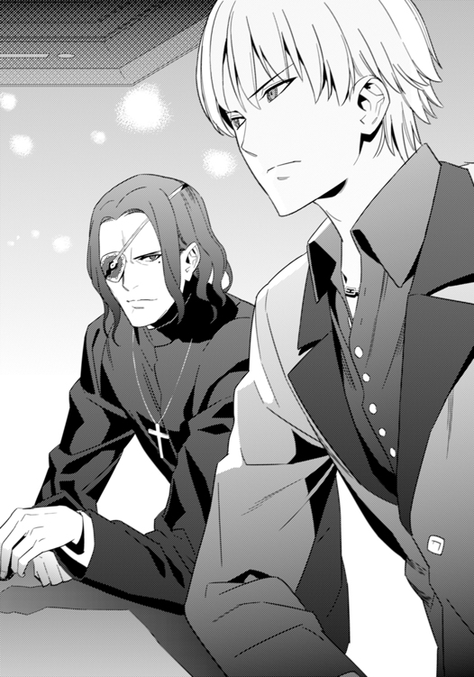
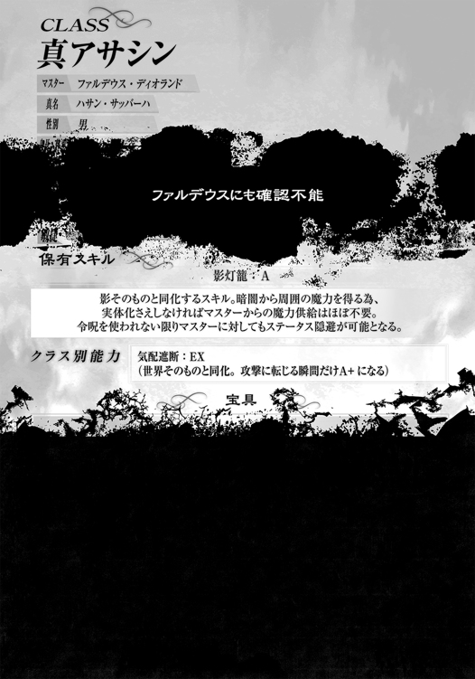

| Fate/strange Fake(2) | |
| 成田良悟 | |
本書（電子版）に掲載されているコンテンツ（ソフトウェア／プログラム／データ／情報を含む）の著作権およびその他の権利は、すべて株式会社ＫＡＤＯＫＡＷＡおよび正当な権利を有する第三者に帰属しています。
法律の定めがある場合または権利者の明示的な承諾がある場合を除き、これらのコンテンツを複製・転載、改変・編集、翻案・翻訳、放送・出版、公衆送信（送信可能化を含む）・再配信、販売・頒布、貸与等に使用することはできません。
それは、どこにでもある怪談話。
× ×
『冬木』と呼ばれる土地がある。
街の中央に大きな川が通り、そこを境として高層ビルやショッピングモールが立ち並ぶ都会的な『新都』と、昔からの家屋や自然が多く残る『深山町』に分かれ、同じ土地の中で様々な色合いを併せ持つ地方都市だ。
しかし、この土地には別の顔がある。
ここは日本で有数の霊地であり、かつて『アインツベルン』『遠坂』『マキリ』という三つの家系の魔術師達が、とある儀式の基盤を練り上げた土地だ。
つまりは、魔術師達の儀式──『聖杯戦争』の戦場となってきた場所である。
五回に渉る聖杯戦争の中、様々な生と死、奇跡と破滅が繰り返されてきた地。
だが、第五次聖杯戦争から数年が経過した冬木では、そのような殺伐とした色とは程遠い、実に平穏な空気に包まれていた。
もっとも、それは表面上のものだけなのかもしれないが──
少なくとも、部活動に勤しむ高校生達が、休憩時間に雑談を嗜む程には平和だった。
× ×
穂群原学園 弓道場前
放課後のひととき。
弓道部の部員達が、休憩時間にたわいも無い噂話に興じていた。
「......本当だってば。柳洞寺で昔、着物来た幽霊が出たんだって！」
「聞いたことないなぁ。昔って......今はいないの？」
「うん、霊感ある人とかでも、今は全然見えないって」
「成仏したの？」
「まあ、寺だからな」
「そういえば、あの寺の池にワニガメがいるって噂あったよね」
そんな、怪談とも与太話ともつかない話が続く中、一人の少女が、冬木の街に近年生まれた怪談話を口にする。
「ねぇ、『蝉菜マンションの赤ずきん』って知ってる？」
「あの、美綴先輩の怪談？」
「そうそう、ああ、一緒に聞いたんだっけ？」
上級生同士の会話に、下級生達が首を傾げながら割り込んだ。
「あ、俺、知らないですその話」
「美綴先輩？ 美綴先輩って、たまにここに遊びに来るＯＢの？」
すると、話を切り出した上級生が、楽しそうにその『怪談』を語り出す。
「うん。あの人から聞いた怪談なんだけどさ......。ほら、新都の玄木坂に、蝉菜マンションってあるじゃない？」
だが、すぐにその顔から笑みを消し、神妙な調子で言葉を続けた。
彼女は理解していたからだ。
その怪談には、つい数年前に起こった、現実の心中事件が関わっているという事を。
「これは、そのマンションから広まった噂なんだけどさ......」
× ×
その都市伝説は、怪談の語り口を排除して語るならば、実に単純な話だった。
玄木坂にある蝉菜マンションに越してきた、一組の夫婦。
その夫婦の間には、虐待を受け続ける娘が居た。
いつも赤いフードを被った、幼い少女。
少女の境遇に気付きながらも、彼女の隣人である『Ａ氏』は、他人事だと無視し続けた。
虐待によって腕も上がらなくなっていた少女から、エレベーターの中で『ボタン押して』と頼まれるだけの、限り無く他人に近い関係。
しかし、幼い少女にとっては、自分の為にボタンを押してくれる隣人は、両親よりも頼りとなる存在に思えたのかもしれない。
だからこそ──
少女の母親が無理心中を図った時、少女は血塗れの状態で逃げ出し、隣人に助けを求めた。
何度も何度も隣人の部屋の扉を叩き、助けを求める少女。
だが──またいつもの虐待だろうと思っていた『Ａ氏』はそれを無視した。
他人事だと。
自分には関わりの無い事だと。
何度ドアを叩かれても、彼は無視し続けた。
それでも、ドアは叩かれ続ける。
逃げ出した少女にとっては『Ａ氏』しかすがれる相手がいなかったのだから。
しかし、『Ａ氏』はその少女の悲痛な叫びから──少女の命から、顔を逸らした。
テレビの音量を上げ、自分の世界に閉じこもる。
所詮、他人事だと。
こうして、幼い少女は、最も信頼していた人物に裏切られた。
翌日、当の夫婦の死体が発見されたが、何故か、少女の行方だけが分からない。
明らかに死は免れぬ量の出血の跡だけを残し、忽然と姿を消してしまっていたのだ。
虐待らしき音が消えるのと入れ替わりに、『Ａ氏』は毎晩、深夜のノック音に悩まされる事となる。
そして、ある夜、耐えきれなくなった『Ａ氏』が扉を開けると、そこには赤いフードを被った少女が立っており──血塗れの顔で言うのだ。
『ねえ、ボタン押して』
× ×
「......って話！」
思い出しながら大雑把に語り終えた少女に対し、隣にいた部員達が呆れたように言った。
「......あんたが話すと全然怖くないんですけど」
「同じ話でも、語り手が違うとこうも怖く無くなるんだね......」
「っつーか、何が怖いかって、お前の語り口の下手さが一番怖ぇよ」
話を知る同級生の男女達からブーイングを受け、語り手の少女は手を強く左右に振る。
「いやー、美綴先輩みたいには無理だって！ あの人、すっげー話に入り込ませるしさ！」
「ああ、長い廊下の演出の下りとか、凄かったよね。......っていうか、ドアを開けた時は最初赤ずきんは居なかったんだよ！ それで、振り返ったら長い廊下の奥に立ってたんだってば！」
「そうだっけ？」
「そうだよ！ 他にも色々と飛ばしすぎ！ Ａ氏は孤独な状況が好きだったとか、刑事さんとのやりとりとか、もー。心中は実際にあった事件なのに、その事件自体が噓っぽくなったよ」
その言葉に合わせ、他の部員達も次々と会話に加わり始めた。
「不謹慎ですよ先輩。いや、実際の事件を怪談にしてる時点でもうかなりアレですけど」
「え、一家心中は本当にあったんですか？」
「そういえば、その心中事件、他にも色々と変な噂あったよね」
怪談を初めて聞いた者も含めてワイワイと盛り上がった所で、中途半端な怪談を聞かされた下級生達が不満の声を上げ始める。
「でも、どうせならそのＯＢの先輩から聞きたかったなぁ」
「そうですよ、オチだけさらっと話されたみたいで最悪っすよ」
すると、語り手の少女がケラケラと笑いながら答えた。
「やー、少なくともここじゃあもうしてくれないよー」
「え？」
「あの人の怪談、怖すぎるからって、タイガーに直々に禁止されたんだよ。ほら、タイガー苦手じゃん？ こういう話」
「そういえば、陸上部でも確かそういう話は禁止されてるって聞いたけど......。やっぱり凄い怖がりな先輩がいたからとかなんとかでさー」
「タイガーって普段は図太いのに、変なとこでメンタル弱いよね」
弓道部の顧問である女教師の渾名を口にしていると、遠くから『ほらー！ 休憩時間は終わりだよー！』という声が響いてくる。
「うわ、噂をすれば、藤村先生だよ」
「もうそんな時間かぁ」
「怪談で終わっちゃったよ休憩時間......」
消化不良と思いつつも、生徒達は部活を再開すべく腰を上げた。
準備を始めながら、休憩時間の会話の残滓が、二言三言だけ引き摺られる。
「......結局あれ、Ａ氏って最後どうなるんだっけ？」
うろ覚えだった事を恥じたのか、こっそりと同級生に尋ねる語り部の少女。
「失踪したんじゃなかったかな」
あっさりとした調子で答えた後、不謹慎だと思いつつも、ほんの軽い冗談を付け加えた。
「今でもまだ、赤ずきんから逃げてたりしてね」
それは、どこにでもある怪談話。
冬木の若者達がささめき合う、どこにでもあるような噂話。
しかし、その話には、噂では語られぬ続きがあった。
都市伝説の後日談は、遠い異国の地にて紡がれる事となる。
『蝉菜マンションの赤ずきん』。
その怪談の主役が巻き込まれたのは、生半な流言飛語などよりも遙かに荒唐無稽な──
偽りだらけの、『聖杯戦争』だった。
某所
「あーあ、そこかぁ、よりにもよって、『そこ』に来ちゃったんだぁ。捨て駒ちゃん」
暗闇の中、水晶玉の中に映し出された光景を見て、フランチェスカは退屈そうに肩を落とす。
水晶玉に浮かぶのは、スノーフィールドの古びたオペラハウスを映し出した映像だ。
「もー、そこはもう、喚ばれる英霊さんはアルトちゃんだって決まってるのに」
映像の中には、こそこそとオペラハウスに忍び込む、一人の少女の影が見える。
「どうせなら、不確定要素の強いシグマ君の所に行けば良かったのになぁ。そしたら、相乗効果でもっともっと面白くなったかもしれないのに」
ゴスロリ服を纏った少女は、そんな奇妙な独り言を呟いた後、すぐに笑顔を取り戻しながら言葉を続けた。
「ま、それはそれでいいか。面白い遊びを思いついたし」
彼女は誰かと魔術通信で連絡を取った後、暗闇の中でダラリとしながら10分ほど水晶玉を眺めていたのだが──
水晶が一際強い光を放った瞬間、彼女は映像内の異変に気付き、目を輝かせて口を開いた。
「あれ？ あれれ？ 誰かな、あれ？ もしかして、アサシン!?」
彼女の言葉が終わるか終わらぬかの内に、映像に更なる変化が訪れたらしい。
フランチェスカは興奮しながら、水晶玉の中の『死体』を見つめてケタケタと笑い出した。
「アハハッ！ すっごい、すっごい！ いきなりアクシデントだよ！ どうなるんだろう！」
子供のように目を輝かせながら淫靡に頰を紅潮させ、恍惚とした笑みを浮かべるフランチェスカ。
「ぁあ、あぁ、ああ！ どうするのかな、どうするのかなあ、アルトちゃん！ 呼ばれた瞬間にマスターが死んでるなんて、なかなかドラマチックだよね？」
物騒な言葉を口にしながら、彼女は笑い、笑い、笑い──
次に水晶玉の中に映し出された存在を見て、笑顔のまま、首をグニャリと横に曲げる。
「......あれれ？」
そして、頭に疑問符を浮かべながら呟いた。
「あの『セイバー』......誰？」
× ×
アメリカ スノーフィールド
建物の一部が崩落したオペラハウスの中で、アヤカ・サジョウは自分の運命を呪っていた。
例えそれが自業自得の末路だとしても、運命というものを呪わずにはいられない。
現在の彼女を取り巻く状況は、異常に異常を重ねた、神か悪魔の悪戯としか思えない状況だったからだ。
彼女の横に転がっているのは、人間の死体だ。
外傷らしきものはないが、まるで心臓を握り潰されたかのような苦悶の表情で固まっており、生命活動が欠片も感じ取れない。
アヤカの目には、実際に何者かの手で心臓を握り潰されていたように見えたのだが──その心臓は既に無く、胸元にも傷跡は疎か、服が破れた跡すら見当たらなかった。
そして、その『心臓を握り潰した何者か』は、既にここには存在していない。
彼女の眼前に現れた不思議な男の手によって、何処かへと退散してしまったからだ。
話は暫し遡る。
数分前──アヤカは、囚われの身だった。
死体が死体になる前の存在、一人のとある魔術師の呪具によって全身を拘束されていたのである。
「あれで隠れていたつもりとは、随分と軽く見られたものだな」
呆れたように言う魔術師は、アヤカの身体をジロジロと睨め回して首を傾げた。
「その令呪にも似た刻印......貴様がファルデウスの言っていた奴か。何が目的だ？」
「......知らないよ。私はただ、変な白い女に言われて来ただけだから」
ぶっきらぼうな口調で語るアヤカの目には、世の中に対する諦めと、理不尽な状況に対する怒りの色が湛えられていた。
それを見た魔術師は、ふむ、と考え、さして興味なさそうに言葉を紡ぐ。
「なるほど、アインツベルンの『肉人形』から捨て駒にされた憐れなはぐれ魔術師......といった所か。まあ、儀式の邪魔をされても困る。悪いが、先に始末をつけさせてもらおう」
全身に奔る魔術回路に魔力を走らせながら、殺意すらなく、作業のようにアヤカの息の根を止めようとする魔術師だったが──
「......む」
急にその動きを止め、耳につけた呪具らしきピアスに指をあてた。
「はい。......。......この女を？ 何故？」
呪具を通じて誰かと通話を行っているようだが、当然ながらアヤカに相手の声は聞こえない。
「......なるほど、承知した。あなたの遊びに付き合うとしよう」
通話を終えた魔術師は大きく息を吐き、呪具で縛られたアヤカへと向き直った。
「気まぐれの遊びとは言え、確かに興味はある」
「......？」
「何、これから喚び出す英霊が、どの程度私に忠誠を誓うのか確かめるだけだ」
魔術師は口元を僅かに歪ませ、クツクツと笑いながら言葉を続ける。
「かつて円卓の騎士王と謳われた高潔な英雄が、『無抵抗の女を斬り捨てろ』、と言う指示に従うかどうかをな」
アヤカに理解できたのは、自分はこれから呼び出される高潔な英雄とやらに殺されるかもしれないという事だけだった。
「その円卓のなんとかさんが殺すのを拒んだら、私は助かる流れ......じゃないよね」
皮肉げに、そして気だるげに言うアヤカに、魔術師はハッキリと答えた。
「令呪を使ってみるというのも手だが、残念だが、私は遊びで令呪を消費するほど享楽的ではない。その呪具で首を絞め折るだけだ」
「いいの？ 先に殺さないと、あんたの儀式を邪魔するかもしれないよ？」
「声が震えているぞ？ 強がりを言うな」
半ば捨て鉢となったアヤカの皮肉に対し、魔術師は淡々とした調子で言葉を続ける。
「なぜ、これから喚ぶ英霊の真名も同然の情報をわざわざ口にしたか分かるか？」
「......？」
「私がこれから喚ぶ英霊も、『宣戦布告』のひとつだからだ。漏れても問題ないどころか、お前の雇い主を通じて協会とアインツベルンへの壮大な皮肉とするそうだ。まったく無駄な行為だとは思うが、見合った報酬は受け取っているのでな」
普段は情報の秘匿を旨とする魔術師の常識の中で、『情報を喧伝せよ』との依頼を受けたというその魔術師は、肩を竦めながら言い続けた。
「ようするに、お前の命がけの潜入は、こちらとしては織り込み済みだったわけだ」
「......」
「その令呪モドキに召喚を阻害する力があるか否かも確かめろとの話だが......まったく、フランチェスカは我々すら玩具の一つとして見ているようだ。まあ、仮に君が何か抵抗して儀式を台無しにしたとしても報酬は変わらん。私はハズレクジを引いたと考え諦めるとしよう」
自らの首に巻き付いている呪具の一部が蠢くのを感じながら、アヤカは静かに目を伏せる。
そんな彼女を余所に、魔術師は舞台上に置かれた祭壇の前で、呪文を唱え始めた。
「素に銀と鉄。礎に石と契約の大公────」
アヤカにとっては意味の無い単語の羅列。同時に、それは死刑へのカウントダウンでもある。
「祖には我が大師××××××─────」
──ああ、あっけない。
他人事のように魔術師の呪文を聞きながら、アヤカは小さく呻いた。
──私の逃亡劇は、こんな所で終わるのか。
「降り立つ風には壁を。四方の門は閉じ──────」
──これは単なる運命の悪戯か？ それとも、『あの子』の呪いなのか？
できる事ならば後者であって欲しいと思った。
──まあ......だとしたら、これで気が済んでくれるのかな。『あの子』は。
なにか理由があるだけ、少しだけマシかもしれない、と。
自分がこれから死ぬという現実から逃げるかのように。
「......？」
ふと、彼女は気付く。
魔術師の呪言が周囲に響くにつれ、自分の身体の中に走る奇妙な力の流れを。
自分の身体中の血管が鉄と化し、外の磁石に引き寄せられるかのような感覚。
アヤカはすぐに、それが血管ではなく、自らの身体の五箇所に刻まれたタトゥーのあたりから感じる脈動であると理解した。
怨嗟か、あるいは歓喜か。
タトゥーを軸として、自分の身体全体が叫び声を発しているかのような錯覚を覚える。
徐々にその声は大きくなり、呪文が搔き消されているかのようだ。
しかしながら、魔術師はその異変に気付いていないらしい。
拘束呪具に絶えず魔力を送り続け警戒はしているが、召喚の儀を中断する気はないようだ。
もっともアヤカには、ここで何か壮大な魔術が発動したとしても、この魔術師をやっつけたり自動的に安全な場所にワープする等という楽観的な展開になるとは思えなかった。
──まさか、自爆とかじゃないよね？
どちらにせよ、自分の死は免れないだろう。
その事実と相まって、アヤカの中に恐怖が走る。
死にたくないという渇望も。
しかしながら、その感情はどこか他人事のように感じられた。
──死にたくない？ なんで？
──生きる目的もない私が？
果たしてそれが自分の脳味噌が思い浮かべている疑問なのか、あるいは腕に刻まれたタトゥーや『白い女』に仕込まれた呪いが言わせているのか、アヤカには判別する事ができない。
初歩的な判断能力をマヒさせる程、彼女のタトゥーが奏でる騒音が大きくなっていたからだ。
まるで、これから現れる何かを歓声か、あるいは絶叫で迎え入れるかのように。
斯くして、次の瞬間──
オペラハウスのステージ上に、『死』が形をもって舞い降りた。
ただし、アヤカではなく、彼女の処刑人であった筈の魔術師の背後に。
「抑止の輪より来たれ、天秤の守り手......よ......？」
いつから、そこに居たのだろうか。
少なくとも、アヤカの目には『それ』が突然現れたように見えた。
影のような黒い衣を纏った、小柄な人影。
黒い布地を全身に纏っている事は確認できたのだが、顔すらも良く解らなかった。
ただ、その布地の合間から異様に長い腕が伸び、被害者の胸に触れた瞬間だけはハッキリと覚えている。
それを見た瞬間に、アヤカはハッキリと理解した。
自分が置かれているこの状況は、既に既知の世界ではなく──普通の人生を送る者達の目に映る事のない、この世の影の裏側なのだと。
理解した瞬間、彼女の視界に小さな人影が現れる。
赤いずきんを被った、幼い少女。
果たしてそれは幻影なのか実像なのか、混乱する彼女には理解できない。
──なんで、ここで出てくるんだ。
──この建物に、エレベーターは......ない、のに。
オペラハウスの舞台の上。死体を踏みつけるような形で現れた『それ』は、無邪気にこちらを向いて微笑んでいた。
その笑顔の意味を理解するよりも先に、全身を怖気が走り抜ける。
アヤカが背骨をギチギチと震わせるのと、黒衣の乱入者が己の長い手の中に現れた心臓のようなものを握り潰すのは、果たしてどちらが先だったろうか。
「がッ......ば......？」
自分の身に何が起こったのか分からぬまま、魔術師は口から血を吐き出した。
果たして彼は、誰が自分を殺したのか認識していたのだろうか。
アヤカは黒衣の人影と赤い少女の両方に恐怖を感じつつ、その裏側では「ああ、私が殺したって勘違いされてたら嫌だな」などと、やはりどこか他人事のような不安が頭の中に浮かんでいた。
そうでもしなければ、恐怖に押し潰されると本能が理解していたのかもしれない。
魔術師が動かなくなるのと同時に、アヤカの全身を拘束していた縄状の呪具がボロボロと崩れ落ちた。
自らの身体が解放された事に気付き、一瞬だけ意識を逸らした、その刹那──
彼女の視界から『赤いずきんの少女』が消え──
代わりに、黒衣の人影が目の前にまで迫っていた。
「......ッ！」
呼吸が止まる。
「......貴女は、聖杯を求める魔術師か？」
機械的な問い掛け。
相手の声を聞くと同時に、先刻感じたものとは比べものにならない程の寒気が、無数の針となってアヤカの全身を駆け抜けた。
声からして、若い女だという事は理解できる。もしかしたら自分より年下かもしれない。
だが、その身が放つ気配は先刻「お前を殺す」と言った魔術師とは比べものにならぬ程に冷たく、鋭く、そして重厚だった。
初めて会う存在なのに、信じられる事がある。
答えをひとつ誤れば殺される。
噓をついても殺されるだろう。
相手に現在『殺意』はまだ無い。だが、一つ選択を誤れば殺意を感じる間もなく、自分は目の前に転がる魔術師の死体と同じ姿になるであろう。
そんな確信を得たアヤカは、黒衣の女に正直に答えを返そうとした。
「私は......」
刹那──
オペラハウスのステージを包み込む形で、光が溢れた。
「！」
「!?」
黒衣の女は警戒して飛び退るが、拘束から解放されたばかりのアヤカは立つ事すらできない。
目を細めながら、光源と思しき方向に目を向けるのが精一杯だ。
光の中に影が見える。
人影が──複数。
不思議な光景だった。
ほんの数秒であったにもかかわらず、時が止まったかのように感じられる空間の中、その複数の影のうちのいくつかは、その場に跪き──
最後に現れた、一際色濃い影を迎え入れる。
光が薄れていくと、いつの間にかその複数の影は消えており、最後に現れた色濃い人影だけがその場に残っていた。
荘厳な装束に身を包んだ、まだ若い金髪の男。
金色の髪の合間には所々赤毛が混じっており、美しい顔立ちの中に、獣のように爛々と輝く双眸が浮かんでいる。
一歩離れた位置でその男を睨む黒衣の女性から色濃い『死』が感じられたのと同じように、光の中から現れた男からは、普通の人間が持たぬような尋常ならざる『熱』が感じられた。
そんな男が、きょろり、ギョロリと周囲を見渡し、言った。
「これはこれは、少しばかり変わった状況らしい」
足元に転がる魔術師の死体と、警戒の目を向けている黒衣の女性に交互に目を向けた後──
男は、ニヤリと笑いながら言った。
「その出で立ちと、今感じた『力』の流れ......、もしかして、『山の翁』に連なる者か？」
「......ッ!?」
空気が、一瞬で変わった。
アヤカにはまったく意味の解らない言葉だったが、黒衣の女にとっては何かの核心に触れる一言だったらしい。
男はニヤリと笑い、黒衣の女を挑発するように言った。
「どちらにせよ、俺も君も聖杯を求める以上、敵味方の関係なのは確かだが、どうする？」
言葉と同時に、黒衣の女が殺意を膨らませながら跳躍する。
まるで、地の影が空中に跳び上がったかのようだ。
一息で舞台の袖まで飛ぶと、ステージを取り巻く柱から柱へと残像を残しながら跳躍を続け、天幕の合間を飛び交う頃には、数十人に分身したのかと錯覚させる。
「ははッ！ 凄いな！ ロクスレイより身軽な奴は初めて見た！」
子供のように目をキラキラと輝かせ、何者かの名を出しながら、男は自分に殺意を向けて飛び交う黒衣の女を賞賛した。
「......」
そんな賞賛を挑発と受け取ったのか、黒衣の女は更に跳躍の速度を上げ──
不意に、その姿が完全に無となって消え失せる。
「消え......た......？」
アヤカが上を見上げながら呆然とそんな事を呟くと同時に──
黒衣の女は、その場にいた全ての者の死角から現れた。
ステージの上ではなく、現れた男の背後、その床に映る影から飛び出す形で。
背のあたりから異様に長い腕が伸び、男の背の中心、心臓の辺りに迫る。
つい１分ほど前に魔術師を屠り去ったのと同じ、明確なる死の腕。
だが、男の身体にその腕が届く事はなかった。
何処かから放たれた矢が、女の手を弾き飛ばしたのだ。
「......ッ!?」
黒衣の女が、僅かに目を見開く。
彼女にとって、まったく死角からの一撃だった。
何しろその矢は、男の足元──それこそ、舞台の床に映る影の中から唐突に現れたのだから。
「ははッ、比べられた事が不満か？ だが、相変わらず見事な腕だ」
貴族風の青年はそんな言葉を誰ともなく呟くと、笑顔を浮かべながら剣を抜く。
豪奢な作りの剣で、アヤカにもひと目で王侯貴族が使う類の剣だと理解できた。
そして、笑顔のまま、力ある言葉と共に──振り抜く。
──『×××××勝利の剣』。
再び、光がオペラハウス内部を包み込んだ。
魔力を帯びた男の剣から雷撃の如き光が奔り、距離を取ろうとしていた黒衣の女へと一直線に突き進む。
そして──
目が眩んでいたアヤカの耳には、激しい衝撃音と、続いて何かが崩落するような音が聞こえてきた。
恐る恐る彼女が目を開けると、そこには──
半壊したオペラハウスの姿と、崩れた天井から覗く星空が目に映る。
「......」
放心している少女に対し、男が言った。
「問おう、汝が俺のマスターか？」
その言葉を聞き、移りゆく状況について行けなかったアヤカの脳味噌が、ようやくまともな状態に復帰し始める。
彼女は改めて、現在の状況について考えた。
どうやら、魔術師が執り行おうとしていた『儀式』は無事に完遂されたらしい。
だが、どうにも事前に聞いていた話と違う。
自分をこの場に無理矢理連れてきた『白い女』の話通りならば、この場の儀式によって現れるのは、昔の英雄かなにかの霊のようなものらしい。白い女は『英霊』と説明していたが、現れるのは一体だけだと聞いていた。
ならば先刻、光の中に複数の人影が見えたのは何だったのか。
男が危機の際に、あの矢を撃ち放ったのは彼自身なのだろうか？
他にも矢継ぎ早に疑問を思い浮かべるアヤカだが、すぐにどうでも良くなった。
冷静になるにつれ、自分の置かれている立場を理解し、吐き気を催す。
目の前に転がる魔術師の死体。
彼は死んだのだ。自分の目の前で。本当にあっさりと。
そして、男は魔術師の死体を確認はしたものの、僅かに首を傾げただけで、特にショックを受けた様子もなく語りかけた。
「安心しろ、巻き込んだ民衆の気配はない。代わりに、賊にも逃げられたようだが......ふむ、俺から逃げ切るとは見事な奴だ。しかし、今更引き返してはくるまい」
人の死が、当たり前なのか？
アヤカにとって、受け入れがたい状況だ。
──ああ、ああ、そうか。
──あの『白い女』は......私にこんな事をさせようとしていたのか。
──『聖杯戦争に参加しろ』か。
──なるほど、戦争なら人が死ぬのは当然だ。
どうしてこうなった？ 彼女は考える。
何故こんな事になってしまったのか。
何故、自分はこんな人生を歩むハメになってしまったのか。
「それを踏まえた上で、もう一度問おう」
過去を悔やむアヤカに対し、男が問い掛けてくる。
どうやら、自分が何故ここに来たのかをじっくりと思い返す時間はくれないようだ。
「......」
何もかもが混乱に包まれたこの状況の中──
ただひとつ、心に決めた事はあった。
もう、誰かの死を受け止める事などできない。
そんな事を私に強いるのが運命だというのならば。
逆らえば自らが死を迎えるというのならば。
せめて、抗いながら死んでやろうと。
どのみち自分は、生きる価値など無い人間なのだから。
「君が、俺のマスターという事でいいのか？ 俺は、見ての通りセイバーのクラスだ。納得できたなら、早速契約を済ませ──」
男の言葉を遮る形で、アヤカは即答する。
「違う」
覚悟を決めたというよりは、半ば自棄に近い形で、喉の奥から声を絞り出した。
「断じて違う」
「なに？」
男の声に反応して、自分の身体のタトゥーが僅かに輝き、目の前の男と共鳴しているのが分かる。おそらくは、ここで『私がマスターだ』と言えば、『白い女』の言っていたように、英霊を簒奪する事もできるのだろう。
だが、彼女はそんな『白い女』の意図を無視し、男を睨み付けた。
「私はもう......お前達の思い通りにはならない」
恐怖による震えを無理矢理押さえ付けながら、彼女はそれこそ、自分の命すら捨てる覚悟でその言葉を言い放つ。
「私に......干渉しないでくれ」
アヤカはそう言った瞬間、自分が男の剣によって斬り殺されるだろうと思っていた。
先刻の黒衣の女とは違うが、目の前の男からも、通常の人間とはまったく違う、桁外れに強い存在の力が感じられる。
男にとって、普通の人間など蟲ケラも同然に違いない。アヤカはそう考えた。
だが──その推測に反して、男は困ったように首を傾げ、剣を鞘にしまいながら口を開く。
「なるほど、マスターじゃないのか。それじゃしょうがないな」
そして、溜息を吐きながら半分近く崩落した天井を仰ぐ。
「ここは歌劇場か？ まいったな......」
何故かショックを受けたように目を細め、考え込むように腕を組んだ。
「現代の劇場はこうも脆いものなのか......。『座』に与えられた知識だけでは分からないもんだな......」
独り言をブツブツと呟きながら、舞台の袖に消えて行く。
後に取り残されたアヤカは、ポカンと口を開けた後、数秒待ってからハッと気付く。
「助かった......？」
だが、そう思ったのも束の間──
「動くな！」
劇場の入口のひとつから、男の怒声が響いてくる。
先刻の男とは別人のものだったが、こちらはすぐに正体を判じる事ができた。
入口から現れたその男達は、お揃いの装束──すなわち、警察の制服を身に纏って、アヤカに暴徒鎮圧用のテイザーガンを向けている。周囲に人がいないのに拳銃の方を抜かなかったのは、一見してアヤカが非武装だったからだろうか。
「両手を頭の後ろに組んで床に伏せろ！ ゆっくりとだ！」
「......ええー」
気だるげな声をあげつつも、アヤカはゆっくりと言われた通りにした。
どう見ても私は被害者だろう。彼女はそう考えたが、爆弾テロらしき現場にいた不法侵入者という事を考えれば、まあ当然の対応かもしれない。
しかも、横には魔術師の死体があり、彼が儀式に使用した怪しげな祭壇なども残っていた。
これは相当ややこしい事になりそうだと思いつつも、彼女はふと、他人には理解しがたい事を考えていた。
──警察署って......エレベーターあるよね。
──ああ......憂鬱だ。
──いや、その前にあの『白い女』の呪いで死ぬのが先かな。
そんな事を考えている間に、警官達はアヤカを取り囲み、傍にあった魔術師が死んでいる事を確認する。
「おい！ お前がやったのか」
「違う違う。私は被害者だよ」
流暢な英語でそう答えたアヤカの腕を押さえながら、警官の一人が言った。
「なら、ここで何があった。何故改装工事中のオペラハウスの中にいた」
「あー......いや、それは」
魔術師に攫われてきたと噓をつく事も考えたが、周辺の監視カメラでも調べられればすぐに噓がバレて、尚更ややこしい事になるだろう。
しかし、正直な事情を話すわけにもいかない。
言い淀んでいるアヤカをやはり怪しいと判断したのか、警官の一人が手錠を取り出した。
「不法侵入並びに、建造物破壊テロの容疑で逮捕する。いいか、お前には黙秘権が......」
──あ、これ、本当に言うんだ。
アメリカのテレビドラマなどでよく見かけるミランダ警告を聞きながらそんな感想を抱いているアヤカ。この先どうなるかは分からないが、死ぬにしても、魔術師殺害とオペラハウス破壊の冤罪をうけたまま死ぬのは些か納得がいかない。
そう思っている彼女が伏せられたまま目を開けると──そこに、また『彼女』が現れた。
赤いずきんを被った、幼い少女。
警官達には見えていないようで、少女の周りを普通に素通りしていく。
赤いフードは深く被られ、鼻から上は伺い知れない。
だが、少女は顔をこちらに向け、薄く微笑みながら何か喋ろうと口を開いた。
聞きたくない。これ以上見たくない。
そう思いつつも、視線を外す事ができなかった。
アヤカはその理由を理解している。
これは、何年も前から自分の身を縛る、自業自得の呪いなのだからと。
赤いフードの少女が何かを彼女に伝えようとした、その時──
「おい、待て」
凜とした声がオペラハウスの中に響き渡り、同時に、赤いフードの少女の姿が消え去った。
アヤカと警官達が声の方に目を向けると、三階席の崩落から免れていた部分、孤立しているＶＩＰ席に豪奢な貴族服の男が立っている。
──あれ？ さっきの......。
──なんでまだいるんだ？
アヤカが疑問に思うが、男はアヤカと警官達に向かい、一方的に宣言した。
「俺が証言しよう。そいつを殺したのは、その眼鏡をかけた女じゃない」
「誰だ！ そこを動くな！」
距離の関係だろうか。警官の数人がテイザーガンではなく、拳銃を向けながら叫ぶ。
だが、男は意に介した様子もなく、堂々と口上を述べ続けた。
「ついでに言うなら、この歌劇場を破壊したのもその女じゃない」
「なに？」
「俺がやった、この剣でな」
腰に下げた剣の鞘をポンと叩きながら言う男に、警官達が眉を顰める。
彼らは視線で合図を交わし合い、数人が男のいるＶＩＰ席へと向かって走り出した。
剣でやったという話は信じていないようだが、犯人だと名乗る男に警戒はしているらしい。
「気を付けろ、まだ爆弾を仕掛けているかもしれん」
そんな警官の囁きを耳にしたのか、男は困ったように口を開いた。
「爆弾と一緒にされても困るんだがな。......ん？」
言葉の途中で、半壊していた天井の一部が再び崩落を始める。
「危な......」
アヤカが思わず呟き、警官達もそれに気付いて逃げようとするが、数名は間に合いそうもない状況だ。
すると、ＶＩＰ席の男は腰の剣に手をかけ、日本刀の居合いに近い形で抜刀する。
先刻とは比べるべくもない威力だが、やはり光の筋が刀身から伸び、落下する石の塊を粉みじんに破壊した。
何が起こったのか分からず、間一髪で助かった警官達も、安全な場所から何もできずにいた警官達も揃ってその場に立ち竦む。
尋常ならざる技を成し遂げた男は、堂々と立ち振る舞いながら、目を白黒させている警官達に言った。
一瞬だけ視線をアヤカの方に向け、軽い微笑みを浮かべながら。
「これで、俺が犯人だという証拠になるか？」
× ×
同時刻 スノーフィールド西部 大森林
「......変わった気配を感じるね」
マスターである銀狼と共に、１日かけて森の結界化を進めていたランサーの英霊は、街の方角から流れてくる魔力の乱れを察知し、不思議そうに呟いた。
「強い魂の周りに、七つの魂が従属してる。その傍にも、やっぱり奇妙な魂がいるのを感じるよ。なんだろうね？」
やや緊張したエルキドゥの心を汲み取ったのか、クォン、と不安げに鳴く銀狼。
そんなマスターの背筋を撫でつつ、エルキドゥは優しい声で言った。
「大丈夫だよ。今夜は僕は動かない」
「最後にギルを全力で迎える為に、僕もそれなりの準備をしないといけないからね」
× ×
オペラハウス前
「こちら、建物の一部が崩落した市街中心部のオペラハウス前です。50年以上の伝統を誇るこのオペラハウスに、一体何が起きたのでしょうか！」
スノーフィールドの地元ケーブルテレビ局のレポーターが、半壊したオペラハウスの前で実況を続けていた。
レポーターは数人にインタビューを行った後、更に手近にいた青年に声をかける。
「ちょっとすみません。現場で何があったのか御存知ですか？」
「え？ これ、テレビですか!? うわー、教授やライネスちゃん、見てるかなあ！」
声をかけられたのは、スチームパンク風の腕時計を着けた若い青年だ。
「市民の方ですか？」
「あ、いえ！ ここにはたまたま観光で来てて......。ええと、俺も何が起きたのか分からないんですけど、寝てたら急に胸がざわめいて、オペラハウスの方を見たら、ドーンって音がして、そのまま壁が崩れ始めたんです！」
「胸がざわめいた？」
「ああ、ええと......虫の知らせって奴です！ はい！」
何かを隠しているような素振りの青年に、レポーターは訝しげな視線を向けたが──
オペラハウスの方に動きがあったのを察知し、青年にはそれ以上追及せず、小声で謝礼だけ告げて走り出した。
「今、内部に入っていた警官隊が出て来ました！ 警官隊が何者かの身柄を拘束しています！ オペラハウスの爆発は事故ではなく、事件だったという事でしょうか!?」
テレビカメラは現場から出て来た存在を映し出しており、ライブ中継でスノーフィールド全体に放映されている。
すなわち、警察に手錠をかけられて出て来た、時代錯誤な服を纏った青年を。
× ×
同時刻 スノーフィールド北西 コールズマン特殊矯正センター
「やれやれ、厄介な事になりました。まさか肝心要の『セイバー』の召喚場所でトラブルとは......。フランチェスカさんの管轄でしょうに、また彼女の悪い癖がでましたかね」
溜息を吐きつつも、この程度のトラブルは想定内だとばかりに、各所に連絡を取り始めるファルデウス。
「私です、オペラハウスの件は、改装工事に使った塗料に引火した事故と......」
そこまで言いかけた所で、思わず言葉を止めた。
「......失礼、また後ほど連絡します」
通話を切り、無数に並ぶモニターのひとつ、市内のケーブルテレビの生中継を映した画面に目を向ける。
そして、そこに映し出されていた存在を観て、彼はまず、自分が敵対魔術師による幻覚でも見せられているのではないかと疑った。
恐らく、聖杯戦争を詳しく知る魔術師であればあるほど、同じ疑念を抱く事だろう。
なにしろ、市内限定のケーブルテレビとは言え──
テレビの生中継の中に、本物の『英霊』が映し出されていたのだから。
× ×
オペラハウス前
野次馬達は青年の時代錯誤な姿を見て、ざわめきながら互いの顔を見合わせた。
どう見ても、オペラハウスでの公演の準備をしていた役者という出で立ちである。
練習中にガスか何かが爆発したのではないか？
今朝方報道されていた砂漠のパイプライン事故の事も考え、野次馬達の中にはまだ『事故ではないか』と思っている者も多い。
レポーターも、やはり事件ではなく、改装中の事故なのだろうかと思い始めていた。
ところが──
警察に連れられていた男が、手錠を嵌めたまま不意に跳躍し──その場で最も高い車両である消防車の上へと僅か数歩で飛び乗ったではないか。
手を一切使わず、足の膂力だけで駆け上がった事に野次馬達は驚き、警官達がざわめきながらテイザーガンを男に向ける。
そんな喧噪と騒音の中──
「聞け、民衆よ！」
男の声は、不思議と遠くまで響き渡った。
「詩吟と物語を奏でし不可侵の場である歌劇場を破壊した事は、慚愧の念に堪えない。全ては俺の不覚だ。言い訳はしない」
まるで脳味噌を直接揺らされているかのように、聞いた者達の心にその言葉の意味がすんなりと入り込んでくる。
まるで、魔術の誓約のように。
「だが、弁明の代わりに約束しよう！ 我らが騎士道の偉大なる祖、アーサー・ペンドラゴンと、我が故郷に響きし偉大なる騎士達の凱歌に誓おう！ この歌劇場の破壊は、俺の名誉にかけて必ず贖うと！」
市民達は、黙り込んでその話を聞いていた。
わずか30秒にも満たぬ、演説とも言えない演説。言葉の内容だけを考えれば、『何を馬鹿な』と一笑に付すような内容なのだが、男の口を通して放たれたその言葉は、不思議な真実味を伴って人々の鼓膜と心を震わせる。
本当に、オペラハウスの弁償なりなんなりやってのけてしまうのではないか？
一体この男は何者なのだ？
「静聴、感謝する！ 君達の人生が佳絶なる歌声に満ちたものである事を祈ろう！」
疑問による沈黙が場を支配する中、言いたい事だけを言って、男は満足げに消防車を降りた。
そして、そのままパトカーに乗せられて連行されていく。
誰もが、男の発していた空気に圧倒されて声を出せずにいた。
ただ一人、先刻インタビューを受けていた若い青年を除いて。
青年は拍手をしながら、腕に着けた時計に向かって目を輝かせて囁く。
「凄い凄い！ かっこいい！ あれ、多分どこかの王様ですよね！ カリスマ半端ないですし！ もう、あれですよジャックさん！ 貴方の正体もどこかの王様って事にしましょうよ！」
そんな声に対し、腕時計に化けたバーサーカーこと切り裂きジャックは、念話の中で大きな溜息を吐いて答えた。
『まあ、確かに貴族や王族が私の正体だという説も多々あるが......。敵対すべき英霊を初めて生で見た感想がそれというのは如何なものだろうか？ 今、アーサー王がどうこう、色々な真名の手がかりを残していったような気がするのだが？』
「やだなあ、正体は後で分かった方がワクワクして面白いじゃないですか！ そうだ、敵対しないでいっそ友達になっちゃいましょうよ。かっこいいですし」
『君が聖杯戦争の意味を理解しているのか本当に不安になってきたぞ？』
一組の英霊とマスターがそんな会話を紡ぐ中、ひっそりと後から出て来た眼鏡の女性が、手錠をかけられないままパトカーへと乗せられていく。
野次馬達はその直前に現れた男の事で頭がいっぱいとなり、彼女の事など気付いてもない者が殆どだった。
ただ、その若いマスターこと、フラット・エスカルドスだけは奇妙な反応を見せる。
「あれ？」
『どうかしたのかね？』
「いや、今の人......気のせいかな？」
フラットは首を傾げたままパトカーを見送り、そのまま再び英霊との念話に興じ続ける。
もっとも、念話といってもフラットは実際に声を出していた為、周囲の野次馬からは『独り言を言いながらはしゃぐ危ない奴』として見られていたのだが。
かくして、僅か数分の出来事であったが、スノーフィールドの市民にとって、『謎の男の演説』はとても印象深い出来事として深く心に刻み込まれた。
現場にいた野次馬のみならず、市内のケーブルテレビを通じて男の声を聞いた者達にも。
そして、使い魔や監視カメラ越しに覗いていた魔術師達の心にも。
× ×
同時刻 スノーフィールド北西 コールズマン特殊矯正センター
「やれやれ、想定外にも程があります」
『偽りの聖杯戦争』の立役者の一人である男──ファルデウスは、厄介な現状を前に嘆息を交えながら首を振った。
「隠避もへったくれもない。召喚された時点で聖杯から魔術の秘匿に関する知識も得ているでしょうに......」
ケーブルテレビの中継映像と、使い魔から送られてきた映像を同時に観ながら、ファルデウスは頭を抱えた。
「協会と教会を敵に回す事は想定済みでしたし、魔術師達には喧伝しましたが......まさか、テレビに映って一般市民相手に賠償宣言する英霊がいるなど、誰が想像できますか？」
横にいた部下のアルドラに愚痴るように言いながら、ファルデウスは小さく首を振る。
使い魔を通して感じ取った気配だけでも、あの男が英霊だというのは間違いない。
「霊体化すれば手錠どころか、警察に見られる事すら無かったでしょうに、一体何を考えているのか......」
次いでファルデウスは、男の後からひっそりと現れた眼鏡の女に注目する。
「......タトゥーの女......」
半日前に街にやって来た、令呪に似たタトゥーを身体に施していた女だ。
「フランチェスカさんには報告した筈ですけどねえ、オペラハウスに彼女が向かっていると」
なんの為に監視レベルを上げていたのかと嘆きつつ、ファルデウスは脳内にいくつかの疑念を浮かべる。
──警察に捕まらせたのが、この女の作戦だとしたら？
──セイバー担当の魔術師はどうした？ やられたのか？ あの女に？
──警察署が我々とグルだと感づき、英霊を潜入させたという可能性もあるのでは？
──いや、それにしても、もう少しやり方があるだろう。
疑問はつきないが、今は考えても答えはでないと判断し、ファルデウスは忌々しげに天井を仰ぎ見ながら呟いた。
「......これも全て、あなたの手の平の上というわけですか、フランチェスカさん」
× ×
某所
「ああもう！ 想定外想定外！ 完ッ全に想定外だよ！ でも、こういう事があるから人生って止められないよね！ 楽しいよね！ アハハハハハ！」
暗い部屋の中で、フランチェスカは一人笑い転げていた。
「キハ、キハハハハッ！ キハハ！ ああ、ああ、もうやだ、最ッッ高だよ！ ヤダヤダ、胆管と脾臓がよじれちゃう！」
仰向けに寝転がったままバタバタと足を振り、心の底からの笑みを浮かべている。
同時に、フランチェスカは興奮で頰を紅潮させながら叫んだ。
「あぁ！ あぁ！ 今まで何度か聖杯戦争は見て来たけど、流石に『警察に捕まったサーヴァント』なんていうのは初めて見たよ！ もう、なんであの媒体を使ったのにアルトちゃんが来なかったのかとか、どうでも良くなっちゃった！」
その後、３分ほど笑い続けた後、涙を拭きながら起き上がり、水晶玉に目を向ける。
水晶玉に映し出されているのは、その『セイバー』の英霊がパトカーを降ろされ、警察署内部へと連れられていく光景だ。
「ああ、そっか、そうだよねー」
フランチェスカはウンウンと頷きながら、楽しそうに楽しそうに独り言を紡ぎ続ける。
「少なくとも英霊の一人が警察にいるって事が分かったわけだし、これって他のマスター達が警察を狙うって事だよね！ わあ大変！」
「私はここで御菓子食べながら応援してあげるから、頑張ってね！ 警察署長君！」
× ×
同時刻 警察署
「あれはアーサー王......なのか？」
署長室のブラインドを指で広げ、駐車場を覗き見る警察署長──オーランド・リーヴ。
駐車場の中を『連行される』というには、あまりにも堂々と歩いているその『セイバー』らしき英霊を見て、署長は普段通りの仏頂面で溜息を吐きだした。
「クラン・カラティンのメンバーを送り込むのは間に合わなかったか」
「現場は市の中心部です。処理を行う前にパトロールの警官達が駆けつけたようです」
女性秘書が淡々とした調子で報告した後、今後の展開について署長に問い掛ける。
「如何しますか？ 署内で始末を？」
「クラン・カラティンの面子は暑に集めておけ。......だがまずは、共に連行してきたという女がマスターかどうかを調べろ。場合によっては共闘関係を結ぶ事ができるかもしれん」
「共闘、ですか」
「フランチェスカが事前に言ってた情報が正しいなら、あれはアーサー王の筈だが......。奴はテレビで『アーサー・ペンドラゴンに誓う』と言っていたんだな？」
「はい、現場にいた警官からもそう報告を受けています」
「だとするならば、自分で自分に誓うとは妙な話だ。アーサー王に連なる英雄......円卓の一人という可能性もあるが......どのような出自の英霊にせよ、『セイバー』を相手どってこちらが無害で倒せるという事はあるまい。マスターを始末してから消えるまでの間に、一度でも宝具を撃たれれば厄介な事になる」
署長は机の上で手を組み、口元を隠しながら部下に続けた。
「そもそも、その女が『セイバー』のマスター権を奪う程の魔術師ならば、当然何かしらの策があっての事だろう」
「どうでしょう。単なる魔術的な素養がある素人という可能性も」
「アインツベルンの傀儡か」
夕刻の時点で、アインツベルンのホムンクルスが街に入っているという報告は受けている。
ファルデウスやフランチェスカも既に把握している事だろうが、その点に関してまだ情報交換はなされていなかった。
ただ、アインツベルンが直接動いていないとしても、誰か外部の魔術師を雇い入れている可能性はあるだろう。裏切りを畏れるなら、何らかの方法で魔術回路があるだけの素人を意のままに操っている可能性もある。
「アインツベルンではなく、フランチェスカが裏にいる可能性も考えておけ。奴は自分が楽しむ為なら５秒でこちらを裏切る女だ。ファルデウスも、我々と共闘関係ではあるが、奴の上層部の意向次第では簡単にこちらを切るだろうしな」
署長は僅かに目を伏せ、砂漠で起こった英霊同士の激突と、その結果生まれた巨大なクレーターを思い浮かべながら言葉を続けた。
「なんにせよ、ギルガメッシュだけではなく、アレと互角に相対した英霊がいる以上、保険は多いに越した事は無い」
そして、警察署長とマスター両方の立場から今後を見据え、秘書に対して淡々と指示を出す。
「女からも英霊からも監視の目を離すな。とりあえずは、事情を知らん刑事を選んで、妙な格好をしたテロ容疑の不審者として取り扱え」
最後に彼は、自分にとって最重要となる指示を付け加えた。
「......キャスターの監視を怠るな。奴の事だ。これを知れば『その英霊を自分が取り調べる』と言いだしかねん」
「キャスター殿からは、先刻また『カジノで遊ばせろ』という要求がありましたが」
秘書の淡々とした報告に対し、署長もまた表情の無い顔で即答する。
「却下だ。食事の質だけ要求通りにしておけ」
そして、秘書が去ると同時に、こめかみに指をあてながら忌々しげに呟いた。
「まったく......闘争中にカジノに行く英霊など居てたまるものか」
× ×
スノーフィールド市内 カジノホテル『クリスタル・ヒル』
スノーフィールド市内でも随一の高さを誇るビル、『クリスタル・ヒル』。
一流ホテルであると同時に、市内最大のカジノ設備を有しており、その設備の広さと豪奢さではラスベガスの一流カジノにも決して見劣りはしないと言われている。
もっとも、本当にカジノを楽しむ者はスノーフィールドの南の砂漠を越えた先にあるラスベガスに向かうのが普通なので、海外からの客が多いわけではなかった。
それでも、スノーフィールドという新興都市に集う富豪達からはそれなりに愛されており、街最大の娯楽施設として、『クリスタル・ヒル』は堂々と街の中央に鎮座している。
そんなカジノの一角で、ひとつの大勝負が行われようとしていた。
もっとも、賭ける側からすれば、それは単なる座興に過ぎなかったのだが。
「赤に全てだ」
無造作に言われた言葉により、山のようなチップがルーレット台の上を移動した。
周りにいた高そうな服を纏った者達は、静かなどよめきと共に、大勝負に挑む者に注目する。
視線の中心にいる男──アーチャーの英霊であるギルガメッシュは、可視化した状態で、さほど楽しくも無さそうにルーレット台の椅子に座っていた。
優雅に座ってはいるが、ディーラーの腕前を値踏みするかのような鋭い目つき。その様は、一流のギャンブラーというよりも、寧ろこのカジノのオーナーであるかのような佇まいである。
普段とは違って髪を下ろし、金色の鎧ではなく派手な柄のスーツを身に纏っていた。
カジノにやってくるや否や大勝ちを続けたギルガメッシュは、自然と人の目を集め、現在はちょっとした富豪でも躊躇うような額のやり取りに到っている。
やがて、ルーレットの球が赤の数字に落ちると同時に歓声と拍手が巻き起こった。
ギルガメッシュは僅かに口角を上げたが、それは大儲けをした事ではなく、純粋なる賞賛に機嫌を良くしての事だろうか。
彼は獲得した最高額のチップの数枚を無造作に握りこむと、通例の五十倍ほどの額のチップを置いて席を立った。
そして、カジノガールからカクテルのグラスを受け取り、人の気配の薄れた場所で口に含む。
「......あまりいい酒ではないな」
彼が独り言を呟くと、彼の頭の中に、申し訳無さそうな少女の声が聞こえてきた。
（申し訳ありません）
「お前が謝る理由はない」
酒を口に含んだまま、念話で答えるギルガメッシュ。
彼の横に佇んでいるのは、マスターである少女、ティーネ・チェルクだ。
この州では、21歳以下の人間がカジノに入る事は許されておらず、もし違反すればカジノ側にも厳しい罰則が科せられる。
だが、誰もティーネがカジノ内に居る事を咎めてはおらず、それどころか、彼女の方に視線を向ける者すら存在していなかった。
「どうだ？ 誰もお前の姿など見えてはおるまい？」
周囲に人がいないからか、あるいは単に念話が趣味ではないのか、酒を味わう時以外は直接言葉を口にするギルガメッシュ。
（......はい、ギルガメッシュ様より賜ったこの指輪の御加護、本当に素晴らしいものです）
ティーネが小指に嵌めているのは、シュメールの古代文字が刻まれた指輪だ。
「加護と言う程大したものではない。視線を避けるただの玩具だ。有象無象の雑種はともかく、魔術師どもとサーヴァントの目を誤魔化す程の力はない」
ギルガメッシュは砂漠に巨大なクレーターを生み出してから半日ほど、『自分の身ぐらいは自分で護れ』と言い残し、どこかに姿を消してしまっていた。
魔力の繫がりは感じていた為、消え去ったり契約解消をしたわけではないと考えていたが、何をしているのかは見当も付かなかった。
夜になって、街の北側にあるティーネ達『土地守の部族』の本拠地に戻って来た時には、どこからか私服などを調達しており、下ろした前髪の下に不機嫌そうな表情を浮かべて呟いた。
──「この街の中で、最も人と財が行き交う場を見せよ」
結果として、ティーネは街一番のカジノ『クリスタル・ヒル』と、そこを取り囲む歓楽街へとギルガメッシュを連れて来る事になった。
意図は汲みかねたが、ティーネには逆らう理由もない。街の中心部は敵の拠点とも言え、普通の魔術師ならば行くのを躊躇うだろうが──ティーネも状況は理解しつつも、不安はそこまで強くなかった。昨夜砂漠で見せたギルガメッシュの力を心の底から信じていたからであり、寧ろ自分が足手まといになる事を不安に思った程である。
そして、カジノの入口でティーネが係員に止められた時に、ギルガメッシュにその指輪を渡されたのだ。
「お前を視認できる者がいれば、それなりの眼力を持つ輩という事だ。聖杯を狙う賊以外の扱いはマスターであるお前が決めよ。我の関する所ではない」
（......畏まりました）
ティーネはギルガメッシュに対して恭しく一礼した後、彼がこの１時間の間に成した偉業について口にした。
（それにしても、この一時の立ち回り、実にお見事な腕前でした）
するとギルガメッシュは、手元にある最高額のチップを指で宙に弾きつつ、つまらなそうな顔で答える。
「腕など関係ない。我の庭の全ての財は我に帰結するのだ。賭博など、我にとっては自分の金蔵から金子を雑囊に移し替えるのと変わらん。行為に意味はあろうと、遊戯として興じる理由は欠片もない」
現代の私服を身に纏った英霊は、改めて周囲の様子を観察しながら言葉を続けた。
「しかし......これが、この街で最も富が行き交う場所か？」
（銀行や株取引所などはギルガメッシュ様の望む光景とは違うと判断し、除外しました）
「なるほどな。だが、悪くはない。この遊技場は貨幣を更に別の貨幣へと移し替え、独自の世界を造り上げている」
（世界ですか）
「ああ、貨幣とは雑種に成長と堕落を同時にもたらした最高の発明品だ。我も嫌いではない。それ程の逸品でありながら、最大の使い道が『浪費』とはなかなかに滑稽な在り方よ」
そんな事を言いながら、肩を竦めて笑うギルガメッシュ。
どうやらこの英霊は豪壮な物が好きなようで、現在の服装も、典型的な『ラスベガスで使い切れない大金を手に入れた若者が調子に乗った』という表現がぴったりくる雰囲気の代物だ。
妙に馴染んでいるギルガメッシュとは対称的に、ティーネは当然ながらカジノに入ること事態が初めてである。
不安げに周囲を見渡しているティーネの耳に、ギルガメッシュの声が響き渡る。
「苟も我の力を利用しようという女が、我以外のものに萎縮するな」
（申し訳ありません）
「言った筈だぞ。幼童は幼童らしく、目に映る物に目を輝かせておれば良い、まあ、我の前では世の全てが霞んで見えるだろうがな」
（仰る通りです）
冗談とも本気ともつかない言葉の前に、ティーネはただ頭を垂れる。
その様子を見たギルガメッシュが、やや不機嫌そうに目を細めて言った。
「我を敬うのは構わん。当然のことだからな。だが、我を盲信はするな？ 目を輝かせたなら、その眼をもってして、己の道を見極める事だ」
（？）
「いや、我に限らん。『神』だろうと、お前達の言う『大自然の恩恵』とやらであろうと、『先祖代々の悲願』だろうと同じ事よ。思考を放棄し、何かを崇め縋る事は、魂が腐り落ちているも同然だ。それと比べるならば、不快ではあるが、我を正面から踏み台にしようとする無礼者の方が、まだ相手のしがいがあるというものだ」
先祖代々の悲願、と言われ、ティーネは自分の事を指摘されているのだと気付く。
ギルガメッシュは身を強ばらせるティーネに、酒のグラスを空にしながら問い掛けた。
「雑種の娘よ、お前はどちらだ？ この土地を魔術師どもから取り返すというのは、貴様が選んだ意志か？ 選択を放棄し、命運の流れを言い訳にした他者の傀儡としての言葉か？」
（......！）
「友がいる以上、我は本気でこの聖杯戦争に興じるつもりだ。仮にお前が幼童らしさを捨て、この我を利用しようというのならば、少しは底意地を晒す覚悟をする事だな」
（私......は......）
ティーネはそれ以上念話で答える事ができなかった。
少なくとも今のティーネには、ギルガメッシュの問いに対する答えを持っていない。
己の命を賭ける覚悟はある。
他人を殺す覚悟もあるし、既に手は汚した身の上だ。
だが、それが自分の意志なのか、それとも運命の濁流に押し流されたものなのか、彼女自身にも分からなかった。そもそも、今ギルガメッシュに問われた事で、初めて思考を巡らせた懸案である。
「まあよい。ウルクの民ならばお前ぐらいの年頃には心根が完成している者も多かったが、この時代の雑種にそこまで期待はすまい」
ギルガメッシュもさして答えを欲していたわけではないようで、特にティーネに対して会話の続きの強要はしなかった。
最後に一つだけ付け加え、彼は別のギャンブルのテーブルへと足を向ける。
「もっとも、自らの強固な意志で何かに魂を捧げたならば、それはそれで賞賛しよう」
誰か特定の存在でも思い出しているのだろうか、どこか過去を懐かしむような笑みを口元に浮かべながら。
「例えそれが、雑種共から見れば狂人と呼ばれる類の者だとしてもな」
× ×
市内某所 建築途中のビル内
スノーフィールドの中心部からやや離れた所にある、建築途中のビル。
ただでさえ工事の人間がいなくなる夜間だが、現在は黒衣を纏った女──アサシンのサーヴァントが独自の結界を張っており、一般人は入口すら認識できない状態となっている。
身体を休めつつ、女アサシンは静かに目を閉じ、歯を強く嚙みしめた。
謎の相手を前に、一度身を退いた自分の弱さを恥じたのである。
如何なる秘技を用いたのか、『セイバー』の英霊が放った強烈な一撃に巻き込まれつつも、彼女の身体には傷ひとつ付いていなかった。
とはいえ、相手の戦力も宝具も、真名すらも分からぬ状況。
一度退いたのは戦略的には正解だったのかもしれない。だが、敵を前に一度でも退いたという事実が、彼女の心を深い水底に押し沈めた。
──あの男は、『山の翁』の事を知っていた。
──如何なる存在だ？ 偉大なる長達の御業を、奴はどこまで知っている？
──......だが、あの男が聖杯に惑わされし者の一人である事は確かだ。
──始末する手順を考えなければ。
あの『セイバー』が、単なる強力な光の斬撃を繰り出し続けるしか能の無い男ならば、そのままこちらの宝具を多用して始末する事はできただろう。それで魔力を使い果たし消滅する可能性も高いが、それで後悔する事はない。
まだ自分がマスターと魔力が繫がっている事に気付いていない女アサシンは、そんな決意を固めながら男の対策を思い浮かべる。
セイバーが召喚された瞬間から、不穏な空気は感じていた。
彼が現れる直前、確かにあの光の中には、複数の気配が存在していたのである。
中には、明らかに人ならざる者の気配も含まれていた。
その後、人影はひとつに集約されたが──『妄想心音』の腕を弾き飛ばしたあの矢は、あの『セイバー』が撃ち放った物とは思えない。
更に言うならば、あの時の矢には、強力な毒が仕込まれていた。
修行の末に耐性を身につけた身体故にまったく効かなかったが、常人ならば筋肉が麻痺して動けなくなる類の毒だろう。
毒を好んで使うような男には見えなかったし、何故影より矢が飛び出したのかなど謎は残るが、それ故に、迂闊に戦う事はできない。
自分が未熟故に、相手に必然の死を呼び込めなかった。
偉大なる長達ならば、あの状況でも眉ひとつ動かさず、あの謎の英霊の命を刈り取る事ができただろう。
それができないのは、自分が未熟である証明に他ならない。
──あの男を、如何にして始末するべきか。
自らの毒耐性にも関わる宝具──かつて『静謐』と呼ばれた長が使用していた毒を散布するという手もあるが、それではターゲット以外の民衆も巻き込む事になる。
彼女は生前、暗殺者たるべく自分を鍛え続けてきたが、全ては信仰の敵を滅ぼす為だ。
無辜の人間を虐殺する為ではない。
街を歩く者達の中には、同胞もいるかもしれない。あるいは、今後心を改め、同胞となり得る者達がいるかもしれないのだから。
彼女はこの一日、魔術師の気配を探し続け、スノーフィールドに入り込んでいた魔術師を数多く相手取った。
異教徒である上、あからさまにこちらに殺意を向けてきた者の場合──彼女はその命を刈り取った。聖杯戦争に関わっている魔術師でない以上、彼女の必殺のターゲットではない。だが、殺意ある術式を向けてきた相手を見逃す理由はなかった。
敵対的ではなかった魔術師達は、こちらがサーヴァントだと分かるや否や『令呪はなんとかするから、自分と契約しろ』『ともに聖杯を目指そう』『聖杯があれば願いは思うがままだ』と言い出す者達が殆どであり、そうした者達は舌を刺し、暫く堕落の言葉を喋れぬようにする。
ただの物見遊山気分の魔術師の場合は、『この街の儀式は世の流れの異端だ、関わるな』とだけ忠告してその場を立ち去った。
時間さえあるならば改宗を勧める所だが、今の自分の身にそこまでの余裕はない。
──この聖杯戦争の裏にいる者達を排除する。
──私がやるべき事は、ただそれだけだ。
彼女は気持ちを切り替えてビルの端に立ち、再び夜の街へとその身を高く躍らせた。
魔術師の気配はまだ多く、尽きる事はない。
その中から、この聖杯戦争の黒幕を探し出し、長達への侮辱に報いを与える為に。
× ×
同時刻 某ビル 屋上
そんな女アサシンを遠くから見守るマスター──ジェスター・カルトゥーレは、恍惚とした笑みを浮かべ、ゆっくりと拍手をしながら独り言を捲し立てる。
「ああ......素晴らしい！ 正しき撤退だったにもかかわらず、君は自分の未熟さを恥じている。だが、それは王や騎士のプライドだ。君が気に病む事ではない！ だが、そんな事にまで恥じ入るその姿は実に美しい！」
ジェスターも、オペラハウス内の事は闇の中から観察していた。
完全に気配を遮断した状態で一部始終を目撃していたが、確かにあのセイバーらしき英霊は些か異常な存在であると言える。マスターの目から見ても、宝具を除けばアサシンに勝ちの目は薄かっただろう。
「確かに君は正面からの撃ち合いでは負けていたかもしれん。だが、恐れる事はない。君は暗殺者だ。影から隙を窺い、背後から必殺の一撃を食らわせる、その不名誉によって君が信じる物の名誉を護る事こそが君の生き様だ！」
勝手に彼女の戦い方を語り、勝手にその人生を賞賛する。
ジェスターは一人で興奮しながら、欣喜雀躍といった調子で闇の中でクルクルと舞い踊った。
「なんという純粋さか！ 人という種にまだ、このような希望の果実が残されていたとは！ 全人類が彼女の人生を観察し、理解し、心を通じ合わせて見習うべきだ！ いや、噓だ！ 私は今噓をついた！ 人間などに彼女は勿体無い！ 私だ、私こそが彼女を目で舐り、壊し、心を貪り尽くすに相応しい！」
身勝手極まりない事を叫んだ後、ジェスターは興奮を鎮めながら、夜の闇に浮かぶ街の灯りを見下し舌なめずりをする。
「他の誰にもくれてやるものか。あの砂漠の凶悪な英霊達にも、新たに現れた剣士の英霊にもな。彼女をいたぶるのは許そう。どうか彼女を絶望させてくれ。だが、最後に彼女を喰らうのは私でなければならない！」
そこでジェスターは一度笑みを止め、目を細めながら夜の闇そのものに視線を向けた。
まるで、人の目には見えぬ何かを睨み付けるかのように。
「街を取り巻く星の従僕め、貴様にもあの娘は渡さんぞ？」
× ×
ゆめのなか
ライダーは心を持たない。
人に死を運ぶシステム。それがライダーの本質だ。
マスターである繰丘椿が安らかな眠りに落ちている間、彼も夢を見る。
今日起こった出来事を思い返し、蓄積された情報を整理する為の行為だ。
そこに望みも後悔もない。
聖杯のシステムに従い、マスターの安全と願いを護る為の情報整理に過ぎなかった。
砂漠に様子を見に行ってからほぼ丸一日。
ライダーの整理する情報は、昨日と特に代わり映えはなかった。
ただ、夢の世界の中に数羽の『鳥』が飛び始め、それを見た椿が『鳥さんだ！』と喜んでいた姿が繰り返される。
──「ねえ、あの鳥さんも、あなたが出してくれたの？」
──「ありがとう！」
──「わたし、動物ってだいすき！」
そんな無邪気な椿の言葉が何度も何度も繰り返される。
昨日一日の中で、それがもっともマスターである少女が興奮した瞬間だったからだ。
マスターが望んでいるのはそういう方向性だ。
ライダーはそれだけを確認し、自分の成すべき事を成し始めた。
椿の意見と万が一相違があった場合、すぐに方向修正できるように。
ゆっくりと。ゆっくりと。
それ故に、静かに、凶悪に──彼は街へと広がり始めた。
× ×
市内某所
周囲に古めかしい本が山ほど積み上げられた空間の中、キャスターは机にドカリと足を乗せ、楽しそうに笑いながらノートパソコンの画面を見つめていた。
「ほー、パソコンで音符と歌詞を入力すりゃ、この絵の嬢ちゃんが歌うってのか！ すげえ時代だなおい！ こりゃ聖杯戦争どころじゃねえぞ！」
そんな事を言いながら暫くパソコンを弄っていたが、やがてパソコンから、その高性能ソフトの性能を台無しにするような、奇妙な音程の音楽が聞こえて来る。
「......」
自分でその音を聞いた後、試しに他の人間が作ったという歌と聴き比べ、納得したように頷いた。
「やれやれ、ガキの頃にヴァイオリンの先公にも言われたが、やっぱ俺に音楽の才能はねえらしいな。しゃーねえ、聖杯戦争に集中すっか」
嘆息と共に、彼はパソコンの画面を切り替える。
するとそこには、通常ならば決してインターネット上などには転がっていないような、機密性の高い情報が次々と現れた。
『使い魔として使用していた各種鳥類、全て仮死状態から蘇生を確認』
どうやらそれは、スノーフィールドに関係するとある組織の報告書らしく、魔術用語混じりの文章がつらつらと並んでいる。
『使い魔としての機能は失われ、身体の各所に病的組織と思しき斑点を確認』
『病原菌の類は発見されないが、僅かな魔力の痕跡を確認。マナともオドとも取れる奇妙な性質を持っている。回収し損ねた鳥の数羽も同様に蘇生したと推測される』
『事案のカテゴリをＣクラスに上昇。以降はファルデウス・ディオランド氏の管轄とする』
そんな不穏な文字の後に、更に奇妙な資料と、スノーフィールド市内のケーブルテレビの映像が映し出された。
『英霊の一人を警察が確保したとの情報。セイバーの英霊との情報あり』
「ははッ、マジか。とんだ野郎が出て来やがったな！」
ケラケラと笑いながら、その録画映像らしき『情報』を再生するキャスター。
すると、その演説する姿を観て、目を見開き、椅子を前後にゆらしながら両手をパチパチと叩いて叫んだ。
「こりゃいい！ また厄介な奴を抱え込む事になっちまったな、警察署もよお！」
そして、自分のマスターについて、苦笑交じりで憐れみの言葉を吐いた。
「署長の奴もかわいそうに。胃に穴でも空いちまうんじゃねえか？」
他人事のように言いながら、キャスターは更に多くの情報を眺めつつ、あくまでも軽い調子で独り言を続ける。
「さてお立ち会い、楽しい７日間の始まりって奴だ！ 神様が７日で世界を作ったってんなら、こいつらは７日でどんな世界を生み出すのかね？」
そして、少しばかり残念そうに、キャスターは笑ったまま首を左右に振った。
「せめて結末を見届けるまでは生き残りたいもんだが、俺にも７日しか時間がねえんだよなぁ」
ギシリ、と椅子を強くゆらし、高く積み上げられた周囲の本を見ながら、キャスターはどこか自嘲気味な笑みを浮かべて呟き笑う。
「かの偉大な文豪なら手前で話を書き綴るんだろうが、俺はせいぜい、桟敷席から観客として楽しませてもらうとしようかね！ いい女と美味い飯つきでな！ ハハッ！」
カジノ『クリスタル・ヒル』
「黒に全てだ」
ギルガメッシュが再びルーレット台に座り、先刻と同じような賭け方を続けている。
そろそろカジノ側としても無視できない金額になりつつある中、その勝負に横から入り込む者が現れた。
「俺も、黒に全部だ」
横の席から高額チップの山を置いた男を、ギルガメッシュはジロリと睨め付ける。
「ほう。コバンザメの如く我の財を掠め取るつもりか？」
「まさか、金自体に興味はないさ。ただ、あんたの運を分けて貰おうと思っただけだ」
派手な眼帯をつけた男は、ニヤリと笑いながら言う。
「これから大仕事なんで、景気づけにな」
次の瞬間、ルーレットの球が黒の数字に落ち、再び周囲から歓声が上がった。
「ありがとよ、験担ぎはさせてもらった。『財』は後であんたの庭に返すとしよう」
男はそんな事を言いながら、ギルガメッシュと同じ高額のカジノチップを握りこむ。
『庭に返す』。
その物言いを聞いて、ギルガメッシュが問い掛けた。
「ほう、先刻の独り言を盗み聞いていたのか？」
「独り言？ 違うだろ？」
男は軽く笑いつつ、ギルガメッシュの背後に佇んでいたティーネに視線を向ける。
「もう夜中だぜ。そこのお嬢ちゃん、そろそろ寝かせた方がいいんじゃないか？」
（......！）
突然意識を向けられたティーネが息を吞んだ。
しかし、他の客やディーラーには現在も自分の姿は見えていないようで、眼帯の男の言葉に首を傾げている。
「なるほど、ただの雑種ではなさそうだな。名乗るがいい」

眼帯の男に興味が向いたようで、ギルガメッシュが傲岸不遜な笑みを浮かべて問い掛けた。
すると男は、ゆっくりと立ち上がりながら答える。
「ハンザ・セルバンテス」
彼はルーレット台から一歩離れ、脇に抱えていた上着を身に纏った。
黒い上着の上にはいつの間にか十字架のネックレスがぶら下がっており、ディーラーや他の客達が『神父が何故こんな場所に？』と再び首を傾げ始める。
そんな周囲の視線の中、ハンザと名乗った神父は、ギルガメッシュとティーネにだけ意味が解る言葉を口にした。
「到着が遅れたが、この戦争の監督役だ。宜しく頼む」
そのままカジノチップの換金を済ませ、出口へと向かうハンザ。
彼の傍にはいつの間にか四人の女性が付き従っており、カジノという場所も相まって、神父服との違和感が強い光景を生み出していた。
「結局、神父服のままカジノに入っちゃったね、ハンザさん」
カジノを出た所で、四人の女性のうちの一人が、そんな言葉を口にする。
「私達は私服だから良かったけど、やっぱり悪目立ちしてたよ、ハンザ」
別の女の言葉も聞き、ハンザは苦笑しながら答えた。
「仕方有るまい。マスターの一人だとの情報が入っている魔術師が、英霊らしき男とカジノに入って行ったんだ。着替える暇などありはしない。......だが、まあ、師父殿には内密にな」
肩を竦めつつ、ハンザは女性陣に言った。
「お前達こそ、今すぐ正装に着替えておけ。昨日は砂漠にクレーターが出来た。今夜も何が起こるか分からんからな」
そして、自らは市内のとある施設へと足を向ける。
「俺は一足先に、監督役として挨拶に向かうとしよう」
「この巫山戯た戦争を引き起こした、黒幕の一人と思しき男にな」
× ×
警察署 取り調べ室
まだ夜明けまでは程遠い頃合い。
スノーフィールド警察署の取調室では、とある奇妙な取り調べが行われている。
「......で、名前は？」
仏頂面をした刑事の言葉に対し、手錠をかけられた貴族風の男は、椅子に堂々と座りながら答えた。
「呼び名が困るなら『セイバー』とでも呼んでくれ」
「セイバーだぁ？ 随分とまあ、洒落た名前じゃねえか。お前から没収したあの剣、どこのドラッグストアで見つけたんだ？」
皮肉交じりの問い掛け。
セイバーと名乗った男は、その意味を理解した上で、楽しげに笑いながら言葉を紡ぐ。
「黙秘権とやらを使うとしよう。お気に入りの剣なんだ。客が殺到して売り切れたら困る」
「......あまり舐めた口をきくんじゃないぞ、王様だか騎士みたいな格好しやがってよう」
「なかなか鋭いな。なるほど、この国の官吏は優秀らしい」
感心したように言うセイバーに、警官が苛立たしげに言う。
「お前、頭がいかれてるのか？ それともクスリか？」
「そうだな。若い頃は豹変居士などと渾名された事もある。周りから見れば俺はどうやらおかしい部類だったらしいが、俺にとっては褒め言葉だ」
「なるほど、それで、煽てられた豚が調子にのって、オペラハウスをぶっ壊したってわけか？」
「確かに、俺は調子に乗っていたな。豪華絢爛な舞台上に呼び出された事に気付き、意気高揚していたのは事実だ」
真剣な表情になりながら、セイバーは警官に対して言葉を紡ぐ。
「君が俺に対してやるべき事は、あのオペラハウスを修繕する為の費用なり必要な職人の数なりを調べる事だ。教えてくれれば、償いはする」
「そいつは民事で相手がたの弁護士に聞くんだな。大体、お前みたいなイカレ野郎に金を払うあてなんかあるのか？」
「無い......と言えば噓になるな」
「金づるでもいるのか？」
セイバーという男が来ている装束も、その辺りのパーティーグッズショップで買ったとは思えぬ程に本格的なものだ。それなりの値段はする代物だろう。
そう判断した取り調べ担当の警官は、相手から何かしら情報を引き出そうと試みているのだが──
「なんなら君が出資してくれてもいいぞ。恩は忘れない」
「ふざけるのもいい加減にしやがれ！」
手の平で机を叩く刑事に、セイバーはふむ、と僅かに考え込んだ後に口を開いた。
「ただとは言わない。手品を見せる事ができる。恐らくは、君達の常識の埒外にあるものが見れるぞ？」
「手品だぁ？」
「ああ、ハッキリ言っておくが、......すごいぞ？ ......驚くぞ？」
子供のように無邪気な笑みを浮かべながら言うセイバーに、取調室にいた警官達は互いに顔を見合わせ、ニヤニヤしながら頭のおかしな男に付き合う事にした。
「はッ、だったら、その状態で何ができるか見せて貰おうじゃねえか」
警官の一人の言葉にセイバーは微笑みながら頷き、手錠が嵌められた両手を上げてヒラヒラと振ってみせる。
「手には何も持ってないな？ よく見ていてくれ」
「......ああ」
「......今から、俺が消える」
「あ？」
相手の言葉の意味が解らず、警官達が首を傾げかけた瞬間──
セイバーの姿が霧のように搔き消え、宙に残された手錠が派手な音を立てて机に落ちた。
「......ッ!?」
「なッ......」
全員がパニックを起こしかけ、腰の拳銃やスタンガンに手を伸ばしながら周囲に目を向ける。
「どこに消えた!?」
「何が起こった！」
「ドアを絶対に開けるな！」
警官達の喧噪が続くが──彼らが一瞬男の椅子の方から目を離した次の瞬間、いつの間にか彼の姿は元の位置に戻っており、先刻までと違うのは、外れた手錠が机の上に転がっている点だけだ。
「......」
警官達は皆冷や汗を搔きながら、男に銃を向ける。
「う、動くな！ 動くんじゃあない！」
「俺は一歩も動いていない。だから言ったろ？ 驚くぞ、と」
それを言い終えた後、冗談はここで終わりだとでも言うかのように、セイバーは顔から笑みを消し、真剣な表情で警官達に語りかけた。
「もちろん、動いて壁を抜けて逃げ去る事も、君達をどうにかする事もできた。あのオペラハウスから、誰にも見られぬまま立ち去る事もだ」
爛々と輝く眼光は、まるで警官達の魂を喰らうかのような威圧感を放っている。
その上で、セイバーはあくまで自分に敵意が無い事を証明しようと試みた。
「これは、俺なりの君達への『敬意』だ」
「敬意だと......？」
「破壊の罪を償う償わぬ以前に、その咎を他者に背負わせるなど騎士の名折れだ。そんな真似をすれば、俺は敬愛する故国の祖王に永遠に顔向けできなくなるだろう。だからこそ、俺の力の証明をもって納得してくれ。俺に償うつもりはある。だが、拘束される気はない。俺はただ、あの女が無実だという事を証言しに来ただけだからな」
静かに語るセイバーの言葉に、警官達が黙り込む。
男の言葉の内容はあまりに場違いで荒唐無稽なものだが、有無を言わさずにそれを吞み込ませる威圧感が目の前の男から放たれ続けていた。
「君達を力で排除しないのは、仕事に忠実であり、民の平穏の為に身を捧げる尊い志へのせめてもの敬意だ。夜明けまでは君達の拘束に従おう」
敬意という単語がセイバーの口から放たれるが、警官達は、逆に畏怖の視線で目の前の男を見つめていた。蛇に睨まれたカエルのように、その場から動く事もできない。
それでもセイバーを睨み続けるのは、彼らが己の使命に対して本当に誠実だからだろうか。
自分にまだ敵意が向けられる事を心地好く感じたのか、セイバーはやや嬉しげに口を開いた。
「夜明けと共に俺は消えるが、まあ、今の内にどう誤魔化すかを考えておいた方がいいぞ」
最後に彼は、無邪気な笑顔と共に、やはり巫山戯ているとしか思えない言葉を付け加える。
「なんなら、俺も一緒に考えようか？」
× ×
警察署 会議室
机のモニターに映る取調室の様子を見て、署長はこめかみを指で押さえて溜息を吐いた。
「......どうやら『聖杯戦争の秘匿』という意識は皆無らしい」
そして、眉間に皺を寄せながら、横に居た女秘書に指示を出す。
「今後の監視と取り調べから、通常の警官隊は除外しろ。クラン・カラティンのメンバーを当たらせる。今奴と同じ部屋にいた面子には暗示で記憶操作処理をしておけ」
「承知しました」
秘書が一礼すると同時に、署長は会議室の机の上に置かれていた一振りの剣を手に取った。
「......これが、奴から没収した宝具か？」
「はい、ただの装飾剣にしか見えませんが......真名を解放していないからでしょうか」
「いや、これは、正真正銘ただの装飾剣だ。魔力のかけらも感じられん」
そこまで言った所で、署長はふと気付く。
「......今、奴が霊体化した時に、この剣は消えていたか？」
「どうでしょう......私もモニターに気をとられていて気付きませんでした」
「ふむ......」
ファルデウスの調査部隊からの報告によると、昨晩ギルガメッシュはそれこそ何百、何千という宝具を『射出』したらしいが、現在はその欠片すら残っていないとの事だった。
無論ファルデウスが噓をついているという可能性もあるのだが、やはり何らかの力が働いて射出した宝具を蔵に回収しているという可能性が大きいだろう。
「まだ聖杯戦争にはブラックボックスも多い。英霊と装備の関係についても一考する必要がありそうだな」
実際に手にとって触れるその『セイバーの剣』をマジマジと眺めながら、署長は今後について思案した。
「後でキャスターに意見を聞くか......。まともな答えを持っているかは疑問だがな」
そこで剣をテーブルに置き、会議室の入口へと足を向ける。
「マスターらしき女に会うとしよう」
「直接接触するのは危険では？」
「......下手にクラン・カラティンのメンバーを接触させて何かを仕込まれても厄介だ」
不安を覗かせる秘書に対し、署長は凜とした調子で答えた。
「自ら矢面に立つ覚悟が無ければ、最初からこのような戦術は選ばんよ」
× ×
同時刻 署内別区画
取り調べを終え、俗に『ジェイル』または『ポリスセル』と呼ばれる留置所的な場所に押し込まれたアヤカは、余程疲れていたのか、眼鏡をかけたまま仰向けでベッドに横になった。
鉄格子ではなく壁と扉に囲まれ、完全に個室状態となっている。
アヤカが予想していたよりも遙かに綺麗な部屋であり、狭いという点さえ除けば、テントによる野宿や、安宿で蚊やダニを気にするよりも遙かに快適と思える環境だ。
アメリカでは日本のようにハッキリと留置所と拘置所、刑務所の区別があるわけではないという話を聞いた事があったが、アヤカも詳しく知っているわけではない。
どのみち、暫くは出られないという事には変わりないのだ。
彼女は諦めて、天井を仰いで休息を取る事にする。
だが、興奮の為かなかなか寝付く事ができず、先刻の取り調べの内容ばかりが頭を過ぎる。
自分が何者で、どこから来たのか、どうしてあの場所に居たのか、日本人のようだが、アメリカに滞在している目的はなんなのか。
単純な問い掛けで容疑者の過去を探る質問の数々。駆け引きもなにもない至極当然の行為ではあるのだが、アヤカにはそれは苦痛で仕方なかった。
──ああ、嫌だ。嫌だ。
──思い出すのも億劫だ。
──いや、違う。億劫なんじゃない。
恐ろしいから思いだしたく無いだけだ。
この国の広い土地を旅している時は、過去を忘れる事ができた。
罪から逃れる事ができた。
──暫く、見てなかったのに......。
先刻、オペラハウスに現れた赤いフードの少女。
彼女のフードの下の微笑みを想像して、アヤカは全身に汗を滲ませた。
この署内を連行される間に、何度かエレベーターに乗せられたのだが、正直気が気では無かった。エレベーターに乗り込むなど、何年振りの事か解らない。そもそもが、エレベーターのある建物には極力入らないようにしてきたのだ。
エレベーターを目にした時点で、『赤いフードの少女』が背後に立つと知っていたからだ。
警官達には見えなかったようだが、アヤカはこの署内のエレベーターの中でも、確かに彼女の気配を感じていた。恐怖に青ざめながら、絶対にそちらを向かないようにしていただけだ。
『自分とあの少女は他人だ。全ては他人事だ』と、自分自身に言い聞かせながら。
結局の所、赤いフードの少女が『幽霊』なのか、それとも自分の意識が見せている『幻覚』なのか、あるいはまったく別の『何か』なのかは理解できない。
アヤカにとって重要なのは、赤いフードの少女が見えるという事実だけだ。
その少女から逃れる為にこの街に来た筈なのに。
何故、こんな事になってしまったのだろうか。
改めてそれを考えようとした所で、状況に変化があった。
「大丈夫か？ 随分と疲れた顔をしているな」
突然、視界の隅にオペラハウスの男が現れたのである。
「!?」
ビクリとして飛び起きたアヤカに、いつの間にか部屋の中に入っていた男が声を掛けた。
「そう驚くな。霊体化すれば壁ぐらい抜けられる。取り調べが一旦休憩になってね。ここから少し先の独房に入れられたんで、君の様子を見に来たんだ」
狭い独房の中に現れた男は、どうやら本当に霊の類らしく、外部から閉ざされた空間の中にあっさりと入り込んできた。
オペラハウスの時よりも遙かに距離が近づいており、アヤカは警戒するように立ち上がり、壁に背をつけながら口を開いた。
「......干渉しないでくれって言った筈だけど？」
「君は俺のマスターじゃないんだろう？」
無愛想に尋ねるアヤカに、男は質問を返した。
「......そうだよ。私は貴方のマスターなんかじゃない」
突き放すように断言するアヤカ。
だが、男はその答えを聞き、悪戯小僧のように笑いながら答えた。
「なら、君の命令に従う必要はないという事だな！」
「なッ......」
「これで俺は君に干渉し放題というわけだ。身の回りの世話を焼くから覚悟しろ？」
楽しげに言う男に、アヤカはうんざりしながら首を振る。
「頼むから、放っておいてくれ」
「民草の願いはできるだけ叶えてやりたい所だが、そうもいかない理由がある」
「理由？」
訝しむアヤカに、英霊の男は単刀直入に告げた。
「君のそのタトゥーに仕込まれた術式のせいだと思うが......令呪を持っていた魔術師の代わりに、君と魔力の『線』が繫がってしまったらしい」
「......は？」
唐突な物言いに、アヤカが眉を顰める。
「つまり、君に魔力を貰って、俺はこの世に顕現している形になる。マスターとサーヴァントの関係でもないのに、君と俺は一蓮托生になってしまったというわけだ」
あっさりと告げた後、呆然としているアヤカに男が続けた。
「君が居なければ、マスターから魔力を得られずにこの世に顕現する事もできなかっただろうな。恩に着るよ、ありがとう」
男が握手しようと差し出した手をパシリと払いのけ、アヤカは相手を睨み付ける。
「......恩に感じてるなら、放っておいてくれ」
「それは断る！ 世話を焼くぞ。お節介もしよう。君が泣いて嫌がっても色々と助けてやる。君が死ねば俺も消えて、聖杯が手に入らなくなってしまうからな」
「私を何から助けてくれるって......？」
「無論、他の戦争参加者だ。君がマスターであろうが無かろうが、俺と魔力の線が繫がっている以上、自然と狙われるだろうからな」
「最悪だね......」
頭を抱えるアヤカに、男は言った。
「前向きに考えればいい。例えば全身の皮を剝がれて塩をすり込まれたまま同じ状況になっているのよりは、痛みが無い分マシだろう？」
「極端な事を言うなあ......」
「良く言われるよ。なにをするにしても極端な奴だとな」
褒められたかのように照れる男に、何を言っても無駄だと悟ったのか、アヤカは別の話題を切り出して相手を探ることにした。
「あんた、貴族か何かでしょう？ 警察に逮捕されるとか、プライドが許さないんじゃないの」
「山の上の城に幽閉されていた時と比べればマシさ。自由に外を出歩けるんだからな。それに、君が俺の代わりに罰を受ける事になったとすれば、その方が余程プライドに傷が付く。ああ、だが、別にプライドの為に君を助けるんじゃないぞ？」
「だから助けなくていいっていうのに......」
呆れて溜息を吐くアヤカに対し、男は消防車の上で演説した時とはまるで違う、軽い調子で言葉を紡ぐ。
「俺の事はとりあえずセイバーと呼んでくれ。恩人に名乗らぬままなのは不名誉ではあるが、いずれ機を見て真名は教えよう」
そして、セイバーは改めてアヤカに向き直り、真剣な調子で問い掛けた。
「君も教えてくれないか。どうしてあんな場所にいたのか。その刺青はなんなのか」
だが、一瞬難しい顔をした後、首を振ってもっと重要な疑問を口にする。
「......すまない、まずは君の名前を教えてくれ」
× ×
署内 通路
セイバーとアヤカが独房内で会話している事を知ってか知らずか、やや歩速を早めながら独房区画へと向かう警察署長。
だが、エレベーターの前に来た所で、女性署員がひとりこちらに駆けてきた。
「あ、こちらにおられましたか！ 署長に来客がいらっしゃってます」
「後にして貰え......いや、待て」
政治家などならば後回しにする事も考えたが、ファルデウスや繰丘という可能性もある。
とりあえず名前を聞いてからだと判断した署長は、一度足を止めて署員に問い掛けた。
「......誰だ？」
「それが......教会の神父と名乗っているんですが、どうにも怪しい人で......」
神父。
眉を顰めると同時に、ひとつの可能性に思い至る。
やがてそれは嫌な予感となり、次に署員が紡いだ言葉で的中する結果となった。
「なんでも、『日本から盗まれた杯について話があると言えば解る』の一点張りでして......」
× ×
市街地
警察署に隣接する中で、一際高いビルの屋上。
女アサシンは静かに呼吸を整えながら、眼下に見下ろす警察署に意識を集中させた。
街で情報を調べた所、あのセイバーの英霊は警察署に連行されたらしい。
ならば内部に入り込み、今度は万全の状態から暗殺を実行するまでと考えていた女アサシンだったが、警察署を観察した結果、恐ろしい事実に気付く。
警察署の敷地にはいくつもの魔術的な結界が張られており、正規の入口から入る者以外を完全に拒む要塞と化していた。
あるいは、正面入口から気配を消して入ろうにも、そうした陰術破りの結界が五重、六重としこまれている。
昼間、傍を通り過ぎるだけでは気付かなかった。
それ程までに巧みに、周囲の魔術師達からも隠す形で結界が形作られていたのである。
更に集中して観察した結果、建物の内部からいくつかの『魔術師の気配』を感じた。
──信じられない。
彼女にとっての『異教徒』が圧倒的に多い街ではあるが、数多くの宗教から『異端』であると見なされている魔術師が、ひとつの街の司法・行政組織を手中に収めているという事実は、彼女にとってにわかに信じがたい事だった。
時計塔の権力を考えれば、現代では珍しい事では無いのかもしれない。
だが、少なくとも時計塔と縁を持たぬ彼女の中では衝撃的な事実だった。
宗派は違えど、自らと同じ神を崇める者達もこの街には存在する。
そんな中で、異教徒ですらない魔術師達が、街を裏側から支配しようとしているのだ。
見逃すわけにはいかなかった。
ここまで大掛かりな魔術結界を張る組織が、同じ街で行われている聖杯戦争に関わっていないなどとは考えられない。
何より、あの中には『敵』であるセイバーの英霊も存在しているのだから。
彼女は大きく息を吸い込み、敵陣の中へと突入する決意をする。
彼女の時代の長は、あらゆる結界を舞い踊るかのように擦り抜ける事が可能だった。
自分がそこまで器用ではない事は分かっている。
己が成せるものは、先代までの技術を模倣した技を駆使し、戦う事だけだ。
壁にぶつかり砕け散るまで、走り続ける事だけだ。
それで構わない。
未熟な自分にも何かが成せるのならば、それだけで自分の人生に意味はある。
いや、意味も要らない。
何も考えずに、ただ、突き抜けるのみだ。
彼女は静かな決意を黒い衣の下に吞み込み、大きく空へと跳躍した。
落下と同時に、結界を全て強行的に遮断する。
相手に存在は気付かれるだろうが、構わない。
敵はすべて排除する。
そう決意した彼女は、ひとつの砲弾と化して警察署の領域へと飛び込んだのだ。
数秒後、上空に張られていた結界が悉く撃ち砕かれ──
たった一人で戦い抜くと決めた、狂信者の戦が幕を開ける。
ひとつだけ彼女に誤算があったとすれば──
彼女は決して一人ではなく、凶悪な援軍が一人いたと言う事だろう。
もっとも、それは彼女が決して望まぬ存在だったのだが。
× ×
カジノ『クリスタル・ヒル』前 歓楽街
「カジノか、いいなあ」
オペラハウスの前でインタビューを受けてから、目が冴えてしまって歓楽街をブラブラしていたフラット。彼は煌びやかな大通りの中で、一際輝くカジノのネオンに目を奪われていた。
そんな彼を、腕時計となったままの切り裂きジャックが窘める。
『この州ではカジノは21歳未満は禁止だった筈だが』
「あー、じゃあ俺は入れないや。残念だなあ。久しぶりに遊びたかったのに」
『前にどこかで入った事があるのかね？』
意外そうに尋ねるジャックに、フラットは過去を懐かしみながら答えた。
「俺の故郷ってモナコなんですけど、近くの海に浮かんでる凄く大きなカジノ船があるんですよ。そこで遊んだ事があるんです。本当はそこも年齢制限があったんですけど、ちょっと色々あった後に、そこのオーナーが特別に遊ばせてくれて......。代わりに、俺が使える魔術を見せて欲しいっていうから、いくつか見せたりしましたけど」
『......本当に、私の知識にある魔術師像とは正反対の生き方をしているな、君は』
「やだなあ、そんなに褒めないで下さいよ」
『いや、もう言うまい。それが君の生き方なら好きにしたまえ。他の魔術師に始末されないように祈るばかりだ』
呆れたように言うジャックだが、やや興味を引かれた部分があったらしく、カジノ船の話を続ける事にしたようだ。
『だが、魔術を見たいとは......そのカジノ船のオーナーも魔術師だったのか？』
「うーん。元はまあ、そうだったらしいんですけど」
『......「元は」？』
妙な物言いをするフラットに、腕時計の文字盤が僅かに傾く。
「ええ、魔術師から死徒になったんですよ、その人」
『死徒？』
「吸血種......ああ、吸血鬼って言えば解りますか？」
唐突な事を言い出すフラットに、ジャックはますます文字盤を捻る。
『確かに私の正体が吸血鬼だったという説もあるにはあるが......。いくら魔術師とはいえ、些かＢ級オカルトが過ぎるのではないかね？』
「現代に蘇った切り裂きジャックの方がよっぽどＢ級オカルトですよ？」
『ぐぬう』
英霊が聖杯から与えられる知識は、聖杯戦争を戦う為の必要最低限の知識だ。
ジャックが知らないという事は、聖杯は『戦争に吸血鬼の情報は関係無い』と判断したという事なのかもしれない。
フラットはそう考え、ジャックに対して簡単に説明する事にした。
「吸血鬼は実在しますよ。まあ、魔術的には吸血種とか死徒って言うんですけど。吸血種に嚙みつかれてから数年がかりで同族になった人もいれば、不老不死とか根源とかを目指して自分からなった魔術師上がりの人とか、いろいろいるんですけどね」
『魔術師が吸血鬼になれるのか』
「ここだけの話、時計塔の偉い人の中にも一人居るんですよ。魔法使いの死徒の人が」
『なんと......』
驚いたように言った後、ジャックはフラットに皮肉の言葉を投げかける。
『だが、君ならば「格好いいから」という理由であっさり吸血鬼になりそうだな』
だが、フラットから帰ってきたのは、存外に真面目な返答だった。
「確かに格好いいですけど、自分がなるのはちょっと。吸血衝動とか色々ありますし」
『意外だな。君にもそんな常識めいた倫理観があったとは』
「それにほら、効率悪いですから」
『......？』
疑問の色を浮かべるジャックをよそに、フラットは街の一角を指差しながら言った。
「ああほら、噂をすればなんとかですよ」
『どうした？』
フラットの視線の先には、警察署に向かう大通りの歩道に立つ、一人の青年の姿がある。
どこか鋭い空気を纏ったその青年を見ながら、フラットは事もなげに言い放った。
「あそこで警察署の方を見て笑ってる人......、あれ、死徒の人ですよ。多分」
× ×
警察署 ロビー
「あんたがオーランド・リーヴ署長か？」
深夜の警察署のロビーには、一般人の姿は殆どなく、夜勤の警官や連行されてきた不良少年などが時々通り過ぎていくのを見かける程度だ。
スノーフィールド中央署のロビーは通常の警察署よりもかなり広めに作られており、三階部分までが吹き抜けとなっていて、二階部分と三階部分の廊下が署内のデザインのひとつとして機能している。
カリフォルニアなどにある洒落たデザインの警察署とは違い、荘厳な城を無理矢理近代化させたという印象のあるロビーだ。
妙な圧迫感を与えるロビーの中心で、その男は独特な存在感を放っている。
派手な眼帯をした、神父服の男だ。
そんな男が警察署にいるというだけで、自然と数少ない通行人の目を引いていたが──署長は、正体の分からぬ神父を前に堂々とした態度で答える。
「確かに、私がリーヴだが......君は？」
「ハンザ・セルバンテス。スノーフィールド中央教会に派遣された......『監督役』だ。こう言えばお解りだろう？ 署長どの」
「何の話か分からんな」
無表情で答える署長に、ハンザはニヤリと笑って両手を広げた。
「これだけの結界を張っておいて、魔術はただの趣味だの、部下が勝手にやった事だの言い張るつもりならそれも結構。あんたのサーヴァントが敗退しても、逃げ込む場所が無くなるだけの事だ。あんたも命は惜しいだろ？」
「......」
聖杯戦争の監督役は、戦争の進行を見届け、魔術や奇跡を一般の目から秘匿することなどが主な仕事だ。だが、その他に『敗退者の保護』という仕事も担っている。
サーヴァントが敗れてもまだマスターをやる気があるのならば、同じくマスターを失い消滅を待つだけのサーヴァントと再契約をして戦線に復帰するという手もある。それを防ぐ為に、サーヴァントを失ったマスターを始末しようとする魔術師も少なくない。
だが、もうやる気がないマスターだろうと、他の参加者に狙われる可能性はある。そんな敗退マスターの身柄を保護するのも聖堂教会と監督役の仕事である。
もっとも、後から『実はマスターだったから助けてくれ』と言っても教会としては保護する方針らしいので、いましがたのハンザの言葉は単なる嫌味やハッタリの類でしかないのだが。
だが、署長はその台詞を更に穿った見方で受け取ったようで、警戒するように目を細めた。
そんな署長に対し、ハンザは軽い調子で肩を竦める。
「おっと、カマをかけているわけじゃないぞ、オーランド・リーヴ署長。あんたが時計塔とは無縁のはぐれ者だというのは既に分かってる。ついでに言うなら、不自然に人材収集をやらかしてるだろう？ 三十人前後、あんたの口利きで近隣から色んな警官を集めているな。今回の戦争が始まるずっと前からだ。状況証拠だけでも十分だろう？」
「......僅か数日でそこまで調べ上げるとはな。大したものだな」
「凄いのは教会の情報屋連中さ。俺を褒める暇があったら、次の日曜礼拝の時に寄付金を弾んでくれ」
皮肉なのか本心なのか、そんな軽口を叩く神父に、署長は言った。
「どの道、ここで話す事でもあるまい。応接間に案内しよう」
「それは遠慮しておこう。あんたらは教会と連む気はなさそうだからな。わざわざ得体の知れない連中の臓腑に飛び込む気はない」
そのまま、ロビーの椅子にドカリと座るハンザ。
彼はロビーの柱のひとつに取り付けられた薄型テレビを見て、言った。
「さっきからオペラハウスの事故だか事件の映像が流れてるが、何か妙な奴が映ってたな。あれが本物の英霊だというなら、あんたらはもう儀式の隠匿に失敗してるわけだ。言わんこっちゃない。泣いて謝る気があるなら、第八秘蹟会のお偉いさんの電話番号、教えてやるぞ？」
笑ってはいるが、敵意丸出しの挑発をしてくるハンザに対し、署長は氷のように冷たい表情のまま答えた。
「心配は無用だ。あれの正体を正しく認識できる一般人などおるまい」
「そうかい、じゃあ話題を変えよう。あの英霊と、そのマスターはここにいるのか？」
「......そうだと言ったら？」
「教会の情報にないサーヴァントとマスターだ。顔だけでも確認しておきたくてな。できる事なら、挨拶も済ませよう。マスターが女性なら、食事に誘ってジョロキア・ジャンバラヤでも御馳走したい所だ。あんたはともかく、横にいるお嬢さん、君も一緒にどうだ？」
突然話を振られ、無表情のままチラリと署長の方を見る秘書。
署長は大きく溜息を吐くと、あくまで自分の要求しか話さないハンザに対して言い放つ。
「断言しておこう。我々の儀式は冬木で行われたそれとは違う。聖堂教会と足並みを揃えるつもりはない。大人しく神に祈りでも捧げていたまえ」
「話が済んだら、あんたに言われなくても教会で祈らせて貰うさ」
あくまで軽口を叩くハンザに、署長が言った。
「祈る場所は教会じゃない。今、この場でだ」
「ほう？」
「......『教会の情報にないサーヴァントとマスター』......と言ったな」
署長の声から、熱が徐々に失われていく。
「どこまで情報を摑んでいる？ 我々も知らぬ情報を知ってるのか？ その情報格差を埋めるまでは、君を帰すわけにはいかん」
「悪いが、枕が変わると眠れないんでね。取りに帰ってもいいか？」
「ハンザ・セルバンテスと言ったな。お前はミスを犯した」
相手のジョークに耳を貸さず、ただ、淡々と言葉が続けられた。
「このロビーが既に私の臓腑の中だとは考えなかったのか？」
署長の声色が、一段と冷ややかなものに変化する。
同時に、ハンザは気付く。
先刻までちらほら見え隠れしていたロビーの一般人が、綺麗に姿を消している事に。
──人払いか。
一般人どころか、先刻まで屯していた警官や受付の人間等も綺麗にロビーから退出していた。
代わりに、ロビーに続く複数の入口から、ぞろぞろと複数の警官達が現れる。
皆、冷静な表情でハンザの事を見据えており、彼を取り囲むように立ち並ぶ。
──こいつら......普通の警官じゃあないな。
佇まいや歩き方だけで、それが『一般的な訓練を受けた警官』とは別物であるという事は理解できた。同時に、彼らが洗脳などされているわけではなく、明確な意志を持ってこの『人払いされた空間』に立っているという事も。
周囲の状況を見て、ハンザは椅子に座ったまま署長の顔を睨めあげる。
「俺を拘束するとしたら、罪状はなんだ？」
「先刻『あんたも命が惜しいだろ』と言ったな。......私は君の言動に命の危機を感じてね。立派な脅迫と受け取ったよ」
「......ドラマの見過ぎだぜ、署長さんよ」
「君に黙秘権はない。供述が法廷に持ち込まれる事もない。弁護士の立ち会いも、公選弁護人の選出も君には認められない。覚悟しておく事だな」
署長の皮肉の言葉と共に、警官達が徐々に距離を詰め始めた。
「聖堂教会を敵に回すのは、得策じゃあないぞ？ 俺は君達に手も足も出そうにないが、そんな奴を一方的に虐めるのは、組織同士の関係にヒビが入る」
「同感だ。だからこそ、君と友好的に情報を共有したいと思っている」
友好とは程遠い、冷たい視線でハンザを見下ろす署長。
「善良な一般市民をそんなに脅かさないでくれ。大声出して泣きわめくぞ？」
ハンザもまた、挑戦的な笑みを浮かべながら、署長を睨み付ける。
一触即発か、と思われたその瞬間──
署長の携帯が振動し、場の空気が一瞬緩んだ。
眉を顰めながら、署長は一歩下がって携帯を取る。
当然ながら、ハンザに対して警戒を緩める事はない。
慎重に受話器を耳に当てると、そこからは場違いに明るい声が聞こえてきた。
『よう、元気にしてるか、兄弟！』
「用なら後にしろ。取り込み中だ」
キャスターの声を聞き、署長はあっさりと言い放つ。
だが、キャスターもまた、署長の話を聞かずにハッキリと告げた。
『今すぐ、そこから逃げな兄弟。それか、全力で迎え撃つ準備をしとけ。念話は兄弟が完全に遮断してやがるからよ、こうやって文明の利器で連絡してやったわけだ』
「......何？」
『俺もお前に簡単に死なれちゃ困るんだよ。今そこに、やべえのが向かったぜ？』
「どういう事だ。何故君にそんな事が分かる？」
『そいつぁ企業秘密だ。まあ、せいぜい頑張りな！』
そのまま通話が途切れ、署長は眉を顰める。
「まったく、扱いづらい男だ......」
だが、デタラメや嫌がらせの電話とも思えなかった。
キャスターの情報蒐集能力が異常だという事は、署長も既に理解している。
だが、リアルタイムで警告を行うような事態まで把握しているとはどういう事だろうか？
署長が疑問に思うよりも早く──
ゾワリ、と、
署長の全身の血管が歪な悲鳴を上げた。
正確には、彼の身体に走る魔術回路が。
──結界が......糞！ どういう事だ！
幾重にも張られた、対魔術師用の結界。
それが、正しくミサイルの直撃を受けたシェルターのような勢いで、一瞬にして破壊されたのである。
物理的に例えるならば、美術館や銀行等の警備システムを一度も作動させずにかいくぐり、侵入した事すら気付かせぬまま盗みを働く。それが、署長の想定していた結界破りだ。
だが、この破られ方は、爆弾などで直接建物の壁に入口となる穴を無理矢理開けられたようなものだ。
つまり、結界を破った者は『結界を超えた事を感知されても構わない』と考えているという事であり──侵入ではなく、まさしく『襲撃』にやってきたのだと。
「貴様の仲間か!?」
ハンザを睨み付けるが、当の神父は素知らぬ顔で肩を竦めた。
「そうだと嬉しいんだがな」
ちらり、と、天井を見上げながらハンザが言った。
「俺の仲間が来るなら正面玄関か裏口だ。空の上じゃあない」
「......」
──こいつ、感じ取っているのか？
署長にも、結界が破られたのは警察署の上部だという事は認識できた。
だが、何かの攻撃を受けたにしては、衝撃音や振動などは特に感じられない。
一体何が現れたのか。
そう考えていたのも束の間──
建物内の電気が全て消え、深い暗闇が署長達を包み込んだ。
× ×
独房
「やっと名前を教えてくれたか。ありがとうアヤカ。この恩はいつか返そう」
様々な手練手管を用いてようやく名前を聞き出したセイバーは、楽しげに笑いながら質問の続きを口にした。
「それで？ 君はどうしてこんな街に？」
「私は......」
この男を黙らせるには、全て話した方が早いかもしれない。
そう考えたアヤカは、諦めて自分の体験してきた事を話そうとした。
「元々日本で、いろんな所を逃げ回ってたんだ」
「逃げ回っていた？」
「何年そうしてたのかは分からない。色んな場所を転々としてさ......」
忌々しげというよりも、どこか怯えるように唇を嚙みながら、過去を遠回しに語るアヤカ。
「最後には結局、最初の街に戻ったんだけど、その街にある、森の中の変な城で......」
そこまで語った所で、不意に独房の灯りが消失した。
「え？」
「うん？」
セイバーとアヤカは同時に周囲を見渡すが、独房の扉に付けられた小さな窓の外にも灯りは存在しておらず、警察署全体が停電しているのだと分かる。
「......停電かな。すぐに非常電源に切り替わると思うけど」
暗闇の中、やや怯えながら言うアヤカに、セイバーの警戒混じりの声が響いた。
「......ただの停電ならな」
× ×
警察署 内部
非常電源とメインの配電盤を立て続けに停止させ、署内を完全に停電させた女アサシンは、その闇に紛れて風のように警察署内を駆け抜ける。
時折フラッシュライトを持って歩き回る警官や刑事とすれ違ったが、足音ひとつたてず、光そのものを避けながら、蠢く影と化して署内を縦横無尽に駆け巡る。
──あの英霊を相手どるには、こちらも命を賭ける必要があるだろう。
彼女はそう覚悟しつつ、署内の長い通路を疾り続けた。
特殊な訓練を積んだ女アサシン。移動に光など必要ない。
風の動きや魔力の流れ、反響しあう風の音、身体全体で周囲の状況は視えている。
同様に、彼女は周囲の空間のエネルギーの流れも感知することができた。
これも、偉大なる先達が生み出した御業のひとつである。
魔力や水、電気や風といったエネルギーの流れを感知し、人工物の中だろうと大自然の中だろうと、自らの身体の一部であるかのように感じられる、異常なまでに鋭敏な知覚能力。
──『瞑想神経』。
彼女はその力を用いて、電源の場所を察知し、破壊する事ができた。
まずは魔力の色が濃い場所を目指し、階段を滝が流れ落ちるかのように駆け下りた。
そして、この警察署内で、現在最も色濃く魔力の流れが乱れている場所に辿り着く。
すなわち、警察署で最大の広さを誇る空間、正面玄関のロビーへと。
「......！」
女アサシンがロビーに飛び込むのとほぼ同時となるタイミングで、ロビーの中央にいた制服姿の男が、光源魔術をロビーの各照明の位置に合わせる形で展開した。
──魔術師！
そう判断した女アサシンは、咄嗟に己の肉体を霊体化させる。
だが、屈指の暗殺者である彼女とて、光の速さには敵わなかった。
消えるまでの僅かな一瞬、女アサシンの姿が魔術師を含めた数名の目に焼き付けられる。
光に溶けいる影。
そうとしか形容できぬ、亡霊にも思える何かが、確かにドアの入口に存在していたと。
「何......？」
──サーヴァントだと......!?
令呪を持ったマスターである警察署長には、僅か一瞬の事ではあったが、それが『サーヴァント』であるという事を確認した。
──セイバーではなかった......。一瞬だが、奴の身体能力......アサシンか!?
マスターは、聖杯戦争に参加しているサーヴァントを直視すれば、ある程度の『情報』を得る事ができる。
それは頭の中に魔術書の一頁や羊皮紙の一枚などの形で、当人の意識に最適化されるのだが──当然真名などは分からないとしても、大まかな身体能力や一部の特性を読み取る事は可能だ。
一瞬だったので殆ど解析する事はできなかったのだが、相手が気配を遮断し、隠密に長けているという特性は察知できた。
消える直前に視た黒ずくめの姿を見ても、アサシンのサーヴァントと見るのが妥当だろう。
──くッ......早速、テレビでセイバーを見たマスターがアサシンを送り込んできたというわけか......。
サーヴァントは霊体化している為、こちらから物理的に干渉する事はできない。
だが、ずっと霊体化したままこの場に残るという事も考えづらい。
英霊が霊体化している間は、一切の攻撃手段、防御手段を取る事ができない為、もしも魔術師やマスターに霊体を攻撃する術があった場合、一方的に消滅させられる恐れがあるからだ。
それ故に、敵対サーヴァントや敵対マスターの周囲で霊体で在り続ける事は得策ではない。
霊体化と実体化の切り替えの瞬間も、刹那の戦いの中では致命的な隙となりえる。
──恐らく、既に実体化して、どこかに潜んでいると考えた方がいいだろう。
ここは吹き抜けのロビーであり、せり出した二階、三階部分の通路などを含め、隠れる場所は無数に存在していた。
署長はそう考え、周囲に警戒する。
令呪は手袋で隠している。自分がマスターだとバレている可能性はどのぐらいだろうか。
最悪、セイバーではなく自分を始末しに来たという可能性も考慮し、次の一手を読もうとしていた署長だったが──
いつの間にかロビーの隅の柱に移動していたハンザの一言が、次の一手を大幅に狭めた。
「ほお、今のがあんたのサーヴァントか？ 署長殿」
あっさりと放たれた一言。
それがどのような意味を持つかを即座に理解し、署長は忌々しげにハンザを睨み付ける。
「貴様......監督役の領分を超えているぞ......」
「教会の監督役は要らないんだろう？」
意地の悪い笑みを浮かべながら、ハンザは腕を組んで柱に寄りかかった。
これから何が起ころうと、自分はただの傍観者だと主張するように。
「か弱い一般市民を脅してきた権力者への、ささやかな抵抗って奴だ」
──異教徒の司祭か。
あれが聖杯の存在を確かめに来た監督役だというのならば、アサシンにとっては警戒すべき対象だ。
だが、本当に聖杯の真偽を確かめる為だけに派遣された中立存在ならば、彼は街にいる通常の異教徒と同じであり、命を狩る対象ではない。
だが、その監督役に『あんたのサーヴァントか？』と声を掛けられた『署長』とやらについては見過ごせない。
署に張られた幾重もの結界、そして、最初から地位のある人間がマスターであるという事を鑑みれば、憲政に疎い彼女でも簡単に推測できる。
この警察署の『署長』らしき男は、恐らくこの聖杯戦争の根幹に関わっている人間だと。
彼女の心中で優先度が組み替えられ、現時点では、『オペラハウスの騎士』ではなく、目の前の『警察署長』が現時点での最優先ターゲットとして認定された。
まずは捕らえ、この聖杯戦争を仕組んだ黒幕達の情報を引き出す。
処断するのはその後だと決意し、彼女は三階の通路部分、階下から死角となっている部分に実体化し、署長に対して狙いを定めた。
そのまま、魔術師を捕らえるのに最適な宝具の使用体勢へと移行する。
この時点ではまだ、彼女は敵を署長一人だと考えていた。
次の瞬間、彼女の身に、凶悪な魔力を帯びた矢が迫るまでは。
「......ッ！」
完全に死角から撃ち放たれた一矢。
闇を駆ける為に身につけた鋭敏な感覚がなければ、直撃するまで攻撃された事にも気付かなかった事だろう。
空間内の魔力のざわめきと、弓を引くようなかすかな衣擦れの音を感じ取り、とっさに自分が狙われている事を察したのだ。
あり得ぬ程に関節を曲げて身を捩り、女アサシンは自らの心臓に迫っていた矢を躱す。
避けた矢はそのまま通路を直進し──射手から見て最奥にあった壁へと突き刺さった。
それと同時に、凄まじい破壊が巻き起こる。
壁が爆散し、鉄筋コンクリートに穿たれた穴からその奥の部屋が顔を覗かせる。
如何なる作用において壁を爆散させたのかは分からない。
ただひとつだけ確かなのは──
それが、人、もしくは並の英霊を仕留めるには十分な威力の一撃だったという事だ。
× ×
独房
「......なに、今の音？」
遠くから、しかし確実に同じ建物内から聞こえて来たと思しき破壊音。
僅かに床が振動しているのも感じながら、アヤカは暗闇の中で不安げに言った。
「もしかして、あんたを狙って誰か来たんじゃないの」
「その可能性もあるな」
セイバーがそう言うのと同時に、周囲に淡い光が灯る。
ホタルのような柔らかい光が独房の中に満ち、キョトンとしたアヤカの顔を照らし出した。
ビー玉程度の大きさの水球が宙に浮いており、そこから直接光が滲み出している。
「あんた、魔法も使えるの......？」
「魔法じゃない、魔術さ」
「違いが良く解らないんだけど」
「人の手で時と手間をかければ成せる事を再現するのが魔術。現代人の手では決して届かない奇跡を起こすのが魔法......という事らしい。俺も魔術師じゃないから詳しくは知らないが、科学が進歩するにつれて魔法の多くは魔術へと変化したようだ」
他人事のように話すセイバーの言葉に、アヤカは光源を放つ水球を見ながら首を傾げた。
するとセイバーは、やや申し訳なさそうに首を振る。
「そもそも、これは俺が出したわけじゃないしな......」
「？ それってどういう......」
アヤカが疑問を口にするより先に、セイバーは不意にその姿を消した。
「あ、ちょっと......」
光る水球と共に独房に残されたアヤカは、大きく溜息を吐きながら再びベッドに横になる。
すると、僅か数秒で再び身を起こす結果となった。
独房の扉がガチャリと開き、そこから普通にセイバーが顔を出したからだ。
手に鍵束をジャラつかせながら、ニヤリと笑う。
「こっそりと鍵を借りてきたぞ」
「借りてきた......って」
「牢破りか、ふふ、なんだかワクワクするな！」
「騎士の名誉はどこに行ったの？」
呆れたように言うアヤカに、セイバーは楽しそうに目を輝かせながら断言する。
「もちろん、歌劇場の弁済はするつもりだ。夜明けまでここの官吏達に軟禁されるという約束も破るつもりはない。だが、その前に君を安全な場所に逃がす」
「......この独房が一番安全って可能性は？」
「どうかな。この警察署は妙だ。あちこちに結界が張られているそうだ」
伝聞系の言い方をするセイバーに、アヤカは眉を顰めた。
「いるそうだって......誰が言ってたの？」
するとセイバーは、不敵な笑みを浮かべながら独房の扉を開けた。
外には看守達の気配はなく、他の独房の囚人達のざわめきや抗議の叫びだけが聞こえてくる。
アヤカの手を引き、光る水球を前方に浮かべながら独房区画の外へと歩き出す。
「ま、色々あるって事さ」
「良く解らないけど......結界ってどういうこと？ この警察署に魔術師がいるの？」
「それどころか、建物の構造からして既に結界的なものらしい。最悪、この建物にいる全員が魔術師って事も考えてたが、さっきの取り調べの様子じゃ、それは無さそうだ」
そして、やや真剣な表情になってアヤカに告げる。
「だが、この警察署が魔術師の為に作られた事は確かだ。もしもそれが聖杯戦争絡みだとしたら、このトラブルはあまり良い状況じゃないな」
「どうして？」
「最初は俺と君に共闘を持ちかけるつもりか、何かを探るつもりだったかもしれないが......。今の振動が他のサーヴァントの襲撃だとしたら、共闘を結ぶ前の君を、敵に回る前に始末するかもしれない。その根拠もあるらしい」
「根拠って？」
アヤカの問いに暫く黙っていたセイバーだが、独房から暫し離れた所で誰かに抗議するように、小声で独り言を呟いた。
「おいおい......そういう事は先に言ってくれ。知っていたら、扉を斬ってすぐに出てた」
「？ 誰と話してるの？」
「ああ、悪い。独り言みたいなものだと思ってくれ」
軽く謝った後、アヤカの問う『根拠』について、やはり伝聞系の答えを口にした。
「今の独房の天井にな......。空気の組成を操って、中にいる人間をいつでも酸欠で殺せる術式が仕込まれていたそうだ」
× ×
ロビー
彼女は身を躱すと同時に、それを撃ち放った者の姿を確認した。
警官の制服を纏った、まだ若い女性。
その背には制服とはまったく調和していない矢筒を背負っており、通常装備の拳銃や警棒ではなく、自分の身長ほどもある長弓を構えていた。
──宝具！
──あの女が......『警察署長』のサーヴァント。
ひと目でその弓が『宝具』であると感じた女アサシンは、『署長と契約したアーチャーのサーヴァントが、警官の制服を着て署員に紛れていた』と判断した。
一見すると普通の魔術師程度の気配だが、英霊である事を隠避するスキルを持っているのかもしれない。令呪を持つ正規のマスターが見れば一目瞭然なのだろうが、自分には魔術師のマスターなど存在していないので確認のしようがなかった。
そう考えた女アサシンは、相手をサーヴァントだと断定して、即座に反撃の体勢に移る。
着地と同時に移動すべく身体の重心をコントロールしていた女アサシン。
彼女が着地した瞬間──
靴底が床を擦る僅かな音が、彼女の真横から聞こえてきた。
「！」
女アサシンは悪寒を感じ、弓の女から離れるでも近づくでもなく、全力で真上に跳躍する。
身体を縦に半回転させ、そのまま吹き抜けの天井に着地した彼女が目にした者は、やはり警官の制服を纏った黒人の男が、薙刀のような形状の武器を横薙ぎに振るう姿だった。
もしも前後に動いていれば、あの刃に捕らわれていた可能性はある。
──あの刃も......宝具......。
──どういう事だ......？
疑問に思いつつも、彼女はそのまま天井を蹴り、薙刀の男を蹴りつけた。
「ぐむッ！」
間一髪、薙刀の柄で防いだものの、そのまま通路の奥へと蹴り飛ばされる。
──手応えが無い。
──英霊ではないのか？
混乱しつつも、女性警官の弓を警戒しながら別の位置に着地する女アサシンだったが──
通路の先に目を向けた時、吹き抜けの反対側の壁にある、休憩室への扉。
その前に下り立った瞬間──扉を勢い良く突き破り、巨大な盾を構えた大男が突進してきた。
「！」
大盾で自らの全身をカバーしながら、砲弾のような勢いでこちらに迫る巨漢。
だが、女アサシンが危機感を覚えたのは、その２ｍ近い男の巨体ではなく、同等に巨大な盾が纏っていた魔力の密度だ。
──やはり、これも宝具...ッ！
だとするならば、単なる突進と考えるのは危険だ。
何かしらの効果が付随すると考え、女アサシンは跳躍し、吹き抜けたロビーの天井から下がる巨大な照明の傘へと着地する。
そして、彼女は状況を正確に認識した。
三階と二階部分の通路。そしてロビーに、いつの間にか三十名前後の警官達が集まっている。
騒ぎを聞きつけて集まった警官達ではないのは一目瞭然だ。
何しろ、彼らの手には様々な形状の武具が握られており、そのいずれもが異常に濃密な魔力を纏っていたからだ。
複数の異なる魔力の波動が滲み出し、部屋全体の空気を歪ませている。
即ち、それはひとつの事実を示していた。
彼らが持つ三十前後の武器の数々。
そのすべてが紛れもなく宝具であるという、聖杯戦争の概念を覆しかねない事実を。
「......一般職員は裏手から避難させました。結界を発動させたので、多少の騒ぎは野次馬から隠匿できます」
秘書がそう言うと同時に、後からロビーに来た警官の一人が、署長に長い布包みを渡す。
署長はその中から己の為の武器を取り出した。
それは、黒塗りの鞘に包まれた、一振りの日本刀。
「......面白い事になっているな」
警官達が時代錯誤な武具の数々を装備している光景を見たハンザが、ヒュウ、と楽しげに口笛を鳴らした。
署長が視線で指示を送ると、警官達の数人がその武器をハンザに向けた。
「見られたからには、ますます君を帰すわけにはいかなくなった。我々が奴を始末するまで、そこで大人しくしていて貰おう」
照明器具の上からこちらの様子を観察している黒衣の人影を睨みつけ、署長が淡々と言葉を紡ぐ。
「始末......？ あれはサーヴァントだろう？ あんたのサーヴァントはどうした？」
ハンザの問いに、署長は簡潔に答えた。
「情報を流すつもりはない。だが、逆らう気がなくなるように見せてやろう」
「何をだ？」
「魔術師の無様な闘争──」
小さく呟いた後、署長は小さく息を吸い、呼吸と体内魔力を整えながらハッキリと告げる。
「上級英霊どもを撃ち倒す為に練り上げし、外法紛いの武の力だ」
「......」
照明器具の上から眼下を眺め、女アサシンも呼吸を整えていた。
その光景に、確かに彼女は驚きはした。
だが、彼女の心を、その信仰を憔悴させるには到らない。
英霊は七柱、ないしは六柱。
聖杯から与えられた知識の中で、何故か英霊の人数については曖昧だった。
だが、彼女は最初から気にしていなかった。
例え聖杯を狙う英霊が百であろうと千であろうと、自分のやる事は変わらない。
たまたまこの場に、三十体程集まっているというだけの話だ。
──全て、排除する。
あっさりと決意すると同時に、彼女は小さく呟く。
自らの意志で背負った業。偉大なる先達から借り受けし力の名を。
「......狂想閃影......」
刹那──彼女の顔を覆うフードの隙間から、黒い闇が広がった。
「......ッ！」
署長はアサシンらしき英霊から伸びた『闇』が自分に迫り来るのを見て、即座にその場を飛び退る。
間一髪。
署長の立っていた場所に『闇』が到達し、大理石の床をチーズのように抉り抜いた。
闇は黒衣のアサシンの頭部を中心として、ロビーの各所に広がっている。
各種『宝具』を持った警官達も、唐突な攻撃に対してそれを防ぐか躱すのが精一杯だった。
と、所長の側にいた警官の一人が、腕をその『闇』に切り裂かれた。
「ぐあッ......！」
『闇』は触手のように男の腕に絡みつき、そのまま身体全体を持ち上げようとする。
「......」
署長が無言のまま跳躍し、一瞬で刀を抜き放った。
艶めかしい輝きを見せる刀身が、鋭い刃鳴りと共に宙を走り、そのまま部下の腕に伸びた闇を両断する。
確かな手応えと共に『闇』が切断され、その場にハラリと舞い落ちた。
地面に着地した部下の横に落ちたそれを見て、署長は『闇』の正体を知る。
──これは......頭髪か......!?
自らの髪そのものを爆発的に膨張させ、己の手足以上に自在に操る魔技。
そう考えたが、抉られた床を見て、署長は僅かに考えを修正した。
──いや、これはもはや、髪の毛ではない。髪を刃の域にまで変質させているな。
──なるほど、これが奴の宝具か。
「......まるで、ギリシャ神話のメデューサだな」
だが、タネが分かれば対処できぬわけではない。
一対一の勝負ならば、あるいはここに集まったのがただの警官の類ならば、こちらの動きは完全に封じられていたかもしれない。
しかし、現在この場にいるのは、宝具の加護を受け、英霊を屠る事を目的として鍛錬を積んだ者達だ。
アサシンとの『正面衝突』で負けているようでは、とても英雄王やまだ見ぬ騎兵、そして今日顕現したセイバーといった上級クラスのサーヴァントと闘争する事など不可能だろう。
「なるほど、試金石としては最高の相手だ」
署長は改めてアサシンを見据え、周囲の部下達に凜とした声で指示を出した。
「恐れるな。ロビーを破壊しても構わん。なんとしても奴を制圧しろ」
そして、署長は、右手に刀を持ちつつ、左手で懐から銃を取り出した。
「君達が破壊する前に、私はこの区画を使い切る」
通常弾頭の代わりに、特定の呪文の『起動式』となる弾丸が籠められた呪具を。
署長は一転攻勢の合図とばかりに、その銃を天井に向かって撃ち放った。
アサシンに向けてではない。
その周囲の天井に仕込んだ、オーランド・リーヴの『警察署』の罠を起動させる為に。
仕込まれていた魔術が発動し、警察署のロビーの結界が一時的に強力になり、まるで異界化したかのように外部から隔絶される。
この中で戦車が砲撃を行ったとしても、外部に音ひとつ漏れる事はないだろう。
同時に、アサシンの周囲に数体の魔獣と数十の悪霊が召喚され、明確な敵意を持って、署長が指定した『侵入者』に襲いかかる。
──あの神父も攻撃対象とするべきか。
署長はそう考え、ロビーの片隅にちらりと目を向ける。
するとそこでは、眼帯姿の神父が状況を意に介さずに歩き回り、受付の上にあったサイフォンからコーヒーを紙コップに注いでいるのが見えた。
──ええい、奴は後回しだ。
忌々しげに舌打ちをした後、署長は改めて天井近くから髪の触手を繰り出してくるアサシンへと目を向けた。
召喚された悪霊が宙を舞い、召喚された豹のような魔獣が天井を逆さまに歩きながらアサシンを包囲している。
一斉に飛びかかるのに合わせ、射程の長い宝具を持つ者達で悪霊と魔獣ごと撃ち貫く。
力押しではあるが、英霊にこちらの攻撃が通じるかどうかを測るのには十分だろう。
そして、署長が使い魔を操る呪言を短く唱えるのと同時に──悪霊達が一斉にアサシンへと躍り掛かった。
警官達が一斉に各々の宝具を構える。
その瞬間──
「......夢想髄液......」
ロビーにいた誰も、黒衣の暗殺者の小さな呟きを聞きとる事はできなかった。
直後、アサシンの喉から漏れた『歌声』を聞く事ができたのも、たった一人しか存在しない。
「......うおッ!? なんだ？」
停電の為に温くなっていたコーヒーを口にしようとした所で、ハンザは思わずコップを落としかけた。
そのまま耳を押さえて、『音』の発生源に目を向ける。
するとそこでは、英霊が四方に伸ばした髪の隙間から、歌声を響かせているのが確認できた。
ハンザは目を細めながら、冷静にその『音』について分析する。
「こいつは......。普通の奴には聞こえない音域だぞ？」
彼の呟き通り、署長をはじめとする者達にその音は聞こえていなかった。
だが、アサシンの歌声は、確かに彼らの身体にも響いていたのである。
そして、その結果だけが彼らの目に映り始める。
「ぐ......？」
署長は、自らの魔術回路が尋常ならざる熱を発しているのを感じ取った。
同時に、酩酊したように周囲の景色が回り始める。
──なんだ？ 何をされた？
それを確認するよりも早く、変化した状況が署長達に襲いかかる。
「なッ......！」
警官の一人が魔獣に襲いかかられ、手にしていた曲刀でその牙を受け止めている。
一匹だけではない。アサシンに向かわせた筈の悪霊と魔獣が、それぞれ暴走したかのように周囲の警官達を襲い始めているではないか。
それだけではない、他の警官達も皆、自分と同じように目眩に似た感覚を覚えているらしく、足元がどこかおぼつかない状態だ。
「これは......魔術回路を暴走させられたのか......!?」
身体をぐらつかせながらも、自らの使い魔である魔獣を斬り祓う警察署長。
使い魔への指示程度でこの始末だ。もしも攻撃的な魔術を行使しようとしてたら、そのまま魔力が暴走して自ら身を破壊していたかもしれない。
──魔術師以外にも、脳に直接何かを仕込んでいるのかもしれん。
酩酊状態の理由は魔術回路とは別の可能性もある。脳を何かに直接揺さぶられた可能性もあるが、少なくとも、髪の毛を伸ばす技とはまったくの無関係に思えた。
──迂闊だったな。
──宝具と呼ぶべき暗殺の業を、一人で二つ持っていたという事か。
女アサシンは、警官隊に生まれた隙を突き、照明器具の上から跳躍する。
同時に、ロビー中に伸びていた髪が収束を始め、頭部を覆う黒衣へと吸い込まれていった。
柱から柱へと、重力を無視するかのように跳躍し続ける黒衣の影。
これは彼女がオペラハウスで見せたものと同じ動きであり、見る者達に『無数に分裂したのか』と錯覚させた。
そして、やはりオペラハウスの時と同じように──
警官隊の中心人物らしき男の背後の影から、砲弾の如き勢いで跳びだした。
「署長！ 後ろです！」
「！」
部下の叫びに反応し、署長は勢い良くその身を翻す。
すんでの所で、自らに迫る手を躱した署長。
すると、暗殺者の手が署長の前にいた暴走魔獣の頭部に触れ──
「空想電脳......」
英霊が呟くのとほぼ同時に、魔獣の頭部が爆散した。
「......ッ！」
──今のも......宝具の力か？
──一体いくつの......。
心中で呻くが、冷静に考える暇は与えてくれないようだ。
暗殺者はその爆発の勢いを利用して転身し、その背から、異様に長い腕を署長に向かって差しのばす。
「妄想心音......」
「ぬうッ！」
相手の腕の長さを見て、署長は身を引いても追いつかれると判断した。
──ならば......斬り潜るのみ！
即座にそう判断し、日本刀を抜き放つ署長。
切っ先が歪に長い腕を切り裂くが──それでも、アサシンは止まらなかった。
刃をその腕に染みこませながらも、構わず署長の身体に向かって手を伸ばす。
あと僅かで署長の胸に指先が届こうかという瞬間──
派手な銃声が鳴り響き、暗殺者の身体がその場から吹き飛ばされた。
「......御無事ですか、署長」
署長が視線を向けると、そこには大型のリボルバーを構えた女秘書が立っていた。
明らかに警察の支給品ではない代物であり、英霊を吹き飛ばしたという事実から、それもまた『宝具』のひとつであるらしい。
言い訳のしようがない程に近代の武装である筈なのだが、その銃からは、まるで神代の時代から存在していたとでも言わんばかりの色濃い魔力が滲み出している。
そのような代物から放たれた銃弾が直撃したのだ。
英霊とて無事では済むまいと警官隊も思っていたのだが──
あっさりと立ち上がった黒衣の暗殺者を目にし、全員が再び身構える。
離れて相対しつつ、署長が敵対英霊に声をかけた。
「驚いたな。君のマスターは宝具を出し惜しみする気はないようだ。今しがたの連続使用を見るに、相当な魔力量を持つ魔術師らしい。マスターに伝えたまえ。ギルガメッシュを撃ち倒す為に共同戦線を張るつもりはないかとな」
無駄だろうと思いつつ、署長は相手の性格などを読み取る為に、敢えて共闘を持ちかける事にする。成立はしないだろうが、この英霊とマスターの関係性を探るだけでも状況打破のヒントになると考えたのである。
「昨日の砂漠の戦いは感知しているだろう？ あの規格外の連中を排除する事こそが、我らの共通の戦略だとは思わないか？ そうマスターに尋ねるといい」
だが、アサシンから帰ってきたのは、署長にとっても想定外の言葉だった。
「......私にマスターなどいない」
黒衣の下から聞こえてきたのは、まだ若い女の声だった。
署長は先刻の宝具名らしき呟きを聞いていたので知っていたが、警官達の中には、意外だと目を白黒させる者もいる。
「魔術師に仕える気はない。聖杯も望まない」
「なに？」
訝しむ署長に対し、暗い瞳に明確な覚悟の色を浮かべながら女アサシンは言った。
「偉大なる先達を惑わした、この聖杯戦争そのものを撃ち砕く」
そう断言しつつ、女アサシンは周囲を取り囲む敵集団への警戒度を更に引き上げる。
己の皮膚を『魔境の水晶』の如く硬質化させる『断想体温』によって、銃弾による直接的なダメージはない。だが、宝具の効果なのか、そこから入り込んだ力が、魔力を急速に体外へと排出させていた。
もしも深い傷がついたり、銃弾が体内に食い込んだりしていたならば、並の英霊ならば即座に魔力が枯渇してしまう事だろう。
──こいつらは......。
──戦いの中で、宝具を身体に馴染ませている。
彼女は、僅か数分の戦いの中で確信していた。
今、自分と戦っているのは英霊ではなく人間だ。
しかし、宝具は間違い無く本物だ。
何故人間が宝具を扱えるのかは預かり知らないが、彼らはまだ宝具での実戦になれていないらしい。
だが、この短い戦闘の合間にも、彼らは自らの手に宝具を馴染ませつつあるのが分かった。
戦えば戦うほど、宝具の力を引き出し始めるだろう。
近接武器だけを見ても、ひとつひとつの斬撃や打撃の威力が上がり始め、中には『切っ先から炎を放つ』など、通常の武具ではあり得ぬ特殊効果を放つ者すら現れ始めていた。
──長く戦うわけにはいかない。
相手の交渉に乗る理由などない。
そのまま、この状況でもっとも有用な先達の御業は何かと思案する。
もう相手の話に耳を貸す必要はない。
そう思っていたのだが──
「馬鹿な事を言うな。単独行動のスキルを持つアーチャーならともかく、マスター無しで今のような戦い方をしていたならば、君はとっくに消滅している筈だ」
「......」
敵集団のリーダーらしき男の言葉が、ほんの僅か心に引っかかった。
確かに、自分でもおかしいとは感じている。
休む事無く、霊体化する事も殆どなく、自分は丸二日も街を駆け続けている。
それなのにまだ消滅していないのは、まだ魔力が満ちているのは──自分が未熟故に、効率的に宝具である御業に魔力を乗せられていないのだろうと考えていた。
──違う。
──今はそんな事はどうでもいい。
──まずは目の前の敵を......。
疑念を強制的に心の隅に追いやり、再び心を戦闘に特化させようとする女アサシン。
だが、彼女の疑念は、直後にその解を得る事となる。
それは、彼女にとっては最悪に近い答えだったのだが。
「やあ、良きかな良きかな！ なかなかに私好みの泥仕合だ！」
唐突に拍手の音が鳴り響き、妙にテンションの高い声がロビー内部にこだました。
それは妙に力のある声で、聞く者に粘ついた息苦しさを感じさせる。
更に、その手拍子もまた、一打ち一打ちが、まるで遠くから聞こえて来るスナイパーライフルの狙撃音のような不気味な緊張を感じさせた。
「何者だ？」
署長は周囲を見ながら問い掛けるが、声の主は見当たらない。
いや、声は寧ろ、結界の外──警察署の駐車場の方向から聞こえて来たような気がする。
だが、現在のロビーは外部からは隔絶された状態だ。
ありえる筈がないと思いつつも、思わず正面玄関を見る警官隊。
すると、それを待っていたかのように、結界に異常が現れた。
結界の影響で完全な暗闇となっていた正面玄関の扉。その漆黒の闇を映すガラス部分に、スウ、と何者かの人差し指が縦に走り──
その切れ目を広げるかのように、一人の青年が扉から姿を現した。
「外から観察していたが、素晴らしい。実に素晴らしい戦いだった」
楽しげに拍手をしながら語る青年に、警官達は顔を見合わせる。
そんな部下達を代表する形で、署長がもう一度同じ問いを繰り返した。
「......何者だ？」
だが、青年はそんな署長の言葉を無視し、朗々と自分の言葉だけを喋り続ける。
「いやいや、お見事お見事。如何なる手品で宝具の力を解放しているのかは知らんが、まさか人の身で英霊に挑むとは！ なんとも身の程知らずな話と思ったが、どうだ、なかなかにいい勝負になりそうじゃないか！」
クツクツと楽しそうに笑いながら、青年は両手を広げてロビーの中央に歩み始めた。
「闇に生きる術を持ちながら正面きって挑む愚かで愛らしい英霊に、自らの英霊を後方に置き自らが矢面に立つ血気に満ちた魔術師か。なかなかに面白い見世物だ」
「......」
相手の正体が分からず、署長は無言で相手を観察する。
マスターという立場での視覚情報がまったく入ってこない事から、この男が英霊ではないという事は明らかだ。
では、アサシンのマスターかとも思ったが、当のアサシンが困惑したように男と距離を空けている。
──ならば、他の英霊のマスターか？
どちらにせよ、あっさりと結界を裂いて入って来た事から、生半可な実力ではないだろう。
警戒を続けたまま、署長は相手の情報を探る為にその言葉を聞き続ける事にした。
無論、言葉の中に何か言霊や呪言の類が仕掛けられていないかを警戒しながら。
そんな周囲の緊迫した空気などどこ吹く風で、野球の試合を観戦している御調子者のように、青年はペラペラと自分の見解を語り始めた。
「そうだな。俺の見立てでは、このまま続けていたら、君達が七割ほど彼女に惨殺された所で、残った面子が宝具を完全に我が身の一部として受け入れ、覚醒するだろうな。そうなれば勝負は五分と五分。彼女の宝具の性質を正確に見破れる魔術師が一人でも残れば、警察諸君にも勝ちの目が出るという感じかな」
勝手に戦闘の流れを予想しつつ、青年は更に語る。
「いや、見事だ。この戦闘の経験を生かし、新しい戦力を補充できるのであれば、それこそセイバーやアーチャーと言った戦狂いの為のクラスと正面切って闘えるかもしれんな」
少なくとも味方ではなさそうだが、敵かどうかは分からない。
ファルデウスやフランチェスカの身内なのではないか。
署長はそうした疑念も持つが、警戒を解く理由とはなり得なかった。
警官の一人が恐る恐る青年に近づき、相手の動きを封じようと短刀の宝具を向ける。
その瞬間──
「しかし、だ」
短刀を向けた警官の手首を、青年が左腕で軽く払いのけた。
ザキュリ、と嫌な音が響き──署長は、ひとつの異常な光景を目の当たりにする。
青年に払われた手首から先が、獣に嚙み千切られていたかのように消失していた。
「なッ......え......？」
呆けた顔で、血が噴き出す己の手首を見つめる警官。
「困るんだ、そんな良い勝負の末に納得するような死に方じゃ」
笑顔のままの青年の手には、斬り千切られた警官の手首が握られていた。
そこでようやく、警官は自分の身に起こった事を認識し、同時に『痛み』を感知する。
僅かに遅れて、ロビーの中に警官の絶叫が響いた。
「......がッ......あああぁぁっ......あぁああぁあああぁぁぁあぁぁぁ！」
「ハハ！ いい悲鳴だ！ だが少々ありきたりだな。左手も千切ればもっと面白い痛がり方をするか？」
「そこまでだ！」
手首を押さえて膝をつく部下を目の当たりにし、署長は即座に銃を撃ち放つ。
先刻天井に撃ち込んだものと同じ、周囲の魔力炉やトラップを起動させる特殊弾頭だ。
「第二班までは男を囲め！ 残りは英霊から意識を反らすな！」
署長の号令と共に、床に仕込まれた魔術式から、無数の悪霊と魔獣が生まれる。
だが、その使い魔達が奇声を発しながら青年に襲いかかった瞬間──
「キイキイ囀るな、気持ち悪い」
笑ったまま軽い調子でそう呟くと、青年は右手首の先を上から下に向けてフワ、と仰いだ。
それに合わせ、ロビーに生まれた全ての使い魔達が見えない何かに押し潰され、割れた水風船のように床へと弾け飛ぶ。
「なッ......」
署長をはじめ、その場にいた警官達が絶句する。
何らかの攻撃系魔術を行使した様子はない。
まるで、男の放つ捻れた圧力が、使い魔達の存在そのものを否定したかのようだ。
実際、男の放つ気配は、警察官達の肌を理由の解らぬ恐怖で震えさせている。
ただ、そこに立っているというだけで。
男は、左手に摑んでいた警官の手首を軽く握りしめる。
すると、その手首が瞬間的にミイラのように萎んだかと思うと──砂のように崩れ落ち、跡形も無く消え去ってしまった。
更に、手首の中に握られていたダガーをつまみ上げた青年は、そのままダガーを口元に運び、クッキーのように嚙み砕いたかと思うと、そのまま破片を己の喉に流し込んだではないか。
「ふむ、この感触、間違い無く宝具と呼ぶべき逸品だな。人には過ぎた玩具だ」
信じがたい光景を見た警官達は、確信した。
この男は、人ではない。
英霊でもない。
もっと異質な次元に立つ『何か』だ。
鎮まり返ったロビーの中で、男は静寂に感謝するように両手を広げた後、恭しい態度で、戸惑う黒衣のアサシンに向かって跪いた。
「自己紹介が遅れたね、我が愛しの君よ」
「......？」
黒衣のアサシンは、黒衣の奥で混乱したように眉を顰める。
「私の名はジェスター・カルトゥーレ。マスターとして君の全てを肯定し......」
マスターという単語に、周囲の人間達に更なる緊張が走る。
ジェスターと名乗った青年は、そのまま凶悪な笑みを顔面に貼り付け、アサシンの全身を舌で舐め擦るように睨めあげた。
「人ならざる死徒として、君の全てを奪い去る者だ」
死徒。
その単語を聞き、女アサシンは全身がゾワリと震えるのを感じた。
吸血鬼と呼ばれる異形に対する恐怖ではない。
自らの置かれた状況について、最悪の想像をしてしまったからだ。
──徒に死を運ぶ者。
──人を駆逐せし、破壊の使者。
彼女は、生前に直接『死徒』と出会った事こそなかったが、その逸話は伝え聞いていた。
異教徒との大きな戦が起こる度に、その戦場に現れては陣営を問わずに暴虐の風を振りまく恐ろしき怪物。
一度目の大戦の時には、身体に無数の獣を飼う怪物が砂漠を血に染め上げたという。
二度目の時には、一度目とは異なる複数の怪物が現れ、三日三晩暴れた後に去って行った。
三度目の戦の時には更に別の怪物が現れたのだが──この怪物は、両陣営の苛烈なる将軍達によって討ち取られたらしい。
その時に来た怪物が弱かったのか、あるいは歴史に名を残す将軍達がそれこそ怪物を超える英雄だったのか、それは分からない。
しかし、ひとつだけ確かなのは、その怪物はいずれも、人という存在そのものに仇なす殺戮の使者だったという事だけだ。
そして、その怪物は『死徒』と呼ばれているという。
自らその異形の名を名乗った男は、他になんと口にした？
──私の......マスター......？
針のような冷気が背骨を走り抜け、ギチリ、ギチリと女アサシンの心を軋ませる。
──馬鹿な、マスターは......始末した筈......。
そんな彼女の心を見抜いたかのように、ジェスター・カルトゥーレと名乗った男は、恍惚とした表情で自分自身の胸の辺りを撫で回した。
「苛烈なる口付けにも似たあの掌の感触、私は忘れる事はないだろう。まさしく、ハートを鷲摑みにされたよ。一度死んだショックで顔も変わってしまったな」
「......ッ！」
ジェスターの言葉で、彼女は確信する。
この男は、確かに自分が殺した筈の男であると。
──私がまだ存在しているのは......？
──この怪物に......魔力を分け与えられているから......？
どうしようもない嫌悪が、彼女の全身を駆け巡った。
血の一滴すら残さず、毒の汚泥に穢されたかのように感じられる。
人ならざるもの。
更に、僅かな言動を聞いただけでも解る。この男はありとあらゆる人類にとって、確実に有害な者だと。
そんな存在の魔力が自分の身に流れているという事が、彼女には許せなかった。
死徒に首輪を付けられていた事すら気付かぬ、己の未熟さが憎くて仕方ない。
彼女はせめてその穢れを自らで祓おうと、気付けば足を踏み出していた。
目の前の怪物を滅ぼし、己の穢れを祓おうと。
自分の身を消し去りたいという衝動にも駆られたが、それは信仰により許されていない。そんな事を考えてしまった事自体が未熟の証と恥じ入りつつ、彼女は全力で、目の前の『敵』を排除しようと試みた。
だが──
「......令呪を持って命じる。可能な限り、この街から離れた場所へと転移せよ」
ジェスターが笑いながらそう言うと同時に、女アサシンの身体が光を放つ。
「......ッ！」
女アサシンが何かを叫ぼうとするよりも速く、光は彼女の全身を包み込み──
そのまま、この場ならざる何処かへとその姿を消し去ってしまった。
そして、ジェスターは残された警官達を見渡し、肩を竦めながら宣言する。
「バトンタッチという奴だ。私も聖杯が必要なのでね。つまり、まあ、なんだ......」
「とっととくたばってくれないか？ 血袋ども」
× ×
市内某所
「死徒......死徒と来たか！ 吸血鬼か！ マジか!?」
パソコンの画面から流れ来た声を聞き、キャスターは驚いたように手を鳴らす。
警官の何人かの宝具には、通信のシステムを組み込んでいた。
本来魔術師ではない自分にとっては付け焼き刃のようなものだが、自らの『宝具改変』能力に上乗せして、なんとか形だけは仕上がっている。
もはや通信ではなく盗聴と呼ぶべき代物なのだが、キャスターはそれをアフターサービスの一環だと考え、特に罪悪感もなく使っていた。
「こいつはますます面白くなって来やがった。だが、戯曲にするにゃ、ちょいと荒唐無稽な要素を詰め込み過ぎか？ まあいいか。俺は今回は野次飛ばすだけの観客だしな」
そんな事を言いながら、やや難しい顔をして呟く。
「しかし、兄弟達にとっちゃ、ちいと不味いな」
溜息を吐くキャスターの脳裏に、生前の記憶が思い浮かぶ。
× ×
19世紀前半 パリ
若き日のキャスターがパリにやってきたばかりの頃。
彼が本場パリの芝居を見ようと、サン・マルタンにある劇場を訪れた時の事だ。
芝居のタイトルは『吸血鬼』。
何度かトラブルに巻き込まれた後、彼はようやく席につく事ができた。
しかし、隣に座ったのは、少々変わった男だった。
ずっと本を読みふけっていたかと思うと、唐突に顔を上げ『何が吸血鬼だ！ 巫山戯るな！』などと野次を飛ばしたり、『この吸血鬼を演じる役者達には想像力と創造力が足りない......』などと独り言の愚痴を呟き続ける。
自分より20歳ぐらい年上の男がそんな事を騒いでいるのを奇妙に思い、キャスターは堂々とその男に尋ねる事にした。
「吸血鬼みたいな御伽噺が嫌いなら、どうしてここに？」
キャスターがそう尋ねると、男は首を振って答えた。
「吸血鬼が御伽噺？ とんでもない！ 彼らは本当に存在している、何しろ、私は彼らに会った事があるからねえ。だからこそ、この芝居を楽しみにしていた。ところがどうだ！ 彼らの演技はまるでなっちゃいない！ 吸血鬼の事を欠片も理解していない、理解しようともしていないんだ！」
これは面白い男の隣に座ってしまった。
そう思いながら、彼は芝居をそっちのけで、吸血鬼の事を色々と聞く事にする。
「最初の一人はイリリアで出会った。私は夜な夜な出歩く生きた死体と会話をし一緒に食事を取るようになった」
「食事を？」
「別に一緒に血を啜ったわけじゃない。普通の食事さ。......だが、彼は人としての死を望んでいたんだ。私はそんな彼の願いを聞き、墓場で彼が眠りに落ちている......死んでいる間に、彼の心臓を取り出して焼いたのさ。だが、本当の意味での『吸血鬼』と出会ったのは、その後だった。吸血鬼と交流し、永遠の眠りを与えた私に、もっと力を持った輩が会いに来たんだ」
どこか遠くを見ながら、男は過去を懐かしむように語る。
しばらくその『力のある吸血鬼』とのやりとりを語った後、彼は吸血鬼の異名を口にした。
「彼らは死徒と呼ばれている。人に取り憑く悪霊だの妖精だのとは明確に違うのだよ。彼らは、地球の一部でありながら、人類というものを嫌っている。そう、彼らは意志を持った、地球そのものの影法師なんだ」
「人を嫌ってる？」
「ああ、そうだ。死徒のすべてがそうとは言わないがね。だが、人との間には明確な壁がある。それを貫く事ができるのは、人の作りし刃では無理だ。神による聖別、あるいはそれに類する人間とは異なる類の『力』がなければ、その刃が彼らを貫く事はないだろうな。とにかく、ただの悪霊や魔獣の類だと思っているなら、それは大きな間違いだ」
「この芝居の吸血鬼は、ただの悪霊ってわけか......でも、本物の吸血鬼を見た事がなければ、無理もないでしょうよ」
「見ていなくても、演じる事はできる。人間の想像は誰しもが幻想に到達しうるものだからね」
男は穏やかな口調でそう言った後、吸血鬼のみならず、様々な経験談からパリの街の仕組み、ローマ皇帝ネロの話やお勧めの文学作品に到るまで、様々な話を、隣に座った『知りたがり』の若者に語ってみせた。
それは彼の確かな人生経験に裏打ちされた話であり、キャスターはいつしか、芝居よりもその男の話に釘付けとなってしまっていた。
だが、彼は暫くして芝居にちらりと目を向けると再び顔色を変え、舞台上の役者に野次を飛ばし始める。
「ああ、そうじゃない！ ただ恐怖で怯えさせるだけの幽鬼ではないんだ！」
そのまま男は『もっと彼らに抗議しやすい席に移動する！』と言って席を立った。
「そうだ、これも何かの縁だ。君の名前を聞いておこう」
親子ほども年の離れた男にそう尋ねられ、キャスターは少し照れながら答える。
「私の名前は......デュマです。アレクサンドル・デュマ」
「そうか、私はシャルルだ。縁があればまた会おう」
男の背を見送りながら、まだ若き青年は、あの面白い男と再び出会えるよう祈る。
キャスターことアレクサンドル・デュマは、この時まだ知らなかった。
今しがた話していた男はフランスでも有名な作家の一人であり、この『吸血鬼』の舞台の元になった作品を書いた内の一人だと。
そして、後に自らと文学界の橋渡しをしてくれる、とても重要な人物になるという事も。
× ×
現在
「ああ、俺なんかがいるぐらいだから、シャルル先生も当然『座』にいるたぁ思うが、どうしてんのかねえ。あの人にゃ世話んなりっぱなしだったからな......」
マスターである署長に対するものとはまったく違う素の敬意を言葉に滲ませて呟いた後、キャスターは慌てて本題に意識を向け直す。
「やれやれ、本当に吸血鬼だとすりゃ、今の装備じゃ、勝ち目ねえぞ？」
溜息を吐きつつ、パソコンのキーボードをカタカタと打ち鳴らすキャスター。
「今のカスタマイズは『人の力』を押し上げるのに特化してるからな......。それにしても、吸血鬼......『死徒』ねえ......」
キャスターはパソコンの画面に次々と現れる情報を弄りつつ、自嘲気味に笑いながら呟いた。
「本当に関わりあう事になるたぁ、長生きはするもんだな。もう死んでるけどよ」
× ×
警察署 通路
ロビーからだいぶ離れた区画にある通路を歩いていたセイバーは、ふと立ち止まって、ある方向に目を向けた。
それは、まさしく署長達が戦っているロビーの方角だったのだが、彼には知る由も無い事だ。
「どうしたの？」
アヤカの問いに、セイバーは少しだけ目を細めて答える。
「......魔物の気配がするな」
「魔物？」
「......ああ、昔の話だが」
奔放な空気を滲ませていた彼には珍しく、やや悲しげな色を表情に浮かべながら言った。
「ある戦の時、俺と好敵手の戦いに割り込んできて、両陣営の部下を虐殺した魔物がいてな。そいつらと似た気配を感じる」
「......良く解らないけど、魔物が英霊として喚ばれたっていう事？」
「いや、違うな、英霊じゃない。そもそも奴らが『座』に行くのかどうかも分からない」
嫌な予感を覚えつつ、セイバーは周囲への警戒を強めながら、一刻も早くアヤカを外に逃がそうと決意した。
歩き始めると同時に、その魔物の特徴を思い出しながら言葉を続ける。
「早い話が......君達の文化では、吸血鬼とか呼ばれるような連中さ」
× ×
警察署 ロビー
「念の為に聞いておくが」
ジェスターの声が、ロビーの中に響き渡る。
「お前達に宝具を与えたサーヴァントは呼ばなくていいのか？ もっとも、その宝具を作る事自体がメインの能力なら、荒事にさほど期待はできないのだろうがね」
彼は、『とっととくたばってくれないか？ 血袋ども』と言った場から、未だに一歩も動いてはいなかった。
それでも、彼の周囲には多くの警官が倒れ伏している。
まだ死者こそはいないようだが、それもその筈だ。
ジェスターと名乗った死徒は、未だに何一つ『攻撃』をしていなかったのだから。
そんな彼に向かって、三階から女性警官が弓を引き絞る。
金色の矢が三本同時に放たれ、音速に近い速度で三通りの曲線を描きながらジェスターの心臓に迫った。
だが、その矢の輝きは彼に接近するに従ってくすみ始め、届いた時にはただの鉄弓となって服すら破る事ができずに弾かれる。
彼は何も動いていない。それにもかかわらず、単純に矢が皮膚に阻まれたのだ。
龍のような鱗が生えているわけでも、鋼鉄化しているわけでもない、ただの白い柔肌にしか見えないその皮膚に、音速の弓が通じなかったのである。
更に言うならば、あのジェスターという男を攻撃すればするほどに、こちらの体力が奪われているような気がしてくる。
宝具の力を引き出し始めた斧使いが、『距離を無視して敵を斬り潰す斬撃』を撃ち放つが──手応えこそあるものの、ジェスターの髪の毛ひとつ揺らがせる事ができなかった。
「う、うおおおあぁぁあ！」
巨体を誇る警官が大盾を構えて突進するが、まるで巨大な壁に突進したかのように、すべての勢いが自分へと跳ね返り、大きなダメージを受けてしまう。
三十人近い警官がそれぞれの宝具を駆使して攻撃を加えるが、ジェスターはそのすべてを無視して、上から目線の論説を口にし続けた。
警官達の目に、徐々に『恐怖』が芽生え始める。
先刻自分達は、あの暗殺者の英霊を相手取り、まともな戦いができていた筈だ。
それなのに、この状況はなんだ？
聖杯戦争には本来関わりが無い筈の『死徒』などという化け物が、闘争の場を理不尽に蹂躙していく。
英霊とはなんだったのか？ それを打倒しようとしている自分達はなんなのだ？
この世には、『座』より召喚するまでもなく、これほど強い怪物が存在しているではないか。
そんな畏怖と絶望の視線を心地好く受け止めながら、ジェスターはニヤニヤと笑ったまま語り出した。
「勘違いするな。俺が英霊より強いというわけじゃあない。実際、俺は一度あの麗しきアサシンに殺されているからな」
謎の疲労によって膝をつきながら、警官隊が訝しげに眉を顰める。
現在もまともな戦意を保って立ち続けているのは署長と女秘書を含めて五人ぐらいのものだが、彼らの攻撃もジェスターに通じる様子はなかった。
残った警官が槍の宝具の加護を受け、渾身の力で突進する。
だが、ジェスターは肉食獣の爪の如き速さで突き込まれた槍を、人差し指一本だけで受け止めた。
「つまるところ───」
砕け散る槍と、絶望に満ちる警官を見て、ジェスターは憐れみを籠めた笑顔で語り始める。
「英霊とは人類史を肯定するモノ。人間世界の秩序を護るものだ」
割れた槍の欠片を指先で弄りながら、ジェスターは小さく首を振る。
「我ら死徒は人類史を否定するモノ。君達のルールを汚すために存在してきた」
「人類史の......否定だと？」
「ああ、そうだとも。故に、人が作りし宝具、あるいは神が人の為に用意した宝具の加護を、我々は否定する事ができる。神が神の為に作った宝具ならばまた話は別かもしれんが、そこまでの代物はそうそう用意できまい？ これは、純粋に相性の問題だ。私は蛇で、君らはカエル。ただそれだけの単純な話だ」
ジェスターはそこで、やっと足を動かし始める。
ロビーの空気が負の色彩に満ち始めた今、最後の仕上げを行う為に。
「もちろん、同じ宝具でも『座』の使者たる英霊が使うならば話は別だがな。英霊ならば私に勝てたやもしれん。だが、人の身である君達がいくら宝具を使おうと、敗北は必然だ。戦略や気合いでどうこうできるものではない」
英霊ならば勝てたかもしれない。
それは、希望ではなく絶望の言葉として警官達の心を締め付けた。
英霊で戦うという道を捨て、人としての強さを選んだが故に──英霊でもない化け物に圧倒的に蹂躙されている。
滑稽とも受け取れる現実を前に、警官達の多くは歯を食いしばる。
だが、それでも彼らの心はまだ折れてはいなかった。
署長がまだ、ロビーの中央に立っていたからだ。
人の身に残された可能性。その最後の牙城であるとでも言わんばかりに。
ジェスターもそれに気付いたのだろう。
彼は不敵な笑みを浮かべると、署長に向かってゆっくりと歩みながら問い掛けた。
「君達に足りないものが何か分かるか？」
「......強さか？」
日本刀と拳銃を左右の手に持つ署長は、ジェスターの問いに真摯に答えた。
だが、ジェスターは首を振って正解を告げる。
「尊さだ」
「......」
「分かるぞ、君達は神どころか、上位存在の類を何一つ信じていない。英霊も『座』も、あるいは聖杯すらもだ。その上、自分達の力すら信じていないから、道具には頼ろうとする。そこに尊さはない」
ジェスターはニヤニヤと笑いながら、手近にあったロビーの長椅子を、片手でヒョイと持ち上げる。
長さ３メートルの鈍器と化した長椅子を手に、ロビー内にいるすべての警官に対して告げた。
「私には尊さを教える事はできない。だが、貴様らの儚さは教えてやれる。この武具ですらない家具で貴様らが信頼している署長とやらの頭を叩き潰そう。そして、その後は逃げだそうとした奴から順に足をへし折るとしよう。十人までなら同時に折れる。『せーの』で全員逃げれば数人は助かるかもしれんぞ？」
ケラケラと笑いながら、ジェスターが更に一歩署長に近づく。
既に長椅子の間合いだ。
署長は明確な『死』が自分に迫りつつあるのを感じていた。
だが、彼は泣きも喚きもせず、逆に心を研ぎ澄ませていく。
──同じだ。
──ここで私に向かって歩いてくるのが、死徒だろうと、英雄王であろうと同じだ。
強力無比な英霊を相手にする上で、自分に死が訪れる可能性は織り込み済みだ。
ここまで早く訪れるのは想定外だったが、それでも、受け入れる覚悟はできている。
──だが......抵抗はさせてもらうぞ。化け物め。
心を無にし、銃を床に落とすと同時に、刀を両手で握り込んだ。
「ほう......」
空気が変わった事を察したジェスターが、一瞬足を止め、口元を緩めた。
「なるほど、あくまで人として一矢報いるつもりか？ 令呪に縋りサーヴァントを盾として生き足搔くと踏んでいたのだがな。だが、無駄な覚悟だ。私には何ひとつ届かんよ」
クツクツと笑いながら、ジェスターが楽しげに椅子を振り上げる。
「どんな英霊が貴様らの背後にいたのかは気になるが、なに、貴様を喰らってその令呪を頂くとしよう。通常の身では無理でも、今の私ならば二体、いや、五体までは同時にサーヴァントを使役する事も......」
ジェスターの言葉が、不意に止まった。
バシャリ、と。
背後から唐突に、黒く温い液体を浴びせかけられたからだ。
「......」
確認するまでもない。
服に染みた香りだけで、その液体が冷めかけたコーヒーだと理解できた。
呆けた顔でジェスターが後ろを振り返ると──
「何一つ届かないねぇ」
数メートル離れた場所に、紙コップを持った神父が不敵な笑みを浮かべている。
「コーヒーは届いたな？」
相手が神父である事を確認すると、ジェスターは顔から笑みを消し、忌々しげに呟いた。
「なるほど、聖杯戦争の監督役か」
そして、溜息を吐き出しながら首を振る。
「嘆かわしい事だ。この聖杯戦争には教会は関わらぬと聞いたから馳せ参じたというのに、結局この街も教会に尻尾を......」
バシャリ、と。
首を振った所を狙って、残ったコーヒーが掛けられた。
「......」
「話が長いんだよ、屍め」
神父は空になった紙コップを折りたたみ、近くにあったゴミ箱に投げ捨てる。
「これがオペラかミュージカルなら、お前の台詞は半分ぐらいカットして欲しい所だ」
「ハンザ・セルバンテス......まだいたのか」
署長に名前を呼ばれ、ハンザは肩を竦めながら言った。
「大変そうだな、署長」
「どういうつもりだ」
「監督役として、生き延びる為の助言をしてやろうと思ってな」
コーヒーを滴らせながら無言で俯いているジェスターをよそに、ハンザは淡々と署長に対して言葉を紡ぐ。
「このレベルの死徒には、聖別された専用の武器を使うか......魔眼や獣化の『特異点』持ち、あるいは純粋に高レベルの魔術師でも無い限りは対処できない」
「......」
「あんた達が未熟なんじゃない。ただ、相性が悪かっただけだ。まあ、正直さっきは英霊相手によくやったと思うぞ？ 良い物を見せて貰った」
素直に署長達に賞賛の言葉を述べた神父に対して、ジェスターは顔にかかったコーヒーを拭った後、笑みも怒りも浮かべぬまま淡々と語りかけた。
「死徒について少しは知っているようだな。なるほど、監督役というだけあって、それなりの話を聞ける地位にいるというわけか」
ジェスターは、そのまま自らの服に視線を落とし、コーヒーの染みた服の一部をつまみながら問い掛ける。
「それで？ これはどういうつもりだ？」
「俺の奢りだ。その公務員連中の血の代わりに啜るといい」
「ははははは！ そうか！ なるほど、奢りか！」
ジェスターはそこで堰を切ったように笑い出す。
笑い、笑い、笑い──
次の瞬間、表情を反転させ、長椅子を神父に向かって投げつけた。
「受付で無料支給してるコーヒーだろうがぁッ！」
ブーメランのような勢いで、長椅子が高速回転しながら神父に迫る。
すると神父は、その長椅子を避けようともせず──ただ、垂直に蹴り上げた。
轟音。
僅かに遅れて、天井の方角から破砕音が聞こえて来る。
警官達が見上げると、三階部分まで吹き抜けとなったロビーの高い天井に、長椅子が深々と突き刺さっているのが確認できた。
「......何？」
人間離れした所業に、署長も秘書も警官達も、長椅子を投げつけたジェスターですら思わず視線を奪われる。
次の瞬間──ハンザの姿は、その場から跡形も無く消えていた。
「......あ？」
ジェスターが呆けた声をあげる。
一瞬前まで数メートル離れた場所にいた筈の神父が、いつの間にか自分の眼前で拳を振りかぶっている事に気付いたからだ。
そして、ジェスターが反応するよりも僅かに速く、ハンザの右拳がジェスターの顔面を殴り抜く。
勢い良く吹き飛ばされたジェスターが、ロビーの壁を突き破って奥の部屋へと叩き込まれた。
「......首を吹き飛ばしたと思ったんだが、流石に硬いな」
手をブラブラとさせるハンザに、署長が目を細めながら口を開いた。
「どういうつもりだ？」
署長の問いに、ハンザがあっさりと答える。
「バトンタッチって奴だ。あいつは、俺が消そう」
「我々に手を貸すというのか？」
訝しむ署長に、神父が首をコキリとならしながら言った。
「監督役以前に、俺は神父だからな。だが、まあ......欲しい見返りはある」
「なんだ」
「俺がコーヒーを粗末に扱った事、教会の連中には黙っててくれ」
「師父殿に叱られるのが怖いんでね」
今から20年ほど前。
ディーロという老齢に差し掛かった神父が、スペインのとある山岳地帯に赴任していた際の出来事だ。
『山に悪霊がいる』という登山家の話を聞き、神父が山に入ると──一人の少年が、山の崖の中腹に腰掛け、オオヤマネコたちと何かを食べている所に出くわした。
「何を食べているんだい、坊や？」
そう言うと、少年は警戒するようにこちらを睨み、そのまま崖から崖へと飛び移りながらどこかへと去って行ってしまった。
案内した村人達はそんな少年を見て『やっぱり化け物だ！ あいつはきっと山に迷い込んだ登山者を喰ってたんだ！』と言って逃げ去ったが、神父はそのまま少年を追う事にする。
少年が食べていたのが人間などではないというのはすぐに分かった。
何故なら、道の先に大型の熊の死体があり、横に干し肉を作った跡があったからだ。
──干し肉を作れるのか。ふむ、魔獣の類ではなさそうだ。
そんな事を考えながら更に進むと、先ほど逃げた少年が立ちはだかった。
「お爺さん。貴方は人ですか？ それともオバケ？」
妙な事を尋ねて来た幼さの残る少年に、神父は興味を持って答えた。
「どうだろうねえ。わしから見ればわしは人だが、君からみたらオバケかもしれん。わしも、君が人なのかオバケなのか分からぬでな」
「......」
「でもなあ、人だろうと化け物だろうと、仲良くなれるかもしれんとは思わんか？」
言葉は通じるようで、ディーロが根気強く接触を続ける内に、徐々に自分の事を話すようになり始める。
世界一危険な道と言われる絶壁の足場、『カミニート・デル・レイ』。それに勝るとも劣らぬ、山道に隠された道を進んだ先の遺跡に、彼は一人で住んでいるのだと言う。
他の家族はと聞くと、少し前までは、数十人の集団で村のようなコミュニティを作っていたらしい。
「山の外には、人と仲良くなるオバケもいるの？」
「ああ、世界は広い、探せばいるさ。人と家族になるオバケだっているかもしれない」
およそ神の徒とは思えぬ言葉を、穏やかに語る老神父。
「そっか。でも、僕が見たオバケは優しくなかったみたい」
「？」
淡々とした調子で、少年は自分が見たものについて語り出した。
「山のみんなは......血を吸うオバケに殺されちゃったよ」
「......」
「そのオバケも、最後にお母さんに殺されたよ。でも、その時の傷でお母さんも死んじゃった」
老神父は、その時は敢えて深くは聞かず──
何度か山に登った後、少年を街へと連れていく事にしたのである。
数カ月後。
養護施設で暫く育った少年が、すっかり街の暮らしに溶け込んだ頃──とある神父が街にやって来た。
ディーロより少し若い、気だるげな顔をした壮年の神父である。
施設の庭に呼び出されたハンザの前で、その見知らぬ神父がディーロに対して愚痴を零した。
「その、ええと......ディーロ司教......。なんで私を？」
「いやあ、わしの知ってる中で、君が一番カンフーとか武術とか得意そうだったんでなあ。この子、そういうのが好きらしいんだ。強い力を持った子に調和の大切さを教えるには、自分より強い人から教わった方が分かりやすいだろう？」
ハンザは気付く。どうやらこの人と目を合わせようとしない神父は、自分の為にこの街まで呼ばれたらしい。
つい先日『山での生活と同じ事をしたい』と言い、周囲の子供達を巻き込んだ結果、危うく大怪我をする子供が出そうになった事と関係があるのだろう。
ディーロさんに迷惑をかけてしまった。
そう思ってハンザがしゅんとしていると、呼び出された神父は誰とも目を合わせぬまま、ディーロに対して口を開いた。
「ええと、ねえ、司教殿？ 子供を武術で鍛えるっていう話なら、言峰殿でもいいのでは？ 彼の八極拳はマスター級ですし。あなたとも懇意だ」
「璃正君は、日本で何か重要な仕事につくそうだよ。わしはそっち方面は良く知らないんだが、何かとても重要な仕事らしい。それに彼には、もう息子さんがいるからねえ」
「ええー......それ、もしかして、実の子と同じぐらいガッツリ面倒を見ろって事ですか......？」
「君、優秀な後継者が欲しいって言っていただろう？ まあ、この子は人よりも体力はあるし、覚えも早い。正しい力の使い方を教えてあげておくれ」
「......人を道場の師範か何かと勘違いしてませんか？」
溜息を吐いた後、見知らぬ神父はハンザに向かって声を掛ける。
「君、お小遣いが欲しいかい？」
「お小遣い？」
「ああ、『取れたら』君にあげよう」
こちらを見ないまま、神父はそう言い──
どこかの国の銀貨を、弾丸のような勢いで射出した。
──やれやれ、司教殿は私の裏の顔を知らんから気軽に頼んでいるんだろうが......。
その銀貨は、ハンザから一メートルほど横を通り過ぎて、奥にある木に突き刺さる筈だった。
──子供を引き込むのは、流石に罪悪感があるからな。
少し脅かせば子供の方から嫌がるだろう。ディーロの知人の神父はそう考えたらしい。
だが──
射出と同時に少年はコインの方向に飛び、パシリと銀貨を摑んでしまった。
木に突き刺さる勢いで撃ち出されたコインを、素手で──
「......え？」
そこで初めて、壮年の神父は少年の方に目を向ける。
少年は手の中にある銀貨を見て目を輝かせており、無邪気な笑顔を浮かべて言った。
「銀貨だ！ わあい！ ありがとうございます、神父様！」
ディーロはそんな光景を見てニコニコと笑いながら、少年についての情報を付け加える。
「街の格闘技ジムのトレーナーに言われたよ。彼はジムでは面倒を見切れないそうだ」
先刻の『道場の師範か何かと～』という言葉に対する返答なのだろう。人の良さそうな笑みを浮かべたまま、老神父が続けた。
「なんでも、普通の格闘技では、本気を出さずとも相手の心の臓を止めてしまいかねんとね」
暫く少年を見た後、壮年の神父は、とりあえず少年に問い掛ける。
「ええと、その......名前を教えて貰っていいかな？」
「ハンザです」
ハキハキと名乗る少年と目を合わせ、壮年の神父は自らの名を口にした。
「私はデルミオ・セルバンテスだよ......まあ、よろしくね」
それから20年。
ディーロという老神父はただ『健やかな人生を』と望み、デルミオという養父は、単純に『この異様な体質を持つ子供を鍛えたらどうなるのか見てみたい』と望み──紆余曲折を経て、彼は双方の望みを叶える事となる。
健やかに強く育ち、彼自身も人生を謳歌している。
奇しくも、山育ちの少年は、故郷を襲った怪異──死徒と関わり合う生業についた。
『代行者』と呼ばれる、神に成り代わって、絶対悪たる存在を消し去る存在に。
× ×
現在 警察署ロビー
「油断したぞ......油断したなぁ......」
崩壊した壁の奥から、クツクツと笑うジェスターの声が響き渡る。
「ああ！ 断言しよう！ 俺は今、油断していたよ！ これが慢心という奴か！ まったく良い経験になった！ 強者の寿命を縮める最上の毒薬は『慢心』というのは本当だなぁ！」
声だけが聞こえる不気味な状況。
署長達も息を潜めて成りゆきを見守っているが、ハンザはその穴の正面に立ちながら言った。
「そう謙遜するな。お前は油断などしていなかった。いつだって全力だ。尊敬する。凄いな」
「......」
「お前は全力でやって俺に殴られた。そうだろ？」
あからさまな挑発をするハンザに、笑い声が消える。
「気に食わんな。気に食わんよ神父......。貴様......『代行者』か？」
『代行者』。
その存在は署長も知っている。
魔霊や悪魔、死徒と言った『教義上、この世に存在してはならぬもの』を祓うのではなく、神の力と裁きを代行すると称し、対象を抹消せしめる存在だ。
一時的に祓うエクソシストとは違い、完全に消滅させる事を旨とした武闘派集団である。
当然ながら、そういった者達を相手どる実力者達が任命される役職であり、聖杯戦争とはまったく異質の戦いに身を置いている者達だ。
「代行者は休職中でな。......今日は監督官として来ている」
淡々と答えるハンザに対して、穴の奥の声が止み──
次の瞬間、壁の穴から、無数の瓦礫が射出される。
通常の何倍もあるカノン砲に瓦礫を詰め込んで撃ち出した。
そう言っても信用されるであろう、寧ろそれ以外では納得しがたい光景である。
ハンザは懐から剣の柄のようなものを複数本取り出すと、それを両手の指に挟み込んだ。
すると、次の瞬間にはその柄に銀色の刀身が具現化し、ハンザの両手に巨大な鉄爪のようなシルエットを造り出す。
『黒鍵』──
魔力を通す事で起動し、柄から刃を具現化させる、代行者達の基本的な武装のひとつだ。
そして、無呼吸のままダン、と強く床を踏み、瓦礫を正面から迎え打つ。
ユラリ、と、陽炎のように神父の両腕が揺らめいた。
次の瞬間──直系１メートル以上もあるコンクリート片が混ざった瓦礫の散弾が、神父の身体を霧となって通り抜ける。
もっとも、正確には、通り抜けたように見えただけだ。
ハンザの前で瓦礫が次々と破砕され、砂埃のようになってロビー内へと拡散したのである。
一体どのような速さで、どのような剣技を用いればそうなるのか。
署長はかろうじてその動きを目で捉える事ができていたが、その動きについて行けるかと問われれば答えはＮＯだ。
「なるほど、我々に囲まれても余裕なわけだな......」
呟き漏らされた署長の言葉に、ハンザが背を向けたまま反応する。
「どうかな？ あんたらの宝具の効果は、死徒には効かないが俺には効く。すべては相性の問題という奴だ。スペックですべてが決まるなら、聖杯戦争はバーサーカーの取り合いだろうよ」
確かに、と署長は思う。
アインツベルンは冬木での五度目の聖杯戦争時、最高クラスの大英雄をバーサーカーとして呼び出し、狂化によってすべての能力値を底上げしたという情報を入手していた。
だが、その聖杯戦争がどのような経緯を辿ったのかは分からないが、少なくともアインツベルンが聖杯を手にしたという情報は入っていない。
フランチェスカは『アインツベルンはいつだって極端なんだよ。裏技をやろうとして失敗したら、次は正攻法の大英雄を召喚してさ。それが失敗したら、別の大英雄をバーサーカーにして徹底的に数値を底上げしたりねー。もっと気軽に戦争を楽しめばいいのに』と言っていた。
単に数値の差ではなく、相性も大きく関わる聖杯戦争において、それぞれの英霊とマスターの特性をどう生かすかが重要となってくる。
場合によっては時の運すら計算にいれねばならぬのが聖杯戦争の常。
そういう意味で、自分達は今は幸運に恵まれていたと言っていいだろう。
対立していたのは事実だし、教会に帰すつもりもなかった。
だが、少なくとも今は──この神父が敵ではないという運命に感謝していた。
何度目かの瓦礫の『射出』を凌ごうとした瞬間、ハンザは飛来する瓦礫の隙間に見覚えのある布地を見た。
それがジェスターの纏っていた服だと気付いた瞬間、ハンザは最大の瓦礫を始末した後、敢えて他の瓦礫を身に受けながら、両手の『爪』となった黒鍵を心臓の前に交差させる。
まさにその場所に、ジェスターの手刀が叩き込まれた。
パイルバンカーを打ち込まれたかのような威力。
ジェスターはそのまま更に跳躍し、衝撃で後ろに飛ぶハンザに追撃を試みた。
ハンザはそれを受ける一方で反撃も試み、黒鍵の刃と死徒の爪が激突する。
手刀と刃が交差し、普通ならばあり得ぬ筈の金属音と、肉の焦げるような臭いが周囲に充満し始めた。
「愚かな選択だ！ ハンザ・セルバンテス！ 私を倒すという事は、監督役としての中立性を放棄するという事ではないか！ そのような不公平が許されるとでも思っているのか！」
「はて、お前が聖杯戦争のマスターなどという話は聞いた事もない！」
互いに心臓を貫きうる連撃を繰り出しつつ、迎撃という形でやはり互いに止め続けるという状況。
そんな命がけの攻防の最中も会話を続けるのは、相手の隙を引き出そうとしているからか、それとも単に興奮しているだけなのだろうか。
「さっき私がアサシンの前で断言しただろうがぁッ！」
「サーヴァントはお前の存在ごと否定したがっていたようだが？」
「そこがまた......美しい！」
「はッ......答えになっていないぞ！」
強がりか、はたまた一種の倒錯か、神父と死徒はお互いに笑いながら戦闘を繰り広げた。
柱や壁に跳びつつ、そこを新たな足場として殺し合う二人。彼らが一歩跳躍する度に床や柱に亀裂が入り、人間の領域を超えた次元の戦いだという事を警官隊の目に焼き付ける。
そして──それが警官隊に限定されるのは、残り数秒の事だった。
牽制の為に放ったハンザの蹴りを、ジェスターがわざと受け──
その勢いを利用し、ロビーの出入り口へと跳躍する。
強化硝子製の回転ドアを突き破り、そのままジェスターは街へと飛び出した。
まるで、代行者であるハンザを外に誘い出すかのように。
夜明け前とはいえ、まだ無数の人間が行き交うスノーフィールドの中心街へと。
× ×
カジノ近辺 大通り
「む......？」
独特な高級感に包まれたキャディラックのオープンカー。
両手を後部座席の背もたれにかけて尊大な雰囲気で座っていたギルガメッシュが、眉を僅かに顰めながら道路の先に目を向けた。
車自体はティーネの部下である黒服の若い女が緊張した面持ちで運転しており、助手席では不可視化を解除したティーネが人形のように大人しく座っている。
カジノの装飾の一部として飾られていた車なのだが、ギルガメッシュが気に入り、大勝ちしたチップの半分と引き替えに入手したものだ。
実際に換金すればディーラーから何台も買える程のチップを持っていた為、カジノ側としては悪く無い取引として特別に譲られた形となる。
ティーネの部下の名義で譲渡手続きを手早く行い、そのまま上機嫌でカジノを出たギルガメッシュだったが──
そこで、車の前方の騒ぎに気が付いた。
道の先にある大きな建造物。
その駐車場の周囲に野次馬が集まっており、時折派手な衝撃音が鳴り響いていた。
「......警察署ですね」
自らも異変に気付いたティーネが、そう呟きながらそちらに注視する。
すると──
駐車場に停めてあったと思しきパトカーが数台、轟音と共に高々と舞い上がり、そのパトカーの合間を縫う形で二つの人影が交錯しているではないか。
あまりにも常識外れな光景に、ティーネは『サーヴァント同士の戦闘か』と身構えたが──その人影をいくら見ても、サーヴァント特有の気配が感じられなかった。
「英霊じゃない......？」
驚きと共に、遠見の魔術を行使し、より鮮明に現場の人影を観察する。
「あれは......さっきカジノにいた神父と......。もう一人の男は一体......？」
ティーネは答えを求めるようにギルガメッシュを見る。
すると、素の視力で見えているらしきギルガメッシュは、自信に満ちあふれた声で答えた。
「うむ、よくわからん」
堂々と『知らない』という事を断言し、自分の簡単な見識を述べるギルガメッシュ。
「よくわからんが......人ではないというのは分かる、大方魔物か怪異の一種だろうよ。我の敵として立ち塞がるなら片付けもするが、取りたてて興味はないな」
英雄王の答えを聞き、ティーネは考える。
──この御方は、人間以外にはあまり興味が無いのかもしれない。
彼の纏う空気も、本来あるべき量と比べて神性が大幅に減衰している。それについて尋ねたら「奴らとは縁を切った。連中の加護など我には必要ないものだ」と言っていたが、何かそれに関係しているのではないかと考えた。
その推測を裏付けるかのように、ギルガメッシュは寧ろ神父の方に興味を持ったようで、人間離れした眼帯の男を見ながら呟きを漏らす。
「しかし、人間の業の深さには、ほとほと呆れかえるものよ」
「？」
首を傾げるティーネの視線をバックミラー越しに受けつつ、英雄王は皮肉に満ちた笑みを貼り付けながら言葉を続けた。
「あの神父......あのような身体でまだ神の道具と成り果てていないとはな」
× ×
警察署 駐車場
空中に舞い上がったパトカーのうちの一台を、ジェスターが勢い良く蹴りつける。
そのパトカーを両断し、ハンザは分かれた車体の合間から数本の黒鍵を投擲した。
ジェスターはその刃を手で握って受け止め、手から血と煙を漏らしながら不敵に笑う。
「野次馬が見ているぞ？ 聖杯戦争の隠匿はどうした？」
パトカーを足場として更に高く跳躍しながら、ハンザが答えた。
「この『作業』は聖杯戦争とは無縁だからな、問題ない」
実際には教会的に問題は大ありなのだが、何らかの対策があるのか、野次馬達の視線を感じつつも余裕の表情を浮かべている。
「監督官としての任務を捨ててまで俺を始末する気か？ 重ねて言うが、俺は貴様らが保護すべきマスターだぞ？」
「......教会が聖杯戦争に干渉するのは、奇跡を秘匿し、人類の安寧を護る為だ。吸血鬼にその奇跡が渡る可能性を容認した方が教会の監督役としては失格だろう？」
「そこまで俺を殺したいとはな。さては死徒に親か恋人でも殺されたか？」
挑発的な問い掛けに対し、ハンザは数度切り結んだ後、地面に着地してから答えた。
「まあ、一族郎党殺されはしたが......正直、それを恨みには思ってない」
そして、新たな黒鍵の刃を具現化させながら、淡々と自分が戦う理由を語り始める。
「吸血鬼ならなんでも憎いというわけじゃあない。代行者失格と言われる所以だが、俺は死徒への憎しみや主への崇拝でこの仕事をやっているわけじゃないからな」
「なら、何故俺とこうして殺し合いをしている？ この戦いになんの意味がある？」
パトカーから漏れ出したガソリンに引火し、周囲が炎に包まれる。
明け方ではあるが野次馬も徐々に増えているのだが、奇しくも人目を引く炎によって、二人の姿が隠される形となった。
「言動がどう見ても悪党だった。その理由じゃ不服か？」
「......貴様の言動は一々俺を苛つかせるな。さしたる信念も感じられんままただ死徒を徒に殺すというのか。あの麗しの暗殺者とまるで逆の醜さだ」
口元は笑っているが、目では嫌悪するようにハンザを見るジェスター。
ハンザはそんな死徒の敵意を受け流しつつ、反論を口にした。
「衝動を抑えながら静かに慎ましく暮らしている死徒なら、見逃す事も吝かじゃあないぞ？ そういえば、人間の食事に執着し、本能に抗いながら料理を作り続ける死徒がいるなんて話も聞いた事があるが......本当にいるのか？」
「知るか！」
顔から笑みを消し、ジェスターは両手を広げたかと思うと、その手を勢いよく身体の前で交差させる。
手から流れる血が飛沫となって宙に舞うと同時に、激しい風がその場に巻き起こり、小さな竜巻を生み出した。
そして──如何なる魔術か能力か、その風に、周囲の炎が『融合』する。
風に煽られて炎が巻き上がるのとは違い、本当に流れる空気そのものが炎へと変化したかのような赤い竜巻が、ハンザに向かって襲いかかった。
「くッ......！」
ハンザは初めて笑みを消し、その竜巻を寸前で躱す。
熱が襲いかかる中、ハンザはジェスターの姿を探すが──既に、先刻立っていた場所に死徒は存在していなかった。
──どこだ？
疑問に思い、周囲に視線を巡らせた一瞬の隙。
それをジェスターは逃さなかった。
炎の竜巻の中から腕が伸び、ハンザの腕をガシリと摑む。
「！」
「貰ったぞ！」
死徒はそのまま人間の限界を遙かに超えた膂力でハンザを引き寄せ、もう一方の手で首筋を貫かんとした。
相手が空いた腕で黒鍵を振るうよりも先に、自分の手刀が代行者を絶命たらしめる。
そう確信したジェスターだったが──
次の瞬間、その予測は裏切られる事となった。
あまりにも想定外なハンザの反撃によって。
ガシャリ、と、機械的な音がジェスターの鼓膜を震わせた。
次の瞬間、彼はハンザの腕を摑んでいた手を離してしまっている事に気付く。
いや、強制的に剝離されたのだ。
どこかから滑り込んだ刃に、指をすべて切り刻まれた事によって。
「......ッ！」
ジェスターは大きく一歩下がり、ゆっくりと黒鍵を拾うハンザを睨み付ける。
そして、彼は見た、
神父の腕の辺りの布が切り裂かれ──そこから、黒鍵と同じ性質の刃が生み出されているという事に。
「貴様......義手か！」
「言ってなかったか？ お前らみたいな化け物の相手をしているからな、身体の七割は聖別済みのカラクリ仕掛けだ」
「驚いたな。まさか教会にそんな技術があろうとは」
「教会は人を導くもの。あらゆる技術と秘術の最先端を収集するのは当然だろう？ まあ、実際のところはよくわからんがな」
ハンザはこともなげにそう言いつつ、先刻からの一連の流れを鑑みる。
同時に彼は、切り落とした筈のジェスターの指が、いつの間にか手と接合されている事に気が付いた。
死徒ならではの肉体復元能力とも考えたが、治り方がいつも相手にする死徒達とは違う気がする。
「さっきの風といい......それがお前の能力か？」
「悪いが小心者なんでな。自分の能力を高説するつもりはない」
ジェスターは忌々しげにハンザを睨み付けた後、手近にあった炎上中のパトカーの車体に手を突き刺し、そのままフレームを握りこむ。
片手で車一台を持ち上げたジェスターは、野球ボールのような勢いでその車をハンザに対して投げつけた。
ハンザは片足を上げてそれを受け止めると、下半身に仕込まれた魔術的な機械バネの力によって、勢い良く車体を押し返す。
その車体を飛び越え、死徒は警察署の建物を駆け上がった。
神父は躊躇いもなくそれを追い、自らも警察署のビルを垂直に駆け上がる。
彼が走った後の壁には深い傷が生まれている事から、恐らくはなんらかの仕掛けを使っているのだろうが──それでも、一般人には到底マネできぬ行為だ。
ビルの屋上に上がった所で、ハンザはサブマシンガンの洗礼を受ける。
いつの間に拝借していたのか、ジェスターは警察の特殊部隊の装備品から景気良く弾を吐き出させた。
同時に、左手では同じく警察装備のショットガンを撃ち放ち、常人ならば挽肉とされかねない量の銃弾がハンザの身に迫る。
だが、彼は黒鍵すら使わず、陽炎のように身体そのものが揺らめいたかと思うと、すべての弾丸の一部を自らの手ではたき落としながらその大半を回避した。
アクション映画さながらの光景をみて、ジェスターは素直に賞賛する。
「なるほどなるほど、貴様は今まで見た代行者の中でもトップクラスだ！」
「世辞を言っても手加減はしないぞ」
「事実を言ったまでだ。その腕っ節......さては噂の『埋葬機関』という奴か？」
埋葬機関と呼ばれる、代行者の間でも選りすぐりの者達で構成された組織がある。
そこに所属する面子は、吸血種達の頂点と呼ばれる『二十七祖』と闘える実力を持ち、時には単体で屠り去るらしいと、死徒達の間では伝説と恐怖、そして戒めとして語り継がれていた。
ジェスターはこれまで何度も代行者達を撃退しているが、このハンザという男に比べれば、その誰も彼もが赤子も同然というレベルだったように思える。
相手の強さに対して敬意を表して『埋葬機関』に例えたジェスターだったが──ハンザは逆に、顔から余裕の笑みを消して、僅かに顔を顰めながら口を開いた。
「埋葬機関だと......？ この俺が？」
そして神父は、『お前は何も分かっていない』とばかりに、呆れた調子で首を振る。
「巫山戯た事を言う屍だ。俺など『あの方々』の足元にも及ばん。いや、同じ地平にすら立たせては貰えんよ」
「なんだと？」
眉を顰めるジェスターに、ハンザは淡々と語り続ける。
「俺は確かに核ミサイルや化学兵器程度のダメージなら貴様らに与える事はできるだろう。だが、主の影を歩くあの御歴々は、人間の生み出した兵器など遠く及ばん！ 一人一人が天変地異、主の御業そのものを代行する......。主の領域を侵した邪悪を、主の御力で討ち滅ぼす。それが代行者の頂点たる『彼ら』の領域だ。俺などと比べる事は侮辱以外の何物でもない」
ハンザは小さく呼吸を整え、どうやら本気と思しき構えをとった。
「貴様が侵したのは、『人』の領域に過ぎん。故に、俺が────人の力で討ち滅ぼす！」
何かの武術がベースになっていると考えられる構え。
それを見た瞬間、ゾワリ、と、ジェスターは全身の細胞が震えるのを感じ取った。
──なるほど、ここからが本気というわけか。
確実に負けるとは思わない。
だが、すべての実力をさらけ出さねば、この男の撃退は不可能だろう。
──聖杯戦争の序盤で、他の魔術師や英霊に手の内を明かすのは不味いな。
どこで使い魔が見張っているか分からない。
先刻の警察官達のような宝具頼りの戦いを仕掛けてくる面子ならば意に介する事もないが、本当に強力な魔術師が相手だった場合、こちらの能力をすべてさらけ出すのは弱点を教えているも同義であった。
更に理由を言うならば、彼は屋上からの景色で気付いたのである。
東の夜空が色を無くし、徐々に白み始めている事に。
すなわち、間も無くこの空間に『朝』がやってくるという事に。
「......潮時か。まあ、今日は挨拶だけという事にしておこう」
そのままジェスターは転身し、隣に建つつホテルへと向かって跳躍する。
だが──
「逃がさんよ」
派手な機械音と共に、ハンザの右腕が勢い良くジェスターに向かって伸ばされた。
再び顕現させた黒鍵を握ったまま、鋭いフォークのように突き出される右腕。それがまるでカエルの舌のように伸び、ホテルに向かって跳ぶ男を捉えんとした。
しかし僅かに届かず、ギリギリの所で、機械の腕の伸長が止まる。
思わず宙で身を捻って身構えつつも、安堵の笑みを浮かべて笑うジェスター。
ところが──
ガシャリ、と、再び機械音が響き、伸ばされた先の手首が折れる形で開くと──断面の空洞から、何かが勢い良く射出された。
「なッ......」
それがグレネードに似た特殊な榴弾だと気付いた時には既に遅く──
聖水混じりの弾頭がジェスターの腹部に突き刺さり、そのまま勢い良く炸裂した。
警察署 裏口側駐車場
「......なんなの、あれ」
警察署の裏口から脱出したアヤカとセイバーが、銃声に気付いて裏側の駐車場から見た物は──屋上の端から隣のビルに飛び移ろうと跳躍した男と、それに向かって腕を伸ばす神父。 そして、神父の腕が流麗な動きで数倍の長さまで伸びたかと思うと──その機械的なフォルムの腕の先から榴弾が飛び出し、男に直撃して小さな爆発が起こった。
そして、そのまま相手は隣接するホテルの窓へと叩き込まれ──
少し遅れて、腕を元の長さに戻した神父が、両手に何本もの剣を構えながらホテルへと跳躍する。
隣接するといっても10メートル以上の距離が開いており、通常の人間ならば走り幅跳びの世界チャンピオンでも落ちるような距離だ。
だが、神父服の男は軽々とそれを飛び越え、ホテルの中へと入っていく。
「私、夢でも見てるの......？ それとも、あれも英霊って奴？」
その言葉を聞き、セイバーがふと気になったように尋ねる。
「君は、俺を見て何か感じないか？」
「こんな時にナンパ？ 勘弁してよ......」
「いや？ 君は確かに魅力的な女性だが、今はそういう意味じゃない。俺を見て、筋力や魔力の強さをなんとなくイメージで摑めたりはしないか？ ハッキリと文字という形で浮かんでくるとか......」
「ちょっと何言ってるのかわかんないんだけど......」
訝しげなアヤカの声を聞き、セイバーはフム、と考えた。
「そうか......やはり正式なマスターではないからか......」
「なんの話？」
「まあ、それは後でゆっくりと説明しよう。見えないのなら意味の無い事だしな。今重要なのは、君は今、英霊と普通の人間の区別がつかないという事だ。目立つ格好をしてる英霊ならともかく、私服に着替えられたら外見は普通の人間と変わらない奴が多いからな」
そこまで言って、セイバーは自分の身なりを確認した後、遠くの空が白むのを見て呟く。
「俺も私服を調達したい所だが......うん、丁度夜明けな事だし、宣言した通り俺もこの敷地から出るとしよう」
× ×
ホテル内部
警察署に隣接しているホテルは、場所が場所だけに、街でもっとも治安の良い宿泊施設という位置づけだったのだが──その評価は、この日覆される事となった。
突然近隣から銃声や爆発音が響き渡ったかと思うと、その爆発の余波に襲われ、一部の客室に被害が出たのだ。
たまたま無人の客室だったから良かったものの、風評被害は免れないだろう。
ホテルのスタッフ達が、そんな客観的な状況も摑めずにかけずり回っている中──
その『被害にあった客室』からホテル内部に侵入した神父は、結局ジェスターの姿を見つける事ができなかった。
完全にその気配を消し、魔力の流れすらも完全に途切れている。
代わりに残されていたものは、廊下に倒れて呻いている数名の怪我人だった。
恐らく、警察署方面の銃声などを聞いて起きた者が廊下に出て来たのだろう。中には女子供も含まれており、腕を切られて出血している者もいる。
「おい、大丈夫か？」
「うう......何が......」
襲撃された者達も自分の身に何が起こったのか理解していないようだ。
「傷口を布で押さえておくといい。すぐに救急車を呼ぶ」
とは言ったものの、もしも死徒に何かされていたりするようならば、迂闊に街の病院に運ばせるわけにはいない。下手をして生きる屍の大量発生などとなっては、それこそ聖杯戦争どころではなくなってしまう。
──見た所、血を吸われたり、呪いを仕込まれている様子はないが......。
するとハンザは、階段の陰からこちらを見てカタカタと震えている子供に気付いた。
「おい、少年。何か見たか？」
まだ10歳前といった年頃の少年は、青ざめた顔のままコクリと頷いた。
「こわいおじさんが......『じゃまだ』っていって......みんなを......」
「その怖いおじさんが、どっちに行ったか分かるか？」
「......消えちゃった」
「......そうか、無事で良かった。もう安心だぞ」
──なるほど、殺さなかったのは足止めのつもりか。
フルフルと首を振る少年の頭を軽く撫でた後、ハンザは携帯電話を取りだした。
「俺だ。野次馬への『暗示』は誰か一人に任せて、残りの三人でビルを囲め。外に避難する連中の中に紛れているかもしれんから気を付けろ。怪しい奴は見逃すな」
指示を出し終えたハンザは小さく溜息を吐き、世を憂うように呟いた。
「やれやれ......、死徒が聖杯を求めるとは、本当に世も末だな」
× ×
警察署近辺 大通り
「止まって下さい」
警察署から立ち去ろうとしたアヤカ達の前に、一人の女性が立ちはだかる。
若い黒髪の女性だが、顔立ちは良く解らなかった。
なぜなら彼女は、両目を覆う形で奇妙な形のアイマスクをしており、その革とも布地ともつかない材質の目隠しの中心には、十字架の装飾が施されている。
全身も黒いウェットスーツのようなものに身を包んでおり、その身体にフィットした布地の各所にも奇妙な装飾が見受けられた。
腕に巻き付けられた純白の布がはためいており、アヤカは何かサーカスでもあるのだろうかなどと考えてしまう。
「申し訳ありません、周囲にいる怪しい人間を調べろと言われております」
「いや、そっちの方が何倍も怪しいし......」
眉を顰めながら言った所で、アヤカは気付く。
野次馬達が裏口側のこちらでも大勢行き来しているが、その怪しげな格好をした彼女に目を止めている者はいない。
──え？
──もしかして、私だけに見えてる？
ゾワ、と背中に悪寒が走った。
頭の中に、赤いずきんの少女がフラッシュバックする。
狼狽しかけた彼女に対し、セイバーが安堵させるように言った。
「視線避けの結界だ。恐らくその腕の布の力だろう。俺達にだけ姿を見せてる状態だから気にするなアヤカ。それにしても、さっきから警察署の周りに立ちこめてるこの匂い......集団暗示をかけやすくする香の類か」
「集団暗示？」
「大方、さっきの魔物と神父の戦いを隠蔽しようという腹だろう。聖堂教会の狩人連中は８００年経っても変わらないな。だが、俺が魔物か別の何かかぐらいは流石に解るだろう？」
セイバーの言葉を聞き、奇妙な格好の女が恭しく一礼した。
「サーヴァントとマスターの方とお見受けします。失礼致しました」
「いや、君が謝る必要はないさ。職務に忠実なのはいい事だ」
そんな事を言っていると、ホテルから次々と人々が避難し始めるのが見えた。
「吸血鬼......まだあのホテルにいるの？」
「はい。出入り口は結界で封鎖していますので、死徒が通れば反応があります」
「それって、あそこから吸血鬼が出てくるかもしれないって事？」
「はい」
淡々とした調子で頷く謎の女の言葉に、アヤカはちらりとセイバーを見る。
「面倒に巻き込まれるのは御免だからね......私はここを離れるよ」
「そうだな、俺もついていこう」
「来なくていいのに......」
呆れたように溜息を吐きつつ、アヤカは足早にその場を後にした。
その背に、『暇を見て中央教会に来て下さい。マスターの方に、監督役からお話がある筈です』という声を受けるが、アヤカにとっては関係の無い話だった。
「悪いけど......私はマスターじゃないんだ。ごめんね」
「？」
首を傾げる女の背後では、次々とホテルからの客が避難していく。
その中に紛れて、一人の子供がちらりとアヤカ達の方に目を向けた。
視線避けの結界を張っている筈の、教会関係者の女も含めて。
先刻ハンザに頭を撫でられたその子供は──
代行者である女を見て、無邪気さとは程遠い笑みを浮かべる。
そして、背中に移動した令呪を意識しながら心の中で呟いた。
──ああもう、疲れたからとりあえず一休みしようっと。
暫く避難の列に並んだ後、少年はそっと列を離れ、明け方の街の中に消えて行く。
代行者の結界を潜り抜ける事も、昇りつつある朝日を全身に浴びる事も、今の彼にはなんら問題の無い事だった。
ジェスター・カルトゥーレの肉体は現在、死徒としてのものではなく──ただの人間の少年のものに他ならなかったのだから。
そして、少年は年相応の無邪気な笑みを貼り付け、呟いた。
笑顔の裏に、子供らしからぬ歪んだ欲情を交えながら。
「アサシンのお姉ちゃん、早く戻ってこないかな！」
× ×
警察署
「大丈夫か」
戦場となった警察署。
聖堂教会の代行者達が上手く暗示をかけた事もあり、事件は『逮捕された武装強盗を仲間が救おうと襲撃してきた』という形で収束させる方向で落ち着いた。
だが、まだロビーや駐車場には生々しい傷跡が残っており、警官達も満身創痍といった状況である。
そんな空気に満ちた署内の医療室で、死徒に右手首を奪われた警官が治療を受けていた。
大鎌の宝具を持った女性警官から治癒魔術を受けているようで、傷口からの出血はかろうじて止まっている。
だが、失われた手首の再生となるとかなり高レベルの治癒魔術が必要となる。通常の義手を用意するという手段もあるが、その状態ではすぐに戦線に復帰する事は無理だろう。
「君は無理をするな。あとは我々で何とかする」
「......いえ、やります。やらせて下さい」
「その怪我でか？ 次はそれこそ英雄王やセイバー、そしてまだ情報すら摑めんライダーとの戦闘になるかもしれん。アサシンよりも過酷な戦闘の中で、足手まといにならんという保証でもあるのか？」
「それは......」
悔しそうに歯を軋ませる警官に、署長は思う。
──彼は、この作戦に対して最も前向きだったな。
各地から集めた、はぐれ魔術師の血を引く『魔術回路持ちの警官達』の一人。
最初は単なる手駒としか考えていなかった署長だが、彼のような熱意に満ちた者もいると知り、考えを多少改めた。
だからこそ、無駄死にをさせるわけにはいかない。
この戦争で敗れ自分が死んだ後に、次の機会の為にそれを引き継ぐ者が必要だからだ。
「君にはまだ未来がある。無駄にそれを散らす事はない」
「でも......俺は、街の未来を守りたいです」
「街の未来だと？」
「英霊との戦いだけなら、諦めがついたかもしれません。ですが、あんな悪辣な輩を放置したら、街がどうなるか......。魔術師としてじゃない、警官として放って置けません」
まだ30代に届くか届かぬかという警官の言葉に、署長は溜息を吐きながら言葉を紡ぐ。
「心意気は買おう。だが、根性論に乗じて全体を危険にさらすわけにはいかん。まだ闘えると言うのなら、片腕や義手で武器が扱えると実証してみせる事だ」
「......やってみせます」
闘志に満ちた声で言う若い警官に、署長は更に声をかけるべきかどうか迷っていたが──
胸元の電話が鳴り、強制的に会話は中断させられた。
「......私だ」
『よう兄弟！ 災難だったな！ まさか吸血鬼とは！ こりゃ、あれだ。俺じゃなくてフランケンシュタイン博士でも召喚してよ、怪物を大量に繕ってもらった方が良かったんじゃねえか？ なあ？』
キャスターの相変わらずの調子に対し、署長は溜息を吐いた後に淡々と言葉を返す。
「冗談としては笑えんね。死人こそでなかったが、重傷の人間が出ているんだ」
『まあそう言うな。戦争に怪我人はつきものだ。あの化け物相手に一人も死ななかったのは僥倖だぜ？ 今回の経験を元に、お前らの装備の力をまた引き上げてやれるってもんだ』
「期待しているぞ」
心の底から、そう告げた。
自分達の経験を積むと同時に、宝具の限界を引き上げる必要がある。
まだ宝具の力を完全に引き出してはいないが、徐々に宝具の真名を解放し、万全に能力を振るう者も現れるだろう。宝具の多くは、エクスカリバーやゲイ・ボルクといった『真名』を詠唱する事で、最大限に力を発揮する事ができる。それを全員がこなせるようになれば、いよいよもって高レベルの英霊を相手に勝利も見えてくるというものだ。
『今んところ真名の解放に一番近いのは......そうだな、兄弟、あんたの日本刀だ』
「そうか。他の者もすぐに追いつかせる」
断言する一方で、決して皮算用では動くまいと自らに言い聞かせる署長。
そんな署長に対し、キャスターは言った。
『それはそうと兄弟。獅子劫って奴から、例のブツが届いたぞ？』
「......ああ。噂通りの仕事の速さだ。できれば身内のマスターとして引き入れたかった程だ」
獅子劫というのは、凄腕で知られるフリーランサーの魔術師の名である。
大金を叩いて『あるもの』の入手を頼んでいたのだが、聖杯戦争の期間中に間に合うかは五分と五分だと踏んでいた。
こんなにも早く届いた事は、出鼻を挫かれた中に見えた光明であると言えるだろう。
それを証明するかのように、電話の向こうでキャスターが所見を述べた。
『こいつなら、並の英霊だろうが吸血鬼だろうが、俺が処理すりゃ多分心臓に届くと思うぜ？』
だが、その直後、署長にとって予想外の言葉が吐き出される。
『兄弟の横で怪我してる若造の為に作ってやるよ。喰われちまったダガーの代わりにな』
「......彼が闘える事を証明したらの話だ」
『ああ、待ってるぜ？ その間に、神代の干物を水に戻して、最高の武器を作ってやるよ』
まるでその警官が復帰する事を確信しているかのような物言いをした後、キャスターは電話の向こうで『あるもの』の名を口にした。
『このヒュドラの毒短剣を下敷きにしてな。ははッ！』
× ×
スノーフィールド西部 大森林
街から数十キロメートル離れた森林の中──
女アサシンは深い森の中に蹲り、自らの未熟さを悔いていた。
──なんという事を......。
──私は、なんと愚かな真似をしてしまったんだろう。
自分の魔力が尽きぬ事を、殆ど疑問にも思っていなかった。
ただ、前だけを見ていた。自分の成すべき事しか見えていなかった。
その結果がこれだ。
魔物から与えられた魔力で、偉大なる長達の御業を行使してしまった。
──長達の偉業を穢してしまった。
──私にはもう......自分を信徒だと名乗る資格もない......。
彼女が暗殺者の長、『山の翁』として選ばれなかった理由は、彼女の狂信者としての一面を周囲の人間が恐れた事をはじめ、多々あるのだが──そのひとつに、彼女は暗殺者とするにはあまりにも愚直すぎたという事があげられる。
警察署の一件にしても、普通の暗殺者ならば、正面から叩き潰すという選択肢は取らぬであろう。民衆に『暗殺者の力』を誇示する為にわざと人目に付く場所で殺害を行う事もあるが、『山の翁』と呼ばれる長達は、真に『暗殺者』と呼ぶに相応しい振る舞いをする者が多い。
彼女の中ではそうした『暗殺者』というよりも『戦士』としての面が強く見られたからこそ、当時の幹部達は彼女が『山の翁』となる事を恐れた。
組織が変質し、表舞台に自分達の臓腑を晒す危険を感じ取ったのである。
自覚の無い女アサシンは、自分自身の未熟さを責め続けた。
──私は何様のつもりだったんだ。
──このような未熟者に、長達を惑わした異端の儀式を誅する資格などあったのか？
──かく言う私自身も、聖杯に引き寄せられた身ではないか。
──ああ、私は最初から聖杯の喚び出しに応じていたんだ。
──聖杯を求める者が聖杯戦争に喚ばれる。
──押しつけられたこの知識が本物であるならば、私も聖杯を求めていた事になる。
──そうだ、私は実際に聖杯を求めていた。
──聖杯を求め、それを破壊する事で、自分の信仰心を示そうとした。
──自己顕示欲の為に、私がそうすると......。
──結果的に聖杯を望むと、聖杯戦争の混沌に見抜かれていたのだ。
地面に跪き、彼女は己の弱さを恥じる。
──このような異端の儀式にすら、私の賤しい内面を見透かされていたのだ。
義務である礼拝の時間が訪れた事を、彼女の体内時計が告げる。
だが、彼女は現在の穢れた自分に、その資格はないと考えた。
代わりに彼女は、瞑想に耽り、自分自身の弱さと向き合う事にした。
それから、どれほどの時間が経過しただろうか。
彼女はゆっくりと立ち上がると、その双眸に、暗く鋭い輝きを満たしていた。
──まだ......終わりではない。
普通ならば、心を折り、闘争を諦めていたかもしれない。
あるいは、『死徒の魔力だろうと知った事か』と妥協していたかもしれない。
しかし、彼女はそのどちらも選ばず、さりとて逃げる事もせず、自分の立場を見つめ直した。
──ここに私が存在しているのも、神の思し召しによるものだ。
──今、この時間も与えられた『定命』の一部なのだとすれば──私は成すべき事をせねばならない。逃げる事など許される筈も無い。
──私が成すべき事は......何も変わらない。この異端の儀式を破棄する事だ。
──そして......あの魔物を、狩る。
──私の未熟さなど......立ち止まる理由にはならない。それを言い訳にするなどできない。
彼女の行動が、自らの感情を整理する為なのか、あるいは他の何かの為なのかは解らない。
女アサシンはただ、この数分間蹲って時間を無駄にした自分自身の弱さを恥じた。
──ああ、私はなんと未熟なのだろう。
朝日が森に差し込むのを確認した彼女の目に既に迷いはない。
その弱さを認めた上で、彼女は改めて戦う道を選んだのである。
──あの魔物を倒すには、如何なる手を使うべきか。
人ならざる魔。
一度は妄想心音で心臓を握り潰せた事は確かだ。だが、まだ存在し続けているのも事実だ。
──奴に、心臓はいくつある？
──どうすれば、奴のすべてを消す事ができる？
改めて、女アサシンは自分の持つ力について考える。
先達の御業の模倣。だが、性質は同じであれど、威力まで完全に同一というわけではない。
彼女本人はすべての業について『先達には及ばない』と考えていたが、その効果には波があり、実際の『山の翁』が使っていた技と同等の力を持つものもあれば、勝っているものも劣っているものも存在していた。
例えば、かつて『静謐』と呼ばれた山の翁が使っていた『妄想毒身』という業がある。
『静謐』本人の身につけていた力は実に強力であり、ありとあらゆる体液、爪や皮膚、吐息すらも含め、己のすべてを猛毒となしていたという。万軍を相手にしても、風に毒を乗せる事でそのすべてを屠り去ったという恐ろしき伝説が残されていた。
だが、女アサシンは自分の『血』に毒を濃縮させ、一時的にその真似事をするに過ぎない。これは彼女が、無差別に周囲に死をばらまき、同胞や無辜の民すら殺しかねない事態を想像してしまったが故に、毒の濃度が減ったせいだと言われている。
『狂想閃影』などは髪の毛を自在に伸縮させて操る業だが、実際の使い手だった『山の翁』は、髪の毛一本一本を蜘蛛の糸の如き細さに変質させ、数里先から誰にも気付かれる事なく相手の首を跳ね飛ばす事も可能だったとの口伝が残されていた。
逆に女アサシンは知らぬ事だが、可聴領域を超えた歌声で相手を操る『夢想髄液』などは、本家の威力を超える力を持っていた。先刻のように大人数が相手ならば、脳を揺らし魔術回路を暴走させる効果に終わるが、一人に『歌』を集中させた場合は、並のサーヴァントに膝をつかせ、人間ならば脳そのものを支配し操る事もできる程だ。
本家にもそこまでの威力は無かったのだが、彼女がそれを知ったとしても、認める事はないだろう。彼女にとっては、自ら力で編み出したという時点でかけがえのない偉業なのだから。
女アサシンはそのような無数の『宝具』の域に達した技術を頭の中で並べ、魔物を消し去るのに最適な方法を思案し続けた。
だが、その最中、ほんの僅かな違和感を覚えた。
生前にも、時折感じていた疑念である。
『瞑想神経』と呼ばれる、周囲の地形構造を完全に我が身として知覚する技術。
警察署で電源を探すのに使用した御業だが、この業についてだけは、どうにも妙な違和感に囚われるのだ。
この御業は、とある『山の翁』が使用していたと言われているが、一体いつの時代に存在していた『山の翁』なのかは、正確に把握されていない。
彼女のみならず、彼女の同胞達や指導者、それこそ現役の『山の翁』の間でもだ。
ただ、そうした御業を使う『山の翁』がいたという伝承だけが残されており、それを元に御業を再現して見せたのだが──
──本当に、この『瞑想神経』は、このような能力なのだろうか？
──いや、本当に『瞑想神経』などというものを使う『山の翁』は存在していたのだろうか？
狂信者と呼ばれる彼女にさえ、そんな疑念を抱かせる。
いや、すべてを捧げてありとあらゆる御業を模倣してきた彼女だからこそ、その疑問を覚えたのかもしれない。
──何かが......隠されている気がする。
──この『瞑想神経』を使っていたという『山の翁』は本当に実在を──────────
そこで彼女は強制的に思考を止めた。
疑念などあってはならない。
そのような事を考えるのはやはり自分が未熟だからだと恥じ入り、彼女は再び敵を倒す為の思案に耽る。
心の底で、その奇妙な違和感と、『何かが起こるかもしれない』という運命的な予感が小さく呻き続けるのを感じながら。
まるで、何かに共鳴しているかのように。
× ×
コールズマン特殊矯正センター
時は僅かに遡る。
「さて......そろそろ時間ですね」
警察署が女アサシンによって襲撃される直前、ファルデウスは施設刑務所の最奥にある、自分自身の地下工房にその身を置いていた。
彼は、近代的な刑務所の中とは思えぬ魔術的な装飾の施された工房の中央に立ち、ゆっくりと呼吸を整えていた。
周囲には精巧なマネキンから呪術に使うような布人形まで、様々な種類の人形が鎮座しており、そのいくつもの『目』が中央の台座を見つめている。
ファルデウス・ディオランド。
彼は代々人形を使う魔術師の家系であり、かつて『冬木の聖杯戦争』に参加した魔術師の縁者でもある。
第二次世界大戦の前に行われた『第三次聖杯戦争』。
アサシンを使役したという魔術師の闘争は、彼の使っていた人形に魔術的な『記憶』として刻み込まれ、その人形を介して一族に伝えられてきた。
一子相伝ではなく、遠縁の者まで含めて、広く、際限なく。
しかし、一族の誰からも、『我こそが聖杯戦争を征する』と名乗り出る者は現れなかった。
掟破りに次ぐ掟破り。禁忌の術と魑魅魍魎が渦巻いていたと言われる第三次聖杯戦争。
その生々しい記録を見てしまえば、並の魔術師が二の足を踏むのも仕方のない事だった。
あるいは、一族の中でも力のある者は、その聖杯に何かよからぬモノが混じってしまったと気付いていたのかもしれないが。
そんな中──ファルデウスの祖父は合衆国の政治家、軍部と手を組み──一つの計画を練り上げた。
聖杯戦争を、自らの土地で執り行うと。
不可能な話だと思われた。
何しろ聖杯戦争の根幹たる、土地に根ざす『大聖杯』の仕組みすら、アインツベルンの秘術として外部には漏れていないのである。
しかし、それは今後の課題として、冬木の土地に匹敵する霊地を確保し、下地とする準備だけは進めてきた。
どちらにせよ、有用な霊地の確保は政府としても不可欠だったのだろう。
聖堂教会の権力が強い合衆国においては、魔術を政治に絡めようという動きは抑えられ、あくまで一部機関の管轄という事で落ち着いていた。
１００年後、２００年後に少しでも冬木の聖杯戦争に近づければ良い。
例えアメリカという国家のシステムが変わろうとも、そこを基盤にし続ける組織を練り上げるのだ。
『彼ら』はそう意気込み、土地守の一族から土地を強引に奪い取り、土地の霊脈を大規模に弄り続けたのである。
しかし、ファルデウスの父がその事業を受け継いだ頃、１００年を待たずして、大きな転機が訪れた。
ファルデウスの家系とは別に、政府の暗部に関わりを持っていたとある魔術師が──大聖杯のシステムの一部を再現できると提案してきたのである。
──「冬木の聖杯の一部を、盗んでくるよ」
──「それを、こっちで培養すればいい」
何を戯けた事を。
誰もがそう思ったが、その魔術師が過去に政府に対していくつもの実績を残していた為、無視する事もできなかった。
しかし、大聖杯を培養した所で偽物は偽物だ。完璧な存在である冬木の聖杯と比べて霊脈との繫がりも強くはない。
それで本当に再現できるのかと尋ねたファルデウスの父に、魔術師は言った。
──「呼び水を使えばいいよ」
「呼び水、ねえ」
父から聞かされていた話を思い出し、ファルデウスは苦笑しながら独りごちる。
「その『呼び水』が、街の南にガラスのクレーターを作ったとは、皮肉にも程がある」
大きな溜息を吐いた後、スウ、と笑みを消し、自らの任務を開始する。
「素に銀と鉄。礎に石と契約の大公────」
ファルデウスの口から漏れ出す言葉は、紛れもなく『英霊召喚』の呪文だった。
長く長く呪文が語られるにつれ、空気の質が変じていく。
ありえない詠唱。
起こりえぬ儀式。
聖杯戦争を知る魔術師ならば、誰もがそう思うだろう。
何故なら、すでに英霊はすべて召喚されているのだから。
スノーフィールドでの英霊は六柱。
ファルデウス自身がランガル達魔術協会に対して喧伝した事だ。
そして、その言葉に偽りはない。
偽りの聖杯戦争。
本物でありながら、偽りの儀式のパーツとして喚ばれた英霊達。
彼らは生贄に過ぎない。
霊脈を荒らし、一定方向に『波』を集約させる為の。
そして、その反動を利用し──本当の聖杯戦争を開始する為の。
「────抑止の輪より来たれ、天秤の守り手よ......！」
詠唱を終えた瞬間──ファルデウスの工房が輝きに満ちる。
周囲に鎮座していた無数の人形達の目がその光を反射し、カタカタと小刻みに震え始めた。
英霊の顕現を祝福するかのように。
あるいは、満ちる死の気配に怯えるかのように。
そして、光が部屋の一点に収束し──
何も起こらなかった。
「......？」
光が消えると人形達のざわめきも止まり、ただ、冷たい静寂だけが工房を包み込んでいる。
「......失敗......？」
英霊の気配も、魔力の繫がりも感じない。
なにより、英霊からの『汝がマスターか』と問い求める声もなかった。
「ふむ......」
しかし、ファルデウスの顔に焦燥の色はない。
正直な話、五分と五分だと思っていた。
六柱の英霊を呼び水として追加で七柱の『英霊』を呼ぶなど、デタラメにも程がある。
なにしろ既に英雄王のような強力な英霊が顕現しており、『呼び水』としては総量が多すぎるのだ。
「まあ、ならばプランＢという事にしますか」
ファルデウスは小さく溜息を吐くと、そのまま工房を後にした。
× ×
第二の工房でもあり、モニタールームにもなっている刑務所内の一画。
そこに入った所で、ファルデウスは作業をしていたアルドラをはじめとする部下達に告げた。
「プランＢに移行しましょう。フランチェスカさんとオーランドさんに連絡を」
「......英霊は顕現しなかったのですか？」
アルドラの直接的な問いに、ファルデウスはあっさりと頷いた。
「ええ。やはり『時間制限』をつけたとしても一度に顕現できるのは七柱が限度なのでしょう。用意していたプラン通り、セイバーを『本物の一柱目』ではなく『偽物の七柱目』として、偽りの聖杯戦争を遂行します」
──この場合、聖杯が顕現するのかどうかは解らないが......それも含めて、次回への課題という所か。
──しかし、令呪だけはしっかり浮かんできたんだが......。
──現在のマスターを始末し、この令呪で英霊と再契約する事も可能なのか？
右手の令呪を冷めた目で見て、ファルデウスはメモ用紙にペンで経過を書き込んだ後、各方面へ連絡を繫ごうとする。
そして、彼はほんの僅かな違和感に気付いた。
整然と並べられたモニターのいくつかに、ノイズが走っている。
それならば単なる故障とも考えられたのだが──問題は、『使い魔からの映像』にまでノイズが走っているという事だった。
モニターの形はしているが、魔術的なものである。
通常のノイズなどありえないので、誰か外部の魔術師から干渉を受けているのかと疑った。
そして、モニターチェックをしている最中──ファルデウスは、自分が手元のメモ用紙に落書きをしている事に気が付いた。
──おっと、つい。
──普段はこんな事しないんだが......。
──やはり英霊が召喚できなかった事に対して、多少ショックを受けているのか？
自分の行動に首を傾げた後、メモ用紙を破こうとした。
そして、不意にその手が止まる。
落書きの中に、自分の筆跡とはまったく違う文字で、明確な意味を持つ文章が書かれていたからだ。
『問おう 汝が我のマスターか？』
後頭部のあたりから、血が一斉に引くような感覚があった。
焦燥を気取られてはならぬと、ゆっくり周囲に視線を巡らせるファルデウス。
そこで彼は、暗闇を見た。
ノイズの走ったモニターに映っているのは、刑務所の外の様子だ。
照明の死角となっている森の影。
そのひときわ深い暗闇に、ファルデウスの視線が引き寄せられた。
正確には、その中央に浮かぶ、小さな白い物体に。
モニターは使い魔とリンクしている魔術器具の方だ。
彼は使い魔に指示を送り、その暗闇に近づかせた。
やがて、ファルデウスは確信する。
その闇の中に浮かんでいるものが、歪に歪んだ髑髏面であると。
「......失礼、少し外の空気を吸ってきます」
ファルデウスは部屋を出ると、足早にその映像の場所へと向かった。
外部の魔術師の罠という事も考えられる。
慎重に周囲を警戒したまま、刑務所の通路を進む。
夜明け前の長い通路。
窓からは殆ど灯りが差し込まない廊下を足早に歩いていると──
廊下の突き当たりにある蛍光灯が明滅し、ついには完全に消えてしまう。
前方に唐突に生まれた暗闇。
その中に、ファルデウスは見た。
色濃い闇の中に浮かぶ、白い髑髏面を。
──間違いない。
──あの髑髏面は......アサシンの英霊だ。
召喚に成功していたのか？
いや、既に召喚されている、『生贄』として呼ばれたアサシンではないのか？
様々な憶測が飛ぶ中──廊下の先の蛍光灯が再び点灯し、同時に、白い面が消えていた。
「今のは......」
呟いた瞬間、今度は自分の真上の蛍光灯が消えた。
それと同時に、背後から声がかかる。
「......振り返るな」
かろうじて男だと解る声。だが、年齢や体格などはまったく想像できない無機質な声が、ファルデウスのすぐ背後から囁かれたのだ。
「......ッ！」
ファルデウスはその瞬間、自分の死を覚悟した。
ここから何をしても、すべては無駄に終わる。
自分の持てる如何なる魔術を行使したとしても、この状況から助かるのは不可能だと。
それ程明確な『死』の予感を覚えるファルデウス。
背後に何がいるのかは解らない。
無限に暗闇が広がっているような気さえしてくる。
それ程までに、何も感じなかった。
殺気に満ちた声などという話ではなく、まるでその逆──
背後からの声には、何一つ気配というものが感じられなかったのである。
空気すら存在しない『無』の空間が、直接自分に声を掛けてきているかのような感覚。
それこそ、自分の妄想が生み出した幻聴なのではないかと疑う程──その『声』の存在感は希薄だった。
それでも、ひとつだけ想像できる事があった。
自分の背後に何かがいるのだとすれば──それはつい今しがた、暗闇の中に浮かんでいた白い面なのだろうと。
「問おう......汝が我のマスターか」
虚無の問い掛け。
振り返ればそこに答えがある筈なのに、ファルデウスにはどうしてもそれができなかった。
ただ彼にできるのは、静寂の中、自分の背に立つ男に対して口を開く事のみ。
「......ええ、先ほどの召喚で貴方が現れたのであれば、そういう事になります」
僅かな間を置いて、囁き声がファルデウスの鼓膜を揺らす。
「......汝に、信念はあるか」
「信念......？」
訝しむファルデウスの背から、声はただ、淡々と言葉を投げかけた。
「......汝には、人生を捧げるべき信念があるのか？」
少し考えた後、ファルデウスは呼吸を整えながら答えた。
「我らが合衆国の為に魔術のすべてを捧げる。それが私の信念ですよ」
「......人の命脈を止めてでも、それを貫き通す覚悟があるのか？」
「人を殺してでも、という事ですか」
「......我と契約するというのは、そういう事だ」
聖杯戦争である以上、命のやりとりは覚悟している魔術師が大半である。だが、この自分に迫る『死』を色濃く実感する状況で即答できる魔術師がどれだけいるだろうか。
僅かな沈黙を経て、若き魔術師は、驚く程に穏やかな心で口を開いた。
「もちろん。合衆国の為なら、私は国民を殺す事すら厭わない」
断言したファルデウスの言葉に、暫しの静寂を経て、背後の暗闇が言葉を放つ。
「......我が名は、ハサン・サッバーハ」
英霊は、自ら真名を告げた。
ファルデウスは確信する。まだ契約が成立していない以上、これは念話ではない。
だが、確実にその名乗りは、自分の耳にしか届いていないであろうと。
本当に、ただファルデウスの脳の一点だけを揺らす囁きだった。
まるで、臓腑に染み込む呪いのようにも感じられる。
「汝が信念を失わぬ限り、我は汝の影となろう」
そして、最後まで姿を見せぬまま──『影』は最後の言葉を残し、そのまま闇の中へと消えていった。
後に残されたのは、今だに動けぬファルデウス。
魔力の線が、遠くにいる『何か』と繫がったような気がする。
だが、魔力の移動は殆ど感じられず、本当にリンクしているのかどうかすら、即座に判断する事はできなかった。
「なるほど......今更ながら実感しましたよ」
答えをひとつ間違えたら死んでいたかもしれない。
召喚した英霊も、ひとつボタンを掛け違えれば死神へと変わる。
英霊の理不尽さ、そして恐ろしさを実感し──
ファルデウスは冷や汗を滲ませつつ、小さく笑った。
「これが......聖杯戦争か」
ゆめのなか
「わあい！ わんちゃんだー！」
無邪気な声が、日の照る庭に響き渡る。
「ネコさんも、リスさんもいる！」
彼女は庭の芝生の上を行き交う動物達をトテトテと追いかけ、そのうちの一匹を捕まえて抱き上げた。
「みんな、まっくろさんが連れてきてくれたんだね！ ありがとう！」
少女が視線をあげると、そこには黒く巨大な影──ライダーが蠢いている。
椿はこのサーヴァントを『まっくろさん』と呼んでおり、特に怖れている様子はない。
空には無数の鳥が群れを成して飛んでおり、彼女の周囲には小動物が元気に駆け回っている。
ちょっとした動物園のふれあい広場といった空気の中、椿は幸せを感じていた。
「椿、そろそろお昼ごはんにしましょう？」
「ちゃんと手を洗うんだぞ？」
「はあい！」
両親の言葉を受け、家の中へと入っていく椿。
彼女は一度庭を振り返り、日光に満ちた庭の光景を見つめ直した。
鳥の囀り。
犬や猫が日向ぼっこをする芝生。
木の実を囓るリスの親子。
彼女が理想に描いていた『庭』の風景だ。
ただひとつ、その中心に黒い巨大な影が揺らめいているのが異様なのだが、椿はその異様さにも気付かぬまま、満足そうに微笑む。
そのささやかな庭の代償に、世界で何が起こっているのかも知らぬまま。
× ×
安モーテル
『続いてのニュースです。スノーフィールド市内の動物病院が、現在パンク状態です。今朝未明から、市内各地で動物が昏睡状態になるという事象が多発し、新種の伝染病ではないかと住民達に不安が広がっています。昏睡状態になった動物はすぐに意識を取り戻しているとの事ですが、皮膚に赤黒い斑点が浮かんでいる事から、市は衛生局と連携して調査を──────』
市内のケーブルテレビでそんなニュースが流れる中、安モーテルの部屋に暢気な声が響く。
「うわあ、やっと手続きが終わった！ やりましたよジャックさん！」
『うむ。喜ぶのはいいが、とりあえず、私の真名を堂々と口に出すのはどうかと思うぞ』
「あ、そうですよね！ ごめんなさい！ ......じゃあ、何か渾名を考えましょう！ ええと......英国式ヘルスラッシャーさんとか......」
『素直にバーサーカーと呼びたまえ』
テンションが上がりぎみのフラットに、狂戦士ウォッチが釘を刺す。
フラットがはしゃいでいるのは、手にしている携帯電話に関してだ。
写真付きのＥメールなどを送れる、国際電話にも対応した最新型の携帯電話で、これで時計塔の師匠に連絡が取れると喜んでいる。
「やっと色々と繫がるようになったんですよ。せっかく本体は昨日買ったのに、ただのカメラとラジオとしてしか使えなかったですからね」
画面を見ながら、様々な写真を写し出していくフラット。
その中には、爆発したオペラハウスの写真なども写っている。
「昨日の英霊の人の演説、写真に撮っておけば良かったなあ。俺自身がインタビュー受けて舞い上がっちゃってたから、ついうっかり写真に撮り損ねちゃいましたよ......」
『まあ、敵の英霊の情報を得る為には、写真を撮るというのも手か......』
なんとか前向きに受け取ろうとするジャックに対し、フラットは目を輝かせながら言った。
「あ、でも、死徒の人と、もう一人英霊を写真に撮ったんですよ俺！」
フラットが腕時計に向かって携帯の画面を見せつける。
するとそこには、昨日警察の駐車場で暴れていた死徒の姿が映っていた。
「これって貴重ですよ！ 写真撮ってた他の人は、教会の人の暗示で自分でデータを消したりしちゃってましたから！ ああ、暗示回避の訓練を積んでおいて良かったぁ！」
『ちょっと待ちたまえ。吸血鬼も気になるが、それよりも「もう一人の英霊」というのについて詳しく教えてくれたまえ』
「あ、そうか。ジャックさんはあの神父さんと死徒のバトルに釘付けだったから、気付いてなかったんですね」
『なぜその時私に言わなかったのかね!?』
「いやあ、一瞬だったんで後でいいかなって」
あっさりと言うフラットの言葉に、バーサーカーは『そろそろ一度本気で説教をした方がいいだろうか』と思い、念話で大声を張り上げようとしたのだが──
それより一瞬早くフラットが紡いだ言葉によって、冷や水を心に浴びせかけられる。
「それに......多分下手に騒いで見つかってたら、一瞬で殺されてたと思いますし」
『......なに？』
「あんなに凄いエネルギーの『塊』を見たのって初めてですよ。どんな能力を持ってるかとか、真名はなにかとか、そんな以前の話で......目をつけられただけで瞬殺されてたろうなーって思います」
フラットの表情はいつも通りだったが、バーサーカーは直感で理解した。
この少年は、何一つ噓は言っていないのだろうと。
自分達が死の横を通り過ぎていたという事をサラリと言うどころか、今の今まで伝えるのすら忘れていたというこの少年に、バーサーカーは不安と同時に奇妙な安心感も抱いていた。
『......まったく君は......。ただのバカかと思いきや、妙な所でドライだな』
「今までバカだって思ってたんですか？」
『怒ったかね？』
「いえ、逆になんか嬉しいですよ」
楽しげに笑い、フラットは第二の故郷とも言える時計塔を思い返しながら言った。
「俺、子供の頃から変に怖がられたり避けられたりしてばっかりで......。そうやって面と向かってバカとかアホとか怒ってくれるのって、教授とその妹のお姫さんと、同じ教室のみんなとＯＢの人達ぐらいでしたから......」
しんみりと語るフラットに、バーサーカーは一瞬同情しかけ、ふと考え直す。
『いや......それ......普通に結構多くないかね？』
× ×
数分後 ロンドン 時計塔
スノーフィールドが朝を迎えた一方、夜明けにはまだ遠いロンドン。
魔術協会の中枢たる時計塔の一室で、二人の幹部が『スノーフィールドでの聖杯戦争』問題についての顧問として顔を付き合わせていた。
「やはりあいつは......馬鹿で阿呆だ......」
頰を引きつらせながら呻くロード・エルメロイⅡ世に対し、同席していた老齢の男──ロッコ・ヴェルフェバンが溜息を吐いた後に口を開いた。
「同情するよ、Ⅱ世殿」
二人が見ていたものは、スノーフィールド現地に潜入させている魔術師から送られてきた映像である。
魔術通信に使う水鏡に映し出されたのは、スノーフィールドの地元ケーブルテレビのニュースの映像を録画したものだ。
──『え？ これ、テレビですか!? うわー、教授やライネスちゃん、見てるかなあ！』
そんな事を言ってカメラに向かってはしゃいでいるフラットを見た瞬間、エルメロイⅡ世は胃が下手糞なバイオリンを弾きながらダンスを踊っているかのような錯覚を覚えた。
眉間の皺が深く刻まれたエルメロイを見て、ロッコが憐れみ混じりの言葉を贈る。
「押しつけたわしにも責任の一端はあるわけじゃが、正直、まだあやつを抱え続けるお主には感服を通り越して呆れるぞ」
老齢の魔術師は、ギイ、と椅子を軋ませながら言葉を続けた。
「師弟揃って、教授の目を盗んで聖杯戦争に参加とは......。無鉄砲さも教えのうちといった所じゃな」
「返す言葉もありません」
「しかしな、フラットは問題児じゃが、紛れもない天才でもある。万が一、大聖杯のシステムを時計塔に持ち帰る事ができるのなら、それに越した事はないのだがな。それこそ英霊そのものを時計塔に連れてこれるのならば、歴史を覆す研究対象になる」
要するに、美味しい所だけをかすめ取れないかと言い出す老人に、エルメロイⅡ世は軽く肩を竦めて言った。
「なるほど、召喚科学部長にして降霊科のロードらしい御言葉だ。まあ、ユリフィス降霊学部長ならば『研究対象』を通り越して『資産』と言い切るのでしょうがね」
「皮肉はよせ、代理のロードになんの意味もないのは、お主が一番知っておろうに」
「ええ、私も同じです。あくまで席を預かっているに過ぎません。うちの姫が成熟するのと、冬木をはじめとする特殊霊地に出向中の大名行列が戻るまで、どちらが先になることか」
「皮肉はよせというに」
ロッコは時計塔の中でもガチガチの保守派であり、本来ならばエルメロイⅡ世のような『保守派にも革新派にもつかない仮初めのロード』などは頭から見下しそうなものなのだが、現在はまるでほぼ対等であるかのように話している。
それも一重に、彼の立場がエルメロイⅡ世と少し似ているからだ。
本来の降霊科のロード──学部長であるユリフィス家の当主と、それに次ぐ立場のブラム・ヌァザレ・ソフィアリが、とある特命のため時計塔を一時的に離れている。
そして、彼らが長期の特命から戻るまでの間、ロッコがその代行としてロードの座につく形となっていたのだ。
権力欲はあるものの、自分がロードの座に不相応である事も理解している為、会議ではだいぶ肩身が狭い思いをしている。バルトメロイをはじめとする他のロードに睨まれた時など、明確に寿命が縮むのを感じる程だ。
その為、自分以上に肩身の狭い思いをしているであろうエルメロイⅡ世には同情的になっている面があるらしい。
「しかし......フラット以上に問題なのは、その後に映った鎧の男よ。あれが英霊だとするならば、合衆国側の連中には、聖杯戦争を完全に隠匿する能力は無いとみて良いだろうな」
「流石にあれは想定外だとは思いますが......」
テレビに自分から映る英霊など前代未聞、と言い切りたい所だったが、エルメロイⅡ世の脳裏には、映るチャンスがあれば自分から真名まで名乗り上げていたかもしれない、とある豪放磊落な英霊の姿が思い浮かんでいた。
「......いや、まあ、何が起こるか解らないのが聖杯戦争だからな」
誤魔化すように呟いた後、エルメロイⅡ世は隠匿についての所見を述べ始める。
「聖堂教会や我々の手による秘匿が通用するのはあと５年が限界でしょう。その頃には、誰もが携帯電話からハイビジョン映像をリアルタイムでソーシャルネットワーク上に流す時代が来ます。そうなれば、情報の拡散力は秘匿の為の圧力を上回る。新しい形の秘匿方法を模索するか、あるいは一部を開放するかを考える分岐点が来ているんですよ」
「うむ......不勉強で申し訳ないが、ソーシャルネットワークというのは、なんの分野の魔術用語かね？」
「......」
目の前の老人が携帯電話どころか普通の電話回線を引く事すら嫌がるガチガチの保守系魔術師だという事を思い出し、どこから説明するかと迷うエルメロイⅡ世。
すると、そのタイミングで彼の懐の携帯からメールの着信音が鳴り響いた。
「失礼」
確認すると、知らないアドレスではあったが──『絶対領域マジシャン先生へ！』というメールタイトルだけで、エルメロイⅡ世はすべてを理解する。
心中で『ファック』と叫びながら、必死で平静さを保つエルメロイⅡ世。
「馬鹿で阿呆な弟子から、やっと連絡が来たようです」
「ほう、それは僥倖じゃな」
そして、メールの内容を確認するエルメロイⅡ世だったが──
『ハーイ教授！ 俺も今日から携帯メールデビューです！ 教授のおかげで、最高の英霊を召喚できました！ 見て下さい、このバーサーカーさんを！』
そんな内容のメールに、スチームパンク風の腕時計の写真が一枚添付されていた。
「何を言ってるのか......サッパリわからん......」
もしや弟子の方が狂化のスキルを得てしてしまったのではないかと思いつつ、フラットはもとから持っていたかもしれんと考え平静を保つⅡ世。
それから更に数秒後、フラットから別のメールが送られてきた。
『街で第一英霊発見です！ あ、バーサーカーさんと鎧の人を入れれば第三英霊かな？ 怖そうだったんで流石に声は掛けられませんでしたけど、どうすれば仲良くなれますかね？』
「まったく、あの馬鹿は......」
自らの胃がデスメタルに合わせてヘッドバンギングを始める錯覚を覚えつつ、そこに添付されていた写真を開く。
そして、写真に写っていた、キャディラックの後ろに乗る派手な服の男を見て──
彼の胃の慟哭が、唐突に停止した。
胃だけではない、呼吸も、瞬きも、もしかしたら心臓も数秒止まっていたかもしれない。
「馬鹿な......」
「どうした、Ⅱ世殿」
心配するロッコの言葉を聞きながら、エルメロイⅡ世の中でピースが繫がる。
砂漠にクレーターが生み出されたという情報。
そして、服装や髪型こそ自分の知るものと違うが、見間違えよう筈もない。それはかつて、冬木の土地で見た途轍も無く強力なサーヴァントの姿。
あの英霊が絡んでいるのならば、クレーターのひとつも生まれようというものだ。
青ざめたⅡ世の顔を見て、また心労で倒れるのではないかと不安げに見つめるロッコだったが──不意に時が動きだし、エルメロイⅡ世は、逆に気力を漲らせながら立ち上がった。
「......失礼、少しメールをしても宜しいか」
「む......ああ」
真剣な表情のエルメロイⅡ世を見て、『メール？ ここで手紙を書くのか？ ペンはどこだ？』などと訝しみながらも、気圧されるように頷くロッコ。どうやら彼は、先刻の着信も魔術的な念話か何かでやり取りしていたと思っているらしい。
そんな老齢の魔術師を背に、エルメロイⅡ世は物凄いスピードで携帯メールに文章を打ち込んでいく。
『教授として課題を出す。その英霊には、何があってもお前は決して近づくな』
そして、少し考えた後にひとつの追伸を付け加えた。
『さっさとその携帯電話の番号をメールしろ。この×××××が』
× ×
同時刻 スノーフィールド『クリスタル・ヒル』最上階 ロイヤルスイート
自分の写真が元で一人の魔術師が心臓を数秒止めた事など知りもせず、ギルガメッシュは全面ガラス張りの最上級ルームから、眼下の街を見下ろしていた。
「ハハハ！ やはり街路や楼閣の並びだけを見比べても、ウルクの街の方が美しいな！」
かつて自分の統治していた都市と比べながら、上機嫌で笑うギルガメッシュ。
彼はキャディラックで一度ティーネ達の工房に戻ると、必要最低限のものだけを持たせて、ティーネをこのカジノホテルの最上階に連れてきたのである。
資金は当然昨夜のカジノの収益であり、ホテル側からすれば『うちで勝った大金をうちで使ってくれる最上の客』として扱われていた。
ティーネの他に、彼女の部下である黒服達も数名護衛として泊めている。
一人の目立つ男と、それに恭しく付き従う面々。
ホテルの従業員からすれば、『どこかから来た大富豪とその従者』として見られている事だろう。ティーネは年齢的に従者の娘か、富豪の養子か何かだと思われている可能性もある。
ティーネにはギルガメッシュの意図が分からなかったが、王であるが故に街で最も豪奢な部屋を拠点としたかったのかもしれない。
しかし、彼女にとってはこのような目立つ場所に移るのは不安でしかなかった。
敵対する『街』を造り上げた魔術師達には監視されているだろうし、ここは工房ですらない為、襲撃に対する準備を整えるのも一苦労である。
また、ここを工房化したとしても、それで不安が解消されるわけではない。
「かつての聖杯戦争では、ホテルそのものを倒壊させる事で工房を潰した例もあると聞きます。敵の組織は強大ゆえ、この『クリスタル・ヒル』ごと破壊するかもしれません」
そう進言した所、ギルガメッシュはあっさりと答えた。
「そんなもの、好きにさせればよかろう。本来ならばその程度の些事は自分で乗り越えよと言う所だが、ここに呼びつけたのは我だからな。落下傘ぐらいは貸してやろう」
本気とも冗談ともつかぬ言葉を吐き出し、優雅に立ち振る舞いながら街を見下ろし続けるギルガメッシュ。
彼はそのまま部屋の西側に移動し、景色の果てに見える大森林を見つめて呟いた。
「ふふ、我が友も随分と浮かれているようだ。ああも広い森をすべて踊らせるとは」
その言葉を聞き、ティーネも森の方を見る。
土地守の一族として、何が起こっているのかはすぐに解った。
森全体が変動し、ひとつの生き物であるかのようにざわめいている。
「友、ですか」
「ああ、奴の事は興が乗ればいずれ話してやろう。だが、なかなかに充実した再会の宴だった。邪魔さえ入らねば、三日三晩は続けたものを」
──あの凄まじい戦いを......三日三晩......。
気の遠くなるような事を言うギルガメッシュに、背に緊張の汗を滲ませるティーネ。
冗談などではなく、この英雄王がやるといえば、本当に三日三晩戦う事ができるのだろう。
もしそれができぬ理由があるならば、それはマスターである自分のせいだ。
先祖代々の力を受け継ぐ魔術師として、力はあるつもりだった。
しかし、この強力な英霊達の前で自分には何ができるのだろうか？
そう迷い続けるティーネだったが、それでも彼女は、持てるものはすべて使う事にした。
「......現在、私達の仲間が他の魔術師達の動向を追っています。街のシステムを構築した一人と思しき繰丘の当主は、現在は聖杯戦争とは無縁のように振る舞っていますが......」
「それを我に報告してどうする。マスターとして如何に動くかはお前が決めよ」
「......はい」
シュンとするティーネにチラリと視線を向け、底意地の悪い笑みを浮かべて問い掛けた。
「なあ、ティーネよ。お前はこの土地を取り戻したいのだろう？」
「......！ もちろんです！」
「ならば、その雑種の魔術師どもを、この凡庸な景色ごと更地にしてしまうのが最も早いと思わないか？」
「え......」
単なる冗談とは思えなかった。
英雄王ギルガメッシュは、今言ったことを簡単に実行できる。
それほどの力があると、一日前の砂漠の戦いで知ってしまっているからだ。
「お戯れを......」
「戯れ？ お前の『先祖の悲願』にとって最も近しい答えではないのか？ 我を最初に呼び出した道化の命と、この街にただ蠢くだけの雑種どもにどのような差がある？ その令呪とやらを用いて我に『街を消せ』と命じるのがもっとも手っ取り早いのではないか？ お前の仲間達が避難する程度ならば待ってやっても良いぞ？」
「......」
暫く考えた後、ティーネはおずおずと答えを口にした。
「そんな暴虐を行えば......この土地を奪った魔術師達と同じになります」
「足りぬな。それは自ずから考えた答えではなく、見つけた答えだろう」
「......！」
簡単に見透かされた事に、ティーネは深く恥じ入った。
自分でも、その答えは違うと解っていた。
──私は、魔術師達よりも強欲になり、土地を奪い返すと誓った筈だ。
──それなのに、何故私は躊躇うんだろう。この街そのものを滅ぼす事を。
──何故。──何故。何故。
自分の心すら解らず、ティーネはショックを受けて俯いた。
王の問いに答えられない。これでは自分は、処断されても仕方が無い。
捨てた筈の少女の心に、恐怖の感情が満ち始める。
死はもとより覚悟の上だ。しかし今は、この英霊を失望させる事の方が恐ろしい。
ティーネの様子を見たギルガメッシュは、彼女の心を見透かし、笑いながら言葉を続けた。
「疑問が生まれたか、ならば良しとしよう」
「え......？」
「それこそが、盲信を打ち破る礎よ。......なに、お前があまりにも不景気な顔をしているのでな、少しからかっただけだ。流すがよい」
あきらかに『からかう』という類の内容ではなかったのだが、ティーネはとりあえず安堵した。ただし、先刻の自分自身への疑問は消えぬまま、ティーネの心にへばりついた。
ギルガメッシュは再び街を見下ろしながら、退屈そうに言葉を漏らす。
「しかし......お前の願いは別としても、人ごみを見ていると、つい消し飛ばしたくなるとは思わないか？」
「......？」
「まったく......昨日手ずから街を巡ったが、この時代の雑種どもは価値の無い者が多い。雑種が我の庭で繁栄するのは好ましいが、ただ数のみで蔓延する様は醜悪よな」
「なにを......なさるおつもりですか？」
ティーネは、英雄王が突然市民達を視界から『排除』するのではないかと緊張したが、そんな彼女の疑念に答えるかのように、ギルガメッシュは肩を竦めた。
「案ずるな。塵芥の掃除など我がわざわざやる事ではない」
肩を竦めながら街を見下ろし、退屈そうに語るギルガメッシュ。
「受肉でもして本格的に生を謳歌するのでもあれば話は別だがな。その時には生きるに値せん雑種どもを間引く事も考えようが、今の我には関係の無い話だ。雑種どもが緩やかな滅びを選ぶなら、その愚かな末路を観測し一笑に付すまでだ」
そして、遠い過去を懐かしみながら、半分独り言のように言葉を続けた。
「我の庭で暴れる魔物によって滅びるというのならば捨て置けんが、雑種どもが自ずから選んだ道ならば何も言わん。選択肢が残っている事に気付いていないというのなら、道標として艱難辛苦ぐらいは与えてやるかもしれんがな」
そんな言葉を聞き、ティーネは安堵と畏怖を同時に覚える。
この英雄王は、まさしく地球すべてを庭とする王なのだろうと。
確固たる『己』を持ち合わせ、人類に対しあらゆる裁定を下す王の中の王。
天罰とは違う何かを感じる。
その『何か』を見極めようとティーネはじっとギルガメッシュを見つめ続けた。
「どうした？ やっとこの世で最高の娯楽が我の栄光を見る事だと気付いたか？ 良かろう、許す。存分に我を睨め回し、星が滅びし瞬間まで子々孫々に語り継ぐがいい」
今度こそ冗談だと思ったが、どうも本気のような気がしてならない。
──良く解らないけど、本当に凄い人なんだ......。
大人びているとはいえ、根本がまだ幼いティーネは、ギルガメッシュの奇異な言動や人の常識で量れば度を超している一面も『王とはそういうもの』として受け取るようだ。
ある意味相性が良いとも言えるのだが、当の英雄王はどこ吹く風で、再び好き勝手な事を口にする。
「さて、今日やるべきは......まずは羽虫どもの掃除だな」
「羽虫、ですか？」
「ああ、我と友の再会の喜びを邪魔した無粋な輩がいるらしくてな。昨日の昼は一日街を回ってその不埒者を探したが見つからなかった。なれば、向こうから現れるのを座して待つのみよ」
「待つ......。ここで、ですか？」
首を傾げるティーネに、英雄王は自信に満ちた声で答えた。
「無論だ。これだけ目立つ場所に聖杯戦争最大の難敵の一人が陣取っているのだ。気付かぬとは言わせん。まあ、もう一人の難敵である我が友も森で派手に騒いでいるが......どちらに引かれようが、羽虫は減るというものだ」
如何なる根拠があるのか、とにかく自信満々に告げるギルガメッシュ。
「虫は眩い光に抗えぬものよ。誘い込んだ所で跡形もなく燃やし尽くしてくれよう」
そして、次の瞬間──
スノーフィールドの街の中を、鋭い風が吹き抜けた。
× ×
警察署 署長室
「やっほー、元気してるー？ 新米君☆」
キャピキャピとした声をあげるフランチェスカに、署長が吐き捨てるように答える。
「帰れ、老害が」
「あれれれ？ 陰口でそう言ってるのには気付いてたけど、流石に面と向かって言われると傷ついちゃうよ？ 私は精神的な傷より肉体の傷の方が嬉しいんだから、配慮して欲しいなあ」
「黙れ」
署長はゴスロリ少女に対し露骨な敵意を向けるが、彼女が帰る様子は欠片も無かった。
「はいはい、黙りますよーっと。でもひとつだけ言わせて？ 老害老害って言うけど、この身体はまだ使い始めて３年しか経ってないんだからね？ 内臓だってすっごく綺麗だよ？ 見てみる？」
そう言いながら、フランチェスカがぺろりと自分の服の一部を捲り上げ、臍のあたりを露出させる。
するとそこには、異様なものがあった。
一見すると綺麗な腹部なのだが、本来ある筈の無いものがある。
肉に直接取り付けられた、幅の広いファスナーだ。
人の歯のような材質でできたそのファスナーは、左右の肋のあたりから伸びて臍の下で繫がっており、もしも開けば何が見えるのか、あまり想像したくない状態である。
「見る？ 見たい？ 見たいよね？ 女の子の、ナ・イ・シ・ョ・の・ナ・イ・ゾ・ウ☆」
クスクスと蠱惑的に笑いながら言うフランチェスカだが、署長は眉ひとつ動かさなかった。
「何の用だ。いいようにあしらわれた我々を笑いに来たのか？」
「まさか！ お見舞いだよう！ 災難だったよねえ。まさか死徒がマスターだなんて、私も全然予想できなかったよ！ 早く排除しなくちゃね！」
「噓をつけ、内心では面白くなってきたと喜んでいるのが丸わかりだ」
「あ、やっぱり？ でもね、私は死徒は嫌いだよ？ あいつら、人類の敵だからね。私は人類の味方だから、あいつらなんかに渡さないよ？」
自信満々に胸を張るフランチェスカに、署長が再び吐き捨てる。
「餌の取り合いをしているだけだろう」
「あれれれ？ 不機嫌？ そんなにショックだった？ あのイケメンの神父さんに美味しい所を持って行かれちゃったのが」
「そんな事より、聖堂教会の扱いはどうする」
「とりあえず無視でいいよ。駆け込みたいマスターがいれば勝手に駆け込むだろうしさ」
傘をクルクルと回した後、フランチェスカは不意に、プウ、と頰を膨らませた。
「どっちにしろ、私にだって、夕べの件は面白くない所もあるんだよ？」
「何がだ」
「だって、最後に目立ってたの、代行者と死徒だったじゃない！ ダメダメ、ダメだよう！ 序盤からあんな部外者に大きな顔させちゃー！」
拳と傘をブンブンと振り回しながら言うフランチェスカ。
彼女は不意に動きをとめ、両腕を大きく広げながらどこかの誰かに対して断言する。
「聖杯戦争の華は、やっぱり英霊と魔術師なんだからね！」
「......」
「......そう思わない？」
彼女が署長の方を向いて、ニヤリと笑った瞬間──
爆音が周囲を包み込み、署長室の窓硝子がすべて砕け散った。
「!?」
署長室だけではない。警察署の北側の窓のすべてが、轟音と風に押し負け割れ踊る。
「アハハハハハ！ さあ、始まり始まり！ パンフレット買った？ ポップコーン持った？ ああ、警察署長ならやっぱりドーナツ？ 早くしないと世紀の一戦を見逃しちゃうよぉ？」
「貴様......ッ！」
フランチェスカを睨み付ける署長は、この時点ではまだ知らなかった。
ガラスが割れたのは、警察署だけではなく──────
× ×
数十秒前 スノーフィールド北部 大渓谷
ギルガメッシュが召喚された洞窟よりも、更に北に数キロ進んだ所にある赤土の渓谷。
『クリスタル・ヒル』の最上階とほぼ同程度の標高になる高台に、その男は立っていた。
身長２メートルを超えようかという、ガリガリに瘦せた細身の男。
その手には、一振りの弓が握られていた。
通常の木弓よりも大きいが、長身の男の手中にある為に少し小振りにすら感じられる。
男の服装は、奇妙を通り越して『異様』と形容すべきものだった。
まず目を引くのは、身体に縦に覆い被さる柄付きの長布だ。
肩にかけている、などというものではない。
布の中心を頭頂部に置き、そのまま顔面と後頭部を完全に覆い尽くした後、身体の前面と背面を隠す形で垂れ下がっている。
顔のパーツで布の隙間から見えるのはせいぜい耳回りぐらいであり、本人に前が見えているのかどうかすら解らなかった。
布の下に腰布や下穿き、靴などは身につけているが、上半身に布以外何も纏っていないようで、濃い色の染料が露出した肌全体を染め上げている。
更に白い染料で身体に何か紋様のようなものが刻まれているが、先述の布地に隠れて全体像を伺い知る事はできなかった。
一見すると何かのホラーゲームにでも出て来て主人公を追い回しそうな格好をした男が、顔を覆う布地の下でニイ、と笑い、無言のまま軽く弓を引き絞る。
そして、弓の弦から指が離れ、一本の矢が撃ち放たれた。
風の速さを遙かに超え、音の速さすらも凌駕して。
× ×
スノーフィールド上空
斬撃の如き風が、スノーフィールドの街を一直線に駆け抜ける。
空気を切り裂き、衝撃波を放ち、周囲に轟音を響かせた時には既に風は吹き抜けた後だ。
風の中心にあるものは、一本の矢。
向かう場所は、スノーフィールドの中心に建つ高層ビル『クリスタル・ヒル』最上階だ。
謎の男によって撃ち放たれた矢は、渓谷の高台から一瞬たりとも減速せず、高度も落とさず物理法則に逆らいながらレーザー光線のように突き進む。
矢の移動距離は既に20キロに達しており、それだけで、弓使いの男が人間や並の魔術師ではないという事を証明していた。
衝撃波が街の空を駆け抜け、射線の下にあった建造物のガラスが音と衝撃によって次々と砕け散っていく。
こんなものが直撃すれば、人間、いや、英霊とて無事ですまないだろう。
脳天に突き刺さる間もなく、上半身そのものが粉みじんに砕けちらんという一撃だ。
矢はまっすぐにターゲットに向かって進んでいく。
クリスタル・ヒルの最上階に陣取る英雄王、ギルガメッシュ────
その横に立っていた、マスターである少女の頭部へと。
× ×
『クリスタル・ヒル』 ロイヤルスイート
ギルガメッシュの方を向いていたティーネが、ふと、北側の窓に目を向ける。
「え......？」
音はまだ届かない。
ただ、空に満ちる魔力の奇妙な乱れを感じとり、なんとなくそちらを向いただけだったのだが──
風が切り裂かれているのを感じ取った時には、既に遅かった。
少女の反応速度では間に合わぬ距離に、小さな点として『死』が迫りつつあった。
もはやどう動こうが、迫り来る音速超えの矢を避ける術などなかった。
少なくとも、彼女には。
「......」
刹那、矢がホテルまで20メートルまで迫った所で、ガラスの外に雷鳴が響き渡った。
眩い閃光が煌めき、小さな雷が無数に空を走る。
そのうちの一本が矢に直撃したようで、必殺となるはずだった一撃を直前で宙に四散させた。
だが、衝撃波でガラスは砕けちり、室内にいた面々に襲いかかる。
「【 】」
無言の詠唱。
ティーネの手より巻き起こった風が、防護壁となって己やギルガメッシュ、黒服達に降り注ごうとしていたガラス片を弾き飛ばした。
「御無事ですか」
呼吸を整えた後、ギルガメッシュに声を掛ける。
すると、英雄王は無傷のまま不機嫌そうに答えた。
「問題はない」
「今の雷は一体......」
「雷撃そのものは我の宝具よ。どうやら、何かを迎撃したようだ」
こともなげに言うギルガメッシュに、ティーネが思わず呟く。
「迎撃？」
ティーネが窓の外を見ると、ビルの上部には、複数の円盤が浮遊していた。
美しい遠景に幾何学模様の装飾が施されたその宝具は、小さな雷を纏いながら周囲を警戒するように周回を続けている。
「自動防御宝具だ。我が友が戯れに奇襲を仕掛けてくる可能性があったからな。念を入れて仕掛けておいたのだが......」
ギルガメッシュはそのまま北に目を向け、『宝物庫』からひとつの宝具を摑み取る。
取り出されたのは、やはり宙に浮かぶ、奇妙に歪んだレンズを嵌めた金色の輪だ。
それはレンズ単体であるにもかかわらず、望遠鏡のように遙か遠方の光景を映し出している。
「まさか、弓兵風情の矢を弾く事になるとはな」
輪の中に現れたのは、こちらに向かって不敵に弓を構える男。
「弓兵......？」
ティーネの脳裏に疑問が過ぎる。
アーチャーはここにいるギルガメッシュに他ならない。
ならば、弓を武器とするライダーやアサシン、バーサーカー等のクラスだろうか。
金色の輪越しにその弓兵を見た彼女は、そのまず、そのステータスの高さに驚いた。
単純にステータスの合計値だけを見るならば、ギルガメッシュをも上回っていると言えるだろう。
──やはり、バーサーカー......？
警戒するティーネの前で、ギルガメッシュが無表情のまま呟きを漏らす。
「......来るか」
だが、『二射目』は既に放たれた後だった。
自動防御宝具の雷撃が発動し、飛来した矢を迎撃せんとするが──数本の雷は当たったものの、雷撃の合間を擦り抜けてギルガメッシュの元へと飛来する。
電気が空気中を伝わる速度──即ち雷の速さは、光よりは遅いものの、それでも通常の弓矢を捉えるには十分な速度の筈だった。
しかし、その矢の速度は、人類の限界を超えていた。
ギルガメッシュは即座に鎧を顕現させ、その矢を左腕の手甲で打ち払う。
しかし、威力を殺しきれなかったのか、鎧の一部が砕け、黄金の欠片が床に零れ落ちた。
「......ほう」
冷めた表情で自らの鎧の欠けを見たギルガメッシュは、僅かに目を細めた後──
「大した弓の腕前だが......。礼儀を弁えぬ蛮人め、倉の宝物の錆落としとしてくれよう！」
次の瞬間──
割れた硝子の外、最上階に横付けする形で、ひとつの巨大な宝具が現れた。
「これは......」
「ティーネよ、お前は後ろに乗れ」
「宜しいのですか？」
「お前をここに残しては、あの忌々しい矢からは護りきれん。友との約定を果たすまで、マスターであるお前に死なれては困るのでな」
淡々と告げた『王』の言葉に、ティーネは力強く頷き、巨大な宝具の後部へと乗り込んだ。
その宝具は──金色のヨットに巨大な妖精の羽を生やしたかのようなフォルムをしていた。
宝具『ヴィマーナ』。
ギルガメッシュの所有する宝具のひとつである、小型の空中戦艦である。
ありとあらゆる宝物が含まれているといわれる王の財宝、その中には武具のみならず、人が生み出すありとあらゆる叡智の結晶が含まれていた。
ティーネがヴィマーナの後部で四つん這いになった所で、ギルガメッシュはその金色の機体を発進させた。
急加速にティーネは思わず吹き飛ばされそうになるが、風よけや重力操作の魔術を駆使して、なんとかバランスと呼吸を整える。
ギルガメッシュはその船首に仁王立ちとなりながら、一直線に弓兵へと向かって船艦を走らせた。
時折弓兵が放ったと思しき矢が飛来するが、周囲に展開した数十種類の迎撃システムが迫り来る矢を完璧に撃ち落としていく。
「すごい......」
自分が何に乗っているのかを改めて確認し、少女は思わず声を上げた。
「こんなものまで......」
感情を捨てた筈の少女が発した声に籠められていた感情は、畏怖か、それとも憧憬か。
× ×
スノーフィールド北部 渓谷の高台
「......ほう」
弓兵は、自らの眼前まで辿り着いた金色の船を見て、静かに呟く。
低い声だ。
その裏側には、素直な感嘆の色と、僅かな自嘲の色が含まれている。
「奇襲を仕掛けたのは貴様だ。よもや命乞いはすまいな？」
船首から高台に降りたギルガメッシュの言葉に、10メートル程先に立つ不気味な弓兵がゆっくりと顔を上げた。
「......」
「言い遺す言葉はあるか？」
ギルガメッシュが尋ねるが、謎の弓兵は何も応えようとしない。
無言のまま、静かに弓を引き絞り──
ヴィマーナの後部座席から顔を覗かせたティーネに対し、迷う事無く矢を撃ち放った。
「！」
音速超えの矢が、ティーネの顔面に迫る。
衝撃波は強力な風の障壁で軽減できるが、矢そのものは防ぎきれないだろう。
ティーネは再び眼前に迫る死を認識したのだが──
ヴィマーナのオプションである迎撃宝具が、それを寸前で撃ち落とした。
「たわけが、我が降りれば発動しなくなるとでも思ったか？」
「......」
ギルガメッシュの言葉を無視し、弓兵は二発、三発と立て続けに矢を撃ち放つ。
既にティーネは船の内側に身を隠しているが、ヴィマーナの装甲ごと貫かんという勢いで弓を引き続ける。
ピキリ、と、ギルの側頭部から音がする。
見る者が見れば分かっただろう。
それは本気でティーネを船ごと射貫こうとしたわけではなく──純粋に、ギルガメッシュという英雄を挑発しようとしているのだと。
ギルガメッシュはその挑発に気付いていないのか、あるいは気付いた上でなお、自分を無視してマスターである少女を狙い続ける事に苛立ったのか、淡々とした口調の中に怒りの色を籠めて語り続ける。
「なるほど、確かに勝利に執着するならば、あるいは楽に勝つ道を選ぶならば正しい選択だ。我も状況によっては戯れに同じ事をするかもしれん」
そして、次の瞬間──
「だがな、それは我だからこそ許される事よ！ 貴様如きに許される所業ではないわ！」
理不尽極まりない事を叫びつつ、ギルガメッシュは背後に開いた『王の財宝』の門より、無数の宝具を射出する。
高ランクの宝具も入り交じった刃の雨に、弓兵はひとたまりもないと思われた。
だが、彼は手にした弓を左手で振り回し、英霊としての常識すら超えた速度で射出された宝具を打ち払っていくではないか。
「なに？」
「......」
数十本の宝具を無傷で打ち払った英霊は、無言のままギルガメッシュに手を翳し──手の平を上にして、クイ、クイ、と挑発するように手招きをする。
それを見たギルガメッシュは、目を細め、激情を押し殺した声を高台の上に響かせた。
「......なるほど、なかなか手癖の悪い奴だ。ならば......これならどうだ？」
底意地の悪い笑みを浮かべ、ギルガメッシュが『王の財宝』を高台に広く展開させる。
弓兵を取り囲む形で四方に展開された宝物庫への入口が、まるで竜巻のようにうねり始めた。
そして、無数の宝具が機銃の如き勢いで射出され、まさしく光と衝撃の竜巻を高台の上に高々と造り上げる。
数十、数百、数千という数の宝具が、竜巻の中心に立つ男へと降り注いだ。
あるいはそれは刃であり、
あるいはそれは叡智であり、
あるいはそれは痛みであり、
あるいはそれは救いである。
龍殺しの長刀があった。
破滅を与える魔剣があった。
英雄殺しの槍があった。
形を持たぬ雷があった。
人類が手にし、あるいは生み出してきた、ありとあらゆる宝具。
その原典が、惜しげも無く投げ放たれる。
上下左右、三六○度から射出される、人が紡ぎし地獄の雨。
ティーネはその凄まじい光景を見て、恐らくあの弓兵は肉片のひとつも残らぬであろうと想像した。
だが、竜巻が収まると、ギルガメッシュとティーネの予想を裏切る光景が現れる。
それは、無傷のまま身体を覆う長布の埃を払う弓兵と──その周囲に積み上げられた、無数の宝具の山だった。
「そんな......」
目を丸くするティーネに対し、ギルガメッシュは無言のまま相手を見つめている。
暫しの間、沈黙が高台を支配したが──
その静寂は、弓兵の含み笑いによって砕かれた。
「く......くく......く......くふッ......くは......くはは......」
布の奥から聞こえて来る、明らかな嘲りが含まれた声。
「......何がおかしい」
無表情で問うギルガメッシュに対し、弓兵はハッキリとその単語を口にした。
「────弱い」
かつてギルガメッシュと対峙した者達が聞いたならば、相手の正気を疑うであろう一言。
「......」
ティーネは、周囲の温度が急速に冷え込んだかのような錯覚を覚えた。
「ただ闇雲に武具を投げつけるだけか......砂でもかけた方がマシというもの......」
そんな空気の中、謎の弓兵は更に続ける。
「斯様な児戯で仕留められるのは、余程の弱者か......理性を持たぬ獣のみよ」
か細い声だが、それは単なる嘲りではなく、なんらかの執着、執念の籠もった力ある言葉のようにも感じられる。
「......ほう？」
そこで、ギルガメッシュの表情が変わる。
ティーネはギルガメッシュが激怒するかもしれないと不安に思っていたのだが──むしろその逆で、彼の口元には僅かな笑みすら浮かんでいるではないか。
この瞬間、ギルガメッシュを支配する感情は、『無礼な襲撃者への怒り』から『強者に対する好奇心』へと切り替わったのだ。
そんな英雄王に対し、謎の弓兵が告げる。
「......物置の最奥にある剣を抜くがいい。それで対等だ」
誰かから情報を手にしていたのか、あるいは先刻の攻撃で『宝物庫』の中に満ちる格別の気配を感じ取ったのか、『最強の武器で来い』と告げる弓兵。
ギリ、と歯を軋ませながら笑い、ギルガメッシュが楽しげに挑発を返す。
「エアは我の分身も同然よ。貴様のような弱者に使う剣ではない」
そして、乖離剣エアの代わりに、一振りの剣がギルガメッシュの手の内に現れた。
原罪。
世界各地に伝わる選定の剣の原典と言われる剣だ。
彼はその剣で正しく相手を選定しようとしているのだろう。
自らの象徴でもあるエアを抜くに値する相手であるかどうかを。
「証明してみせよ。貴様が、エアを拝謁するに値する強者であると」
「......愚かな......抜けば死なずに済んだものを」
弓兵はぼそりと呟いた後、弓を持たぬ右手を身体の横に差し伸ばした。
すると、そこに新たな『布地』が顕現する。
それは一見すると地味な紋様が描かれた帯のように見えたが、別の観点から見る事ができる者達ならば、それがどれだけ異常な物かはすぐに理解できた。
「あれは......間違い無く宝具です......！」
ティーネの目から見ても、その帯の纏う魔力は異常に思えた。
まるで神そのものが使用していたかのような濃密な神気を纏うその布を見て、ギルガメッシュは僅かに目を細める。
「我の知る神とは異質の気配だな。だが、根本は同じか......」
神嫌いを自称するギルガメッシュにとって、それは些か面白くない宝具に思えた。
だが、この弓兵がこの期に及んで如何なる変化を見せるのかは気になった。
不意打ちをしようにも『王の財宝』が通じぬ以上はどうしようもない。
ギルガメッシュは期待半分と言った目で、仁王立ちしながら相手の行動を待った。
「......」
弓兵が布の奥で笑い、その宝具の力を解放せんと構え──
数秒後、神気に満ちた一撃が大地を大きく震わせた。
× ×
大森林
「ギル......なんだか強そうな人と戦ってるね......？」
エルキドゥはふと作業を止め、森の北東に視線を向けた。
そこには森が広がっているだけなのだが、エルキドゥには別の情報が見えていた。
気配感知のスキルにより、遠く離れたギルの強い気配と、それと相対している同じぐらい強い気配を感じとる事ができる。
「おかしいな。もう聖杯戦争で喚ばれる英霊の数を超えてる気がするよ？」
疑問には思ったが、まあそういう事もあるのだろうと作業を続けるエルキドゥ。
ギルガメッシュの気配を気にしつつ、彼の気配が弱まればすぐに様子を見に行けるように心の準備を整えながら。
「あれ？」
そして、数分と経たずに異常を感知する結果となった。
友人が何者かと戦っている場所のすぐ傍に、まったく別の気配が唐突に現れたのだから。
「一人......また強い気配が増えたね」
× ×
高台
神気に満ちた一撃が、大地を大きく震わせる。
ただしそれは、謎の弓兵が放った一撃ではなかった。
「......え？」
ヴィマーナの後部座席から顔を覗かせていたティーネは、その光景が信じられなかった。
弓兵が宝具らしき布地の力を発現させようとしたその瞬間、どこからともなく馬が現れ、その馬に乗っていた一人の少女が弓兵の後ろに下り立ったのである。
年頃は、16歳から18歳前後と言った所だろうか。少なくとも20歳を過ぎているようには見えない。
長い髪が後頭部で綺麗に纏められており、快活的な肌色の身体を、柔らかい布地と革が合わさった独特な衣装に包み込んでいた。
全体的に活発な印象を周囲に与えるその少女は、凜とした顔つきで音も無く弓兵の背後に歩み寄る。
「......？」
眉を顰めたギルガメシュの視線に気付き、弓兵が後ろを振り返ろうとし──
布に覆われた顔面のあたりに、少女の拳が深々と突き刺さった。
爆発としか思えぬ衝撃音が鳴り響き、弓兵の身体が砲弾のような勢いで吹き飛ばされる。
弓兵の身体は別の高台の壁面へと深くめり込み、そのまま小さなその高台が崩れ始めた。
一瞬の沈黙の後、単純な事実が、空間を支配する。
ギルガメッシュの『王の財宝』の宝具射出が一切通じなかった男を、少女の細腕が殴り飛ばしたという事実が。
そして、少女は強い憎しみの籠もった目で弓兵が生き埋めになった瓦礫のあたりを睨み付け──背後にいるティーネとギルガメッシュをチラリと見ながら断言した。
「あの外道は、私の獲物だ。......お前達は手を出すな」
暫しの間を空け、ギルガメッシュが目を細めながら口を開いた。
「......興が削がれるというのは、まさにこの事だぞ......小娘」
声の質から、ティーネはギルガメッシュがあからさまに不機嫌になっていると判断する。
心を躍らせていた勝負の邪魔をされたのだから、彼の怒りも当然だろう。
更に言うならば、勝負に水を差されるのは初日を含めてこれで二度目だ。
ティーネは一触即発のこの状況で、せめて相手の正体を探ろうと試みる。
だが、ひとつの事実が少女を深く混乱させた。
先刻の弓兵が腕に巻いていた宝具らしき布地。
それとまったく同じ物を、目の前の少女も腕に巻いていたのである。
布に描かれた紋様だけではない。
周囲の空気を震わせるような濃密な神気すらも、欠片も違わず同じものだったのだ。
──まさか......同じ宝具......？
ティーネが混乱し、ギルガメッシュが静かに怒りを渦巻かせる中──
崩れた高台の瓦礫が、轟音を伴って火山の噴火のように弾け飛ぶ。
真贋入り交じる聖杯戦争。
強者達が大地に集い──
聖杯の命運は、より深き混沌の沼に引きずり込まれようとしていた。
午後 大森林
女アサシンは、かれこれ半日も森の中を彷徨っていた。
街に戻る最短のルートを選んだ筈なのだが、どうしても森から抜け出せない。
『瞑想神経』を使用して周囲の地形を確認しながら進んだ結果、どうにも厄介な事実に辿り着いた。
どうも、この広大な森そのものが、何者かの意志に従って蠢いているようなのだ。
地面が少しずつ動き、方向すら変わっていく。
瞑想神経を多用すれば森を簡単に抜けられるだろうが、彼女はふと考える。
──この森の結界を生み出したのは何者なのか。
──敵なのか味方なのか、それだけでも確認しておかなければ。
──もしかしたら、この結界にあの魔物を引き込めば有利になるかもしれない。
そう考え、より魔力の濃い方へ濃い方へと慎重に歩を進めた女アサシン。
その先で彼女は見たものは──
二人の英霊らしき存在が、森の中で対峙している姿だった。
「よくここまで来れたね。余程森に愛されてるか、何か特殊な力が無いとここまでは来れないと思うけど......」
「ロクスレイ......まあ、俺の親友に案内してもらった」
「ふうん？ そうか、君、友達多そうだもんね」
ランサーの言葉に対し、セイバーの英霊はニヤリと笑った。
「見えてるのか？」
「少しはね」
奇妙な会話を交わした後、ランサーはセイバーに対して話の本題を切り出した。
「それで？ 僕になんの用だい？」
するとセイバーは、背後で狼を撫でている眼鏡の少女を見ながら言った。
「いやあ、君の真名も知らないし、どんな英霊なのかも解らないんだが......色々と歩き回って、最初に見つけたサーヴァントに頼もうと思ってな」
そして、セイバーはハッキリとその提案を口にした。
場合によっては、この『聖杯戦争』をますます混沌の渦に巻き込む一言を。
「俺達と、同盟を組む気はないか？」
あまりにも唐突な提案。
ランサーはキョトンとした顔でセイバーを見つめた後、優しく微笑みながら口を開く。
そして、彼が出した答えは──────
next episode [Fake03]

成田良悟
一巻の著者近影と同じデザイナーさん（５１６０さん）から購入した革財布を持ち、『お金が増える魔術的な財布』とかではなく『この財布が魔術的な財布で、お金を入れる度に〆切が延びるシステムだったらなあ』と、生々しい現実逃避をする34歳埼玉在住作家。
イラスト／森井しづき
たけのこの季節になりましたね。
本書に対するご意見、ご感想をお寄せください。
電撃文庫公式ホームページ 読者アンケートフォーム
http://dengekibunko.dengeki.com/
※メニューの「読者アンケート」よりお進みください。
ファンレターあて先
〒102-8584 東京都千代田区富士見1-8-19
アスキー・メディアワークス電撃文庫編集部
「成田良悟先生」係
「森井しづき先生」係
本書は書き下ろしです。
この物語はフィクションです。実在の人物・団体等とは一切関係ありません。
 電撃文庫
電撃文庫
Fate/strange Fake②
成田良悟
発 行 2015年7月30日
発行者 塚田正晃
発行所 株式会社KADOKAWA
〒102-8177 東京都千代田区富士見2-13-3
03-3238-8745（営業）
http://www.kadokawa.co.jp/
プロデュース アスキー・メディアワークス
〒102-8584 東京都千代田区富士見1-8-19
03-5216-8399（編集）
http://dengekibunko.dengeki.com/
本書（電子版）に掲載されているコンテンツ（ソフトウェア／プログラム／データ／情報を含む）の著作権およびその他の権利は、すべて株式会社KADOKAWAおよび正当な権利を有する第三者に帰属しています。
法律の定めがある場合または権利者の明示的な承諾がある場合を除き、これらのコンテンツを複製・転載、改変・編集、翻案・翻訳、放送・出版、公衆送信（送信可能化を含む）・再配信、販売・頒布、貸与等に使用することはできません。
(C)2015 RYOHGO NARITA/TYPE-MOON
※2015年6月8日発行の電撃文庫『Fate/strange Fake②』2版に基づき制作